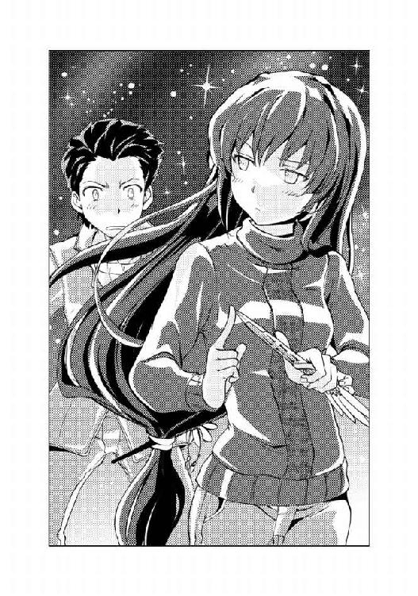

| 龍ヶ嬢七々々の埋蔵金 02 | |
| 鳳乃一真 | |
| KADOKAWA / エンターブレイン (2012) | |
本作品の全部または一部を無断で複製、転載、配信、送信したり、ホームページ上に転載することを禁止します。また、本作品の内容を無断で改変、改ざん等を行うことも禁止します。
本作品購入時にご承諾いただいた規約により、有償・無償にかかわらず本作品を第三者に譲渡することはできません。
本作品は本文縦組で制作されております。ごらんになるリーディングシステムにより、表示の差が認められることがあります。
「という訳でゲームしよう、重護」
いつもより遅い時間に学校から帰ってきた俺に、ゴロゴロと寝転んでいたベッドから元気よく起き上がった七々々ちゃんが、開口一番そんなことを言いだした。
「いや、七々々ちゃん、何が『という訳で』かは分からないんだけどさ。俺もうすぐ中間テストだから、今から勉強したいんだけど」
そう言ったら、長い髪に可愛らしいデザインのリボンを着けた女の子は、「えーっ」と普段は大きくて円らな瞳を細め、チャームポイントであるぷるんとした唇をへの字に曲げてご立腹。
「最近そればっか、そんなの適当でいいじゃん」
「そういう訳にもいきません」
そう断る俺に、「ぶーっ、ぶーっ」と文句を言う彼女の名前は龍ヶ嬢七々々ちゃん。
俺と一緒にこのアパート《幸せ荘》の二〇二号室に住んでいる女の子である。
それってつまり同棲じゃん！ と思ったそこのあなた、それは大きな間違いです。
俺は、七々々ちゃんととある事情があって、この部屋で一緒に生活しているだけなのです。
ついでに言っておくと、俺はそんなに勉強熱心な人間ではない。むしろ勉強になんて何の楽しみも見出せない極々平凡な一般人であると、胸を張って断言できる。
だからといって、「これから勉強をする」という理由は、七々々ちゃんのお誘いをやんわり断るための口実という訳でもない。
むしろやりたい。テスト勉強なんてそっちのけで、「それじゃ、意識が飛ぶまでやっちゃう？」と、目先の苦行を放棄して、ＴＶゲェームの世界に逃避したいくらいだ。
だが残念なことにそういう訳にもいかない。
なぜなら今度の中間テストで赤点を取ると、とてもマズイことになるからである。
ひと月前、実の父親に楯突いた結果、半勘当で島流しの憂き目にあった俺は、人口約一〇万人、その八割近くが学生という《学生特区》の別名を持つこの七重島へとやってきた。そしてすぐに新しい学校の授業で置いてけぼりを食らってしまった。
理由は単純明快。前にいた学校より授業の進行具合がかなり早かったのだ。
結果、授業で指されても何も答えられず、小テストでも限りなく無に近い点数を取り続け、挙句、担任教師に呼び出しをくらい、「ちょっとこれはマズイね。中間テストも点数が良くないようだと......」と転校早々『留年』どころか『島から追放』を仄めかす発言をされる始末。
いくらなんでも厳しすぎると思うのだが、それがこの《学生特区》の流儀であるそうなので文句は聞いてもらえなかった。
勉学に励むために最適な環境と最新設備が整ったこの島では、最低限の努力（赤点回避）をしなかった人間は、ことごとく切り捨てられるらしい。
まあ、きちんと授業を受けていれば、そんな窮地に陥ることなんて滅多にないそうなのだが、俺の場合、転校生であることからこういう状況になってしまったのだ。
そこは転校生なのだから大目に見てほしいところなのだが、そうは問屋が卸さないらしい。「求められれば時間の許す限り教える。だが、それすら怠る人間にかける慈悲など、この島には存在しない」と担任にきっぱりと言い渡されてしまった。
そんなこんなで、今日も今日とて放課後は優しいクラスの学級委員さんと一緒に図書室でテスト勉強（というか一方的に教わっている）に精を出してきた俺は、またこれからガッツリと勉強をしなければならないのだ。
なので申し訳ないが七々々ちゃんの相手をしている暇はない。
今回の中間テストでは、なんとしてもそれなりの成績を修めなければならないのだ。
「とにかく俺は一緒に遊べないんだ。悪いけど、しばらくは一人で遊んでいてよ、七々々ちゃん」
そう七々々ちゃんの申し出をキッパリと断り、そそくさと制服からジャージに着替えると、手早く晩飯を作って腹に収め、さっそく折りたたみ式のテーブルの上に開いたノートに教科書の内容を写してゆく。
そうやって勉強に集中するものの、なんだか部屋の空気が異様に重い。
教科書から顔を上げて部屋の中を見渡すが、部屋には俺一人しかいない。
だけど部屋の空気がなんだかとっても重たいのだ。
「......イジイジ、イジイジ」
その主な理由としては、なんだかさっきから「私はとっても拗ねていますよ」的な呟き声だけがどこからともなく聞こえてくることが上げられる。
再びノートに目を落としカリカリカリとペンを走らせるが、それと同じくらい「イジイジ、イジイジ」というか細い呟き声がエンドレスで響いてくる。
なんだか永遠に続きそうな呟きに、俺はため息とともに折れた。
「分かったよ、七々々ちゃん。一時間だけ一緒にゲームしよう」
「ホント！」
いつの間にか目の前に立っている七々々ちゃんに、俺はコクリと頷いた。
「やったぁー！」
ぴょんぴょん飛び跳ねて大喜びの七々々ちゃんは、さっそくテレビをつけて、ゲーム機本体の電源を入れる。
そんな七々々ちゃんの隣に腰掛けると、七々々ちゃんはとっても嬉しそうに笑顔を浮かべた。
「まったく重護がゲームソフトなんて買ってきちゃうから、私はネトゲに、テレビゲームに大忙しだよ」
ワクワクと目を輝かせながら立ち上げ画面を見つめる七々々ちゃんは実に楽しそうだ。
そんな七々々ちゃんについて軽く触れておくと、七々々ちゃんはこの部屋から一歩も外に出られない。
それは七々々ちゃんが引き籠もりだからという訳でも（あながち否定もしきれないが）、俺が頭のイカれた犯罪者で七々々ちゃんを監禁拘束しているからという訳でもない。
まあはっきりと言ってしまえば、
龍ヶ嬢七々々は一〇年前にこの《幸せ荘》の二〇二号室で殺された女の子の地縛霊なのである。
それ以来、七々々ちゃんは、成仏することもなく、自分を殺した犯人を殺すという目的のために、この部屋に取り憑いているのだ。
ああ、ちなみに七々々ちゃんの趣味はネットゲーム。なんでも、この島で流行っているなんとかっていうネトゲではそれなりに名の知られた存在であるらしい。好きな食べ物はプリン、というかプリンしか食べられない、というか地縛霊なのになぜかプリンが食べられる。
もう一度言うが、龍ヶ嬢七々々は地縛霊である。
だから俺からは触ることもできないし、さっきイジケていた時みたいに消えることだってできる。......まあ、それでも、七々々ちゃんからは俺に、というか何でもかんでも触れることはできるんだけどね（ちなみにちょっとひんやりします）。
そんな、「あなた本当に地縛霊なのですか？」疑惑すらある特異な地縛霊・龍ヶ嬢七々々ちゃんは、とても寂しがり屋で、誰かと喋ったり遊んだりするのが大好きだ。
だけど、七々々ちゃんは地縛霊であり、この部屋から一歩も出ることができない。
だから七々々ちゃんは、この家の住人（七々々ちゃん的には居候）である俺と遊ぶのを楽しみに思ってくれているらしい。
それは理解しているのだが、最近はテスト勉強が忙しくて相手をしてあげる事が難しい。そう思って七々々ちゃんのためにと幾つかゲームソフトを買ってきたのだが、むしろ一緒にやろうと誘ってくるのだ。
はっきり言ってそのお誘いは素直に嬉しい。だが、残念ながら中間テストという敗北（赤点）の許されない戦いが待ち受けている今の俺にとって、そんな愉悦に興じることなど言語道断。
結局それから一時間ほどして、ゲームの切りの良い所で俺はコントローラーを置いた。
「はい、終わり」
「えーっ、もっとやろうよ」
「ダメ、もう時間だから終わり。本当に勉強しなきゃいけないから」
そう言うと、七々々ちゃんはちょっとしょんぼりしたが、「分かった」と言って、コントローラーを置いてしまった。
「じゃあ、私も終わり」
「えっ、一人でやっていればいいのに」
そう言ったら、七々々ちゃんは「いいんだ」と首を横に振った。
「だって、これ重護が買ってきてくれたヤツだし。どうせだったら一緒にやりたいもん」
そうにっこりと笑ってもらって、不覚にもメチャクチャ嬉しく思ってしまった。
思わず自分に課せられた責務（テスト勉強）を遥か彼方に投げ捨て、調子の良いノリで「仕方ないなぁ、じゃあもっとやっちゃう？」と口走ってしまいそうになるほどに。
だけどそう言いたい気持ちをグッと我慢して、「そっか」と素っ気なく振舞う。
「そんじゃ俺は、勉強するね」
「うん、ごめんね。つき合わせちゃって」
「別にいいよ、俺も楽しかったし」
「がんばってね、テスト勉強」
そうエールを贈られ「まかせておけ」と、気合を入れて勉強に勤しむ。
だけど、視界の中にチラチラと映る、クッションを抱きしめながら一人でテレビを見ている七々々ちゃんの姿に、なんだかモヤモヤした気持ちが湧き上がってくる。
だけど今回ばかりはどうすることもできず、そんな気持ちを振り払い、俺は勉強に集中した。
それから数日後に行われた中間テスト最終日の放課後、俺は担任教師に呼び出された。
「さっき、他の先生方に聞いて回ってきたが、赤点はないそうだ。むしろ、平均点以上で皆さん驚かれていたぞ」
「それはよかったです」
ホッと安堵し、改めて担任に尋ねた。
「これで転校の話はなかったことでいいですよね？」
「ああ、そうだな」
先日、担任に成績について指摘された時、俺は転校を薦められた。
島から出て行けという訳ではなく、今いる第三高等部から七重島内にある別の高校への転校を薦められたのだ。七重島には今現在、七つの高校が存在しており、学校によって教える勉強の量や早さに差があるらしい。俺が薦められたのは第七高等部、ここからだと島の反対側にあるらしい。
「一番新しい高校だし、完成したばかりの綺麗な寮もあるから、島の外から来たばかりの八真にはそっちの方が良いと思ったんだがな」
担任の善意の薦めにお礼をいい、「失礼しました」と職員室から出ると、なんとなく心の中で釈明。
すいません、転校は別に良かったんですけど、今の部屋から引っ越す気は更々なかったので。
まあ、なんにしてもようやくテストから解放されホッとした。
これでしばらくは勉強の心配はしなくて済むだろう。
なら、そろそろ本題に戻るとしよう。
一〇年前に七々々ちゃんを殺した犯人を見つけ出す。
それは、俺が七々々ちゃんにした大事な約束であり、今現在の俺の目的でもある。
思わぬテスト勉強に時間をとられてしまったが、それが終わった今、俺の邪魔をするモノはもう何もない。
だから再び動き出す、その約束を果たすため。
なにせ『約束は絶対に護りなさい』と教えられて育ってきたので。
１
肉という食べ物はとてもステキだと思う。だって美味いから。
さらに言えば、焼肉という調理方法は最強だと思う。だってメチャクチャ美味いから。
もっと言えば、『食べ放題』とか『安い』とかいう肩書きではなく、『高級』という肩書きを持った焼肉は、至高の存在だと思う。だって果てしなく美味いんだもん。
という訳で、中間テストの打ち上げという名目で集まった俺たちの前には、その『高級』焼肉がズラリと並んでいる。
「今日は僕の奢りだから、どんどん食べてね」
そう爽やか笑顔を浮かべるのは、俺が所属する冒険部の部長である唯我一心先輩。
そんな部長の言葉を待たずして、すでに俺たち冒険部一同は、初めて食する『高級』の肩書きを持つエリート肉たちを火で炙り、次々と口の中へと放り込んでいく。
場所は、学校近くの繁華街にある高級焼肉店『極牛』。学生が大半を占める七重島であっても、高級食材を扱っている店はあるらしい。
凝った内装の座敷の個室に案内され、唯我部長を始めとする俺たち冒険部六名は、こうして焼肉を突付き合って（というか奪い合って）いる。
さて、なぜたかが高校の部活風情がこうして高級焼肉屋で食事をしているのかといえば、それにはちょっとした訳がある。
「この前は、本当に悪かったね」
謝罪する唯我部長。今回の打ち上げは、前回、部長の裏切り行為により酷い目にあった俺たち二年生三人に対する謝罪の意味も込められているのだ。
そう唯我部長は頭を下げてくれるのだが......
「一心様、後輩ごときに謝る必要なんてないですよ。こんな連中、雑に扱ったって文句は言わせません」
険のある言葉を吐きながら、コラーゲンたっぷりの内臓系を攻め続けるのは、唯我部長の右に座る副部長・茨夕先輩。その見た目の華やかな美しさと可愛らしさを持つ一方、デレ続ける若干一名を除き、それ以外の全てに対して決して溶けない永久凍土のツンの棘を突き出しているお姉さまでもある。
「それは違うぞ、茨。非礼は誠意をもって詫びるべきモノだ」
そう堅苦しいことを言いながら、神がかり的な早さで焼けた肉を回収していくのは、唯我部長の右に座る冒険部・諜報担当という謎の肩書きを持つ、徒然影虎先輩。シャープな目付きと極限まで引き締められた痩軀の徒然先輩は、諜報担当だけあって忍者みたい......というか忍者そのものだ。普段は一切姿を見せず、俺も会うのはこれで二回目だ。
そんな正面に座る徒然先輩の箸と俺の箸が熱を帯びた金網の上で炙られる特上カルビの上で激突した。
まるで真剣同士の鍔迫り合いのように箸をぶつけ合う俺たちの視線も自然とぶつかる。
「そういえば、徒然先輩。俺、前回殴られたことまだ謝ってもらってないんですけど？」
「ふん、何を言い出すかと思えば。その程度の交渉カードで俺が引くとでも思ったか、八真後輩？ 第一あの時は、殴る前に謝っておいたのだから、後ろめたいことなど何もない」
「殴ったんだから後ろめたく思え！ つーか、この肉を寄越さないなら、俺にも殴らせろ。それでチャラだ」
「ふむ、自分の過ちはいつか自分に返ってくるか。因果応報とはよく言ったものだ」
どこか遠くを見つめるような表情を浮かべ、「ふっ」と寂しそうに笑う徒然先輩は、次の瞬間、「カッ」と目を見開いた。
「だが、断る！ なぜなら俺は殴られるのが大嫌いだからだ！」
「なにを力いっぱい叫んでんだ！ んなもん、俺だって嫌いに決まってんだろうが！ 殴られるのが好きなヤツなんている訳ないだろ！」
「それは些か無垢な発想というものだぞ、八真後輩。なぜなら一心はドＭゆえ、女に殴られることに快楽を得る修羅なのだ」
「ま、まさか！」
驚きのあまり箸の力が緩んだ。
ほんの一瞬だった。その一瞬の気の緩みの隙に、徒然先輩の箸は狙っていた肉を掻っ攫っていた。
「もぐもぐ......ゴクリ。ふん、あまいな、八真後輩。戦場であれば今の一瞬で貴様は命を失っていたぞ」
「えっと、すいません。とってもいい表情で語っていらっしゃるところ申し訳ないんですけど、今のって......マジですか？」
思わず、「あの、一心様。両頰がザクロみたいに真っ赤になるまで殴った方がいいでしょうか？」とモジモジしながら乙女な表情でバイオレンスなアプローチを敢行しようとしている茨先輩に、今まさに襲われそうな唯我部長に目を向ける俺の問いに、徒然先輩は不敵に笑った。
「これぞ間諜の計」
「ニセ情報だぁ！」
忍者な先輩にしてやられた。
だがその結果、「ははっ、夕のそういう所が僕は大嫌いなんだ」と爽やかに笑う唯我部長の声とともに、「ち、違うんです、一心様！ 私は影虎のアホに騙されただけで......影虎、あとでボコす」という死の宣告が聞こえてきたりした。
「ふっ、策士策に溺れるとはよく言ったものだ」
額に汗を浮かべカタカタと震える徒然先輩、どうやら徒然先輩も茨先輩が怖いらしい。
そして再び同じ標的を狙い激突する、俺と徒然先輩の箸。
「くっ、貴様も懲りぬ男だな、八真後輩」
「徒然先輩こそ、さっき食べたんだから譲ってくださいよ」
睨み合う俺たち、そんな俺たちを尻目に、ヒョイと横から伸びてきた箸が、その肉を掻っ攫っていった。
「「なっ！」」
驚愕する俺たちの目の前で、その特上ハラミは、悠々と箸の持ち主の口の中へと消えていった。
「モフモフ......ごくり。これぞ漁夫の利なり」
ニヤリと不敵に笑い、美味しい所を持っていきやがったのは、俺の隣に座る小柄な金髪の女の子。その名も......
「この名探偵・壱級天災に取れない肉などない！」
なんだか有名なフレーズの二箇所間違いみたいなことを言いながら、妙なポーズを決める天災は、とても残念な子であると、俺は常々思う。
だが、そう思っている俺とは正反対に、天災の向こう側に座る、見た目のみ最重要保護指定美少女・黒髪と浅黒の肌の外人である星埜ダルクは嬉しそうにパチパチと拍手をしている。ちなみに、そんな女の子らしい拍手をするダルクは先ほどから一切肉を食べていない。なんでも「すいません、ボクお肉が食べられないんです」とのことで、チョレギサラダしか食べていない。単に菜食主義者なのか、宗教的な理由なのかは分からないが、とにかく敵が一人でも少ないことはいいことだ。
と、思っていたら、ダルクが焼けた肉を、ヒョイと箸で器用に持ち上げた。全員が敵と判断していなかった故に、ダルクはあっさりと特上ロースを獲得した。
「はい、天災。......あ、あーん」
手を添えて、ちょっと恥ずかしそうにお肉を差し出すダルク。
箸に摘まれた美味しそうに焼きあがった肉を目の前でちらつかされ、天災が鼻で笑う。
「ふん、ダルク。貴様、付き人の分際で、私に『あーん』をさせようなどとは分不相応にもほほがはふっ、はふっ、もふもふ」
「って、食うのかよ！」
「もふもふ、ゴクリ。美味しそうだったのでつい食べてしまった」
本当にこの子は欲望に忠実な子だねぇ。
そう呆れた次の瞬間、俺は目を見開いた。
なぜなら俺の視線の先で、今まさにとんでもない行為が行われようとしていたからだ。
たった今、天災に「あーん」と肉を食べさせたダルク。そのダルクが俯きながら何かを見つめていた。そう、それはたった今、天災に食べさせた肉を摘んでいた箸、つまり少し前まで天災の口の中に入っていた箸である。
その先端を、俯くダルクがジッと見つめていたのだ。
さて諸君、監査の時間だ。
状況を確認しよう。
星埜ダルクは、見た目的には美少女だ。少し癖のある黒髪、浅黒い肌と日本人とは若干異なる整った顔立ちの美少女である。どこの国の人かは分からないが、俺的に中東か東南アジア系ではないだろうかと予測している美少女である。大事なことなのでもう一度くらい言っておくが、美少女である。
だがそれは見た目だけである。なぜなら星埜ダルクは男の娘であるからだ。女子の制服を身に纏い、普段着すらヒラヒラとした可愛い洋服（なんでも自分で縫っているらしい）を身に纏ってはいるが、他の男同様エクカリバーを持つ、生粋の変態野郎なのである。「ボ、ボクだって本当は嫌なんだからね」と女装は天災に強制させられて仕方なくしていることを強調してはいるが、そんな言葉が本当かすら疑わしい。
そんなヤツが、女の子の口に入った箸の先を見つめているのだ。
俺は瞬時に悟ったね。ああっ、こいつやるなって。
なぜなら、俺でも同じことを思いつくだろうから。
だけどね、思うだけで止めるのと、実際にやってしまうのとではまったく違う。踏み越えていいのかよくないのか、それは分かるよね？ 常識ある人間としてさ。
やっぱりそういうことはやっちゃいけませんよ。
そう思う俺の目の前で、問題の箸の先とそれを握るダルクの口元が近づき始めた。
俺は驚いた。こいつ、まさかやる気か！
そこで声に出して注意すれば全てが終わっていただろう。だが、俺は声を失っていた。
理由は簡単だ。
思わず見入ってしまったのだ。
改めて言うが星埜ダルクは見た目のみ美少女である。そんな美少女が、女の子の口に入った箸の先を口に入れようとしているのだ。
なんだか、エロくね？
俯き、浅黒い頰を仄かに赤らめる美少女。微かに開かれた小さな口元に向かい、その手に握られた箸の先がそっと近づいていく。だがその速度は遅々たるモノだ。そこには様々な葛藤が見て取れる。そんなことはしてはいけないという理性、だが一方で、自分が慕う主の唾液を味わいたいという自らの穢れた欲求を拭い去ることもできない。二つの感情の狭間で思い悩みながらも、その箸は、ゆっくりと、だけど確実に、愛らしい口元に近づいてゆく。背徳的な痴態に自然と高まる胸の鼓動に、頰は上気し、微かに乱れる息遣い。どこかとろんとした瞳で見つめる箸の味を待ちきれず、息遣いの荒くなった口元からちろりと小さな舌が顔を出し――
って、何をガン見してんだ、俺はぁぁぁぁああああ！
危ねぇ、危うく禁断の境地に陥るところだった。人体錬成もしてないのに、真理の門の前に立っちまった。もうすぐで世界の真理を覗いちまうところだった。
「「「「ごちそうさまでした」」」」
その声に「はっ」となって思わずテーブルに目を向ける。
そこにはすでに肉は一枚も残っていなかった。
しまった、つい変態野郎に見入って肉を取ることを怠ってしまった！
そして再び「はっ」となって、見た目のみ美少女に目を向ける。
ダルクは、何事もなかったかのように箸を置き、「ごちそうさまでした」と手を合わせている。
えっ、どっち？ やったの？ やってないの？
なんということだ、決定的瞬間を見逃してしまった。
ちょっと頰が赤い気がするので個人的にはやってくれている方が、なんとなく嬉しいのですが......
そんな葛藤に苛まれる俺を他所に、唯我部長が食事を終えた全員を見回した。
「それではお腹も一杯になったところで、第三高等部・冒険部の今後の活動内容について話したいと思う」
俺が所属する冒険部の活動目的、それはこの七重島のどこかに隠されているという《龍ヶ嬢七々々の埋蔵金》の一部である《七々々コレクション》を手に入れることにある。
《龍ヶ嬢七々々の埋蔵金》とは、その名の通りウチにいらっしゃる引き籠もり属性の地縛霊様の遺産である。現在、行方不明とされているその遺産の価値は、数千億とも数兆とも言われている。
そんな《龍ヶ嬢七々々の埋蔵金》の中で、異彩を放つ秘宝の数々こそが《七々々コレクション》。それは生前、七々々ちゃんが古代の遺跡から持ち帰ったり歴史に埋もれた建造物などからパク......こっそりと持ってきたりと、世界中から集めてきた秘宝の数々である。
そしてそれらの秘宝には共通することが一つある。それは、その全てに人智を超えた特殊な力が備わっているということだ。その力は多岐に渡り、「七々々コレクションが全て集まれば、およそ人が望む全ての願望が叶う」とさえ言われているらしい。
それを探すことが冒険部の目的なのである。
ちなみに俺の願いは、一〇年前に七々々ちゃんを殺した犯人を見つけること。
生前の七々々ちゃんは、一八歳で死ぬまでにこれだけのことをやってのけたが、その偉業はそれだけに止まらない。龍ヶ嬢七々々、彼女は一二年前にこの七重島を作った七人の天才学生《ＧＲＥＡＴ７》の一人であり、そのトップだった女の子なのだ。
だから七々々ちゃんが死んだとき、七重島の総力を上げて犯人探しが行われたそうだ。だが、結局犯人は見つからず、事件は迷宮入りとなってしまった。
そんな犯人の手がかりはただ一つ。七々々ちゃんの語った、首の後ろに《龍の痣》がある人間。そんな人間、残念ながら俺は一人も.........知らない。
「それで、これからどうするつもりですか？」
食後に出されたお茶を啜りながら、俺はそう唯我部長に尋ねた。
「実は《遺跡》がありそうな場所に当たりがついてね、今度皆と調べに行きたいと考えているんだ」
《遺跡》、それはこの七重島のあちらこちらに存在する七々々コレクションの隠されている部屋を指す。遺跡と聞くと、ＲＰＧのダンジョンや映画に出てくる古代遺跡を連想してしまうが、この七重島にある《遺跡》は少し毛色が違う。学校の校舎の一室であったり、最新の高層ビルの中にある隠し部屋だったりと、まったく想像ができない場所にあるのである。《遺跡》に関するヒントは一切なく、どこにあるのかさっぱり分からない。前回も《遺跡》の場所を知っているらしい七々々ちゃんに、なんとかヒントを貰い、《遺跡》を探し当てたくらいだ。
「それで、その《遺跡》がありそうな場所ってどこなんですか？」
「島の西側にある温泉街」
「温泉？ この島に温泉なんてあるんですか？」
この七重島は一二年前に作られた人工島じゃなかったっけ？
「島の真下の海底調査をしている時に偶然温泉脈が発見されて、そのまま汲み上げているらしい。この島の人気スポットのひとつでね、この辺からだと二時間くらいかな？」
「へぇ、そんな場所があったんだ」
「という訳で、どうせだから週末に一泊合宿でもしようと思うんだけど、どうだろう？」
温泉で宝探しの合宿か、面白そうだな。
それに温泉とはまたムフフなことが起こりそうな......
「ああ、何人か邪悪な笑みを浮かべているから言っておくけど、僕たちは学生だからキチンと節度ある行動を心がけようね」
そう唯我部長に釘を刺されてしまった。俺はともかく、茨先輩が「ちっ」と舌打ちをしたのが妙に気になった。
話し合いが終わり、皆ぞろぞろと店を出る中、レジで会計をしている唯我部長にそっと近づく。
「唯我部長、本当にこんな高いお店でごちそうになっちゃってよかったんですか？」
「構わないよ。皆が満足してくれたみたいで本当によかったよ」
「っていうか、唯我部長ってお金持ちとかなんですか？」
会計で唯我部長が支払った額はかなりの金額に達していた。
「いや、ウチの親はしがないサラリーマンだし、家が金持ちというわけでもないよ」
「えっ、大丈夫なんですか、お金？」
「この前話しただろ？ ちょっとした臨時収入があったって」
そういえば、前回そんなことを言っていたな。
「それにここの店長さんとは知り合いでね。大分サービスしてもらったんだ」
そんなことを話していると、店の奥から二〇代くらいの若くて美人のお姉さんがこちらに近づいてきた。
「一心君、もう帰るの？」
エプロンとバンダナがよく似合うショートヘアのお姉さんに、唯我部長が頷く。
「ええ、ごちそうさまでした。とっても美味しかったですよ」
微笑む唯我部長に、そのお姉さんは近づき、何かを耳打ちした。
「ねえ、一心君......今夜は......」
「はい、後でまた......」
なんだか結構身体を密着させながら、というか軽いハグをしながら囁きあう二人。
そしてお姉さんは、呆然と突っ立っている俺に「また来てくださいね」と微笑み、嬉しそうに店の奥へと消えていった。
「......あの、唯我部長、今の人は？」
「ああ、この店の店長さんだよ」
「えっ、あの若いお姉さんがこんな高級焼肉店の店長をやっているんですか!?」
「この島では珍しいことじゃないよ。この島の学校を卒業した学生は、大半がこの七重島関連の企業に就職したり出店したりしているからね。必然的に今現在活躍している人のほとんどが二十代の人なんだ」
この七重島にあるお店は、全てこの島独自のオリジナルブランドであり、どこにでもあるような有名チェーン店すら一件も存在しない。それはこの七重島が、江戸時代の日本みたいに鎖国のような政策を取っていて、外部企業の参入を一切許していないからだ。もちろん、島ができた当時から働いている人もいるので年配者がいないという訳ではないが、その数は決して多くはない。
まあ、それはともかくとして......
「えっと、それで先ほどの女店長さんは、その......唯我部長の彼女さんか何かですか？」
恐る恐る尋ねる俺に、唯我部長サラリと答えた。
「そんなんじゃないよ、ちょっとした知り合いだよ」
微笑む唯我部長。
なぜだろう。前回あれだけ殴りたくないと思った男を、今全力で殴りたい。
つーか、唯我部長。あなたさっき節度ある行動がどうたらこうたら言ってませんでしたっけ？
などと唯我部長の知られざる一面を垣間見たところで、本日の打ち上げパーティーはお開きとなった。
なんにしても週末は温泉合宿か、今から楽しみである。
２
「うーん、ちょっとお腹がキツいな」
先輩三人と別れ、トボトボと帰路につく中、隣を歩く天災が高級肉をたらふく収めたお腹をさすさすしながらボソリと呟いた。
「太ったな」
ゲシリ
思いっきり蹴られた。
「ふん、重護、どうやら貴様は何も理解していないようだな」
やれやれとジェスチャーする天災は、俺を指差し、そして叫んだ。
「名探偵は太らない！」
「キリッとした表情で言うな！ つーか、なんでもかんでも名探偵を付ければ許されると思うなよ！」
「許してくれ」
「誰に許しを乞うているんだ、お前は!?」
「肉の神様」
「名探偵が神様あてにしちゃったよ！ しかも肉の神様ってなんだかご利益なさそう、むしろ太りそう！」
「さて、私が太らないことが確定したところで......」
「確定してねぇよ！」
「話の腰を折るな。それで重護......」
「なんだよ？」
「いったい貴様はいつになったら悪さをするのだ」
名探偵に睨まれた、「悪事をしないから」という理不尽な理由でイライラされた。
「だいたい、最近の貴様はたるんでいる！ 真面目にテスト勉強になど精を出してからに！ それでこの世界に絶望と混沌を撒き散らせると思っているのか！」
「人をどこぞの大魔王みたいに言うな。俺は悪事とは無縁のいたって健全な青少年だ」
そう主張したら、後ろから「噓つき」という呟きが聞こえてきた。
「おい、後ろを歩いている付き人！ なにボソリと呟いていやがる！」
「だって、重護くん。この前ボクをトイレに連れ込んで悪いことさせたでしょ？」
「おい、公共の場でなに口走ってんだ、ダルク！ 今すれ違った女の子に変な目で見られたじゃねえか！ つーか、それはこの前のトランプのことだろ！ あれは戦略だ！」
オーバーリアクション気味に必死に主張。
「ふっ、自分の悪事を正当化しようとするのは実に悪党らしい言動だ。私は重護のそういう所に期待している」
「なんだか会社の偉い人が部下の肩を叩くみたいに俺の肩を叩くな、名探偵」
「とにかく、なるべく早急に悪事を働いてくれ、好敵手よ」
ニヤリと笑う、悪徳部長......じゃなくて名探偵。
そう、俺はなぜか知らないが、この自称名探偵にライバル認定されており、ことあるごとに悪事を働くようにと強要されているのだ。
「そうしないと私の活躍の場がなくて困る」
その主な理由が完全にコイツのエゴであるので最高に性質が悪い。
「それはさておき、明日はまた夕食を食べにいくから準備しておくように」
「腹いっぱいの状態でよく明日の晩飯の話ができるな、お前。というかもう来るな」
「重護の意見など関係ない。これは七々々殿との約束だ」
この迷惑極まりない名探偵は、付き人を連れ、毎週二日ほど不定期にウチにメシを食いに来る。それは、先日ウチで開かれたトランプ大会が原因である。まあ、細かい話はさておき、それ以来、この二人はウチに晩飯をタカリにくるのだ。
「というか、正直重護の作る食事は美味くもなんともないな」
「なら、お前が作れよ！」
毎回突然訪れては「飯を作れ」と騒ぎだし、終いには「マズイ」と文句を言って帰ってゆく。本当に強盗顔負けのタカリである。
そんなゲンナリする俺の服の袖を、後ろを歩いていたダルクがクィクィと引っ張る。そして半分振り返った俺に小声で囁く。
「重護くん、今度ボクも手伝うね」
にっこりと笑いながらそんな気配りのできる付き人に、思わずため息が出る。
本当にね、なんでコイツにジョニーが付いているんだろうね？
「まあ、なんにしてもだ、重護。今度の温泉合宿は、貴様が悪事を働くのに絶好のシチュエーションといえるだろう。ぜひ何かしてくれることを期待する。ああ、だが痴漢や婦女暴行、覗き関係は止めてくれ。そんなヤツを捕まえても名探偵の株は上がらない」
「だから自分が活躍したいからという理由で人に犯罪を促すな。しかも妙な条件出すな」
「なんだ、そっち系がしたかったのか？」
「だからしねえよ！」
そんなことを話しているうちにあっという間に幸せ荘に到着。そのまま三人で幸せ荘の階段を登る。
「ではお休みだ、重護」
「お休みなさい、重護くん」
先日隣の二〇三号室に引っ越してきた迷惑極まりない隣人たちに「お休み」と手を振り、俺は二〇二号室の扉を開いた。
「ただいま」
３
「......ってことがあったんだ」
七々々ちゃんとテレビゲームしながら、今や日課になってしまった本日の報告をすると、巧みなコントローラー捌きを見せる七々々ちゃんが「ふーん」と呟く。
現在俺たち二人がやっているのは、某有名ゲームメーカーの看板シリーズである三国志のキャラクターを操作して無数に襲い掛かってくる兵士をなぎ払いながら敵武将をやっつけるゲームである。それは七々々ちゃんのためにと、先日大量購入してきたゲームの中の一本だ。
ゲーム機本体は、この部屋を借りた時に一通りの機種が揃っていたのでソフトを買うだけで済んだ。ちなみに最初から部屋にあったゲームは、日本各地を巡る某有名スゴロクゲームであり、七々々ちゃんは驚くほど短期間で全国制覇を成し、他の最強ＣＰＵ軍団を全員借金まみれにするというチート級の所業をあっさりと達成していた。
「えい、やあ、とう！」
そんな声とともに楽しそうにカチャカチャとボタン連打する七々々ちゃんは、このゲームの協力プレイが相当気に入ったらしく、暇さえあれば（ネトゲー、お笑い番組観賞、プリンを食べている時以外）、「一緒にやろう」と誘ってくる。
七々々ちゃんが使うのは、可憐な女の子キャラ。本当は俺も女の子キャラを使いたいのだが、七々々ちゃんの前ゆえ、格好付けてイケメンキャラを使用。
そんな見栄っ張りな俺の話を聞いて、「皆で温泉かぁ」と七々々ちゃんが羨ましそうな表情を浮かべる。
「そういえば、前にカスミが友達と行ったって言っていたな。いいなぁ、私が生きているうちはまだなかったんだよね」
思わず七々々ちゃんの入浴シーンを妄想......おっと、敵武将から思わぬ反撃を......。
「重護、集中」
ゲームに真剣な七々々ちゃんに怒られてしまった。
ちなみに先ほど七々々ちゃんの話に出てきたカスミというのは、かつてこの二〇二号室に住んでいたという謎の先輩・今生霞さんのことである。見たことも会ったこともないのだが、彼女のことはそれなりに知っている。この部屋のトイレには、その今生先輩が残した謎のノート《七々々マニュアル》というモノがあるし、何より我らが冒険部の初代部長にして創設者でもある。
「それでさ、その温泉街に隠されている七々々コレクションって何かあったりする？」
さりげなく七々々ちゃんに聞いてみる。
「教えてあげない」
そして予想通り、七々々ルールの発動により、あっさりと拒否られた。
七々々ちゃんは、通称《七々々ルール》という妙な自分ルールを持っている。
七々々ちゃんは、そのルールというか心意気というかポリシーみたいなモノをとにかく大事にしており、絶対遵守を心がけている。
だからそれに抵触する事柄に関しては何も教えてくれない。
そんな七々々ルールは主に三つある。
１、『基本的に、龍ヶ嬢七々々の埋蔵金（七々々コレクションを含む）に関する事柄は教えてくれない』
２、『ただし手に入れた七々々コレクションを七々々ちゃんのところに持って来れば、その七々々コレクションに関する説明はキチンとしてくれる』
３、『七々々ちゃんは七々々コレクション集めにおいて、中立の立場を崩さない。たとえ誰であっても最低限の情報は等しく公開するが、それ以上のことに関しては、たとえどんなに親しい間柄でも決して教えてはくれない』
まあ、それでも七々々ちゃんは甘々な性格なので、ゴネればヒントはくれたりする。
「一応言っておくけど、この前ヒントあげたから当分ヒントはあげません。自分でどうにかしなさい」
と思ったら、先んじて手厳しいお言葉を頂いてしまった。
「重護は甘やかすとダメになりそうなので厳しくいきます」
どうやら俺は、甘やかされれば甘え続けるタイプと思われているらしい。......そんなことないと思うんだけどなぁ。
そう自己分析をする俺に向かって、七々々ちゃんがにっこりと微笑んだ。
「まあ私はもう温泉に行けないから、重護の話で我慢するよ。だからまたいっぱいお話ししてね」
この部屋から一歩も出ることができない七々々ちゃんは、俺が外でどんなことをしてきたのかを知りたがり、いつも笑顔で聞いてくる。
俺も七々々ちゃんに今日の出来事を話すのは嫌いじゃない。にこにこと話を聞いてくれるのが、なんだか普通に嬉しい。
でもまあ、そんな風に思っているなんて小っ恥ずかしくて知られたくありませんので、「了解」とだけ素っ気なく答えておく。
とまあそんな話をしながら、それからしばらくは、二人ともゲームに集中。ボス武将を協力プレイで撃破し、ステージをクリアするたびにハイタッチ。この時ばかりは、地縛霊である七々々ちゃんの、ひんやりと冷たいはずの手を温かく感じるのは気のせいだろうか？
それから深夜遅くまで二人でゲームを楽しんだ後、ふと携帯を見ると、いつの間にかメールを受信していた。
それはとある女性からのデートのお誘いだった。
４
土曜日、半日授業を終えた俺は、すぐに家に帰ると、クローゼットから一張羅を引っ張り出した。
「今日はなんだか気合が入っているね」
普段着のジャージではない服を着ながら鏡の前に立つ俺は、プリンの容器にスプーンを差し込む七々々ちゃんに、男前でニヒルな表情を向けた。
「うん、何せ今日はこれからデートだからね」
秘密にしておくこともできたが、ここはあえてダンディズムな笑顔を浮かべてみる。
すると、七々々ちゃんは急に不機嫌になって「あっそ」と唇を尖らせてプイッとそっぽを向いてしまった――なんてことはなく。
「おっ、いいねぇ、それじゃあちゃんと相手の女の子をエスコートしてあげるんだよ」
と、にこにこ笑顔。さらには「しっかりやってこい」と檄を飛ばされてしまいました。
いや、そういうんじゃないんですよ、七々々ちゃん。俺的には、ちょっとこう、七々々ちゃんに嫉妬的な態度を見せてもらいたいというか......モジモジ。
「あっ、帰りにプリン買ってきてね」
だが、そんな俺のささやかな願いは届かず、終いにはおみやげ買って来いとまで言われてしまいました。
ふと思います......この世に、神様っているのかな？
デートというのはウソじゃない。ただ俺がそうであると言い張っているだけだけど。
先日のメールの内容をそのまま述べると......
『大事な話があります。会って話がしたいので、暇な日時を教えて下さい』
これってデートのお誘いだよね、きっと
という訳で待ち合わせの場所は、繁華街にあるとある喫茶店。先日知ったケーキの美味しいお店である。
相手よりも遅く登場してはならないと思い、試行錯誤の結果、四三分前行動をした俺が待つ店に、待ち合わせの相手は二〇分前にやって来た。
「あっ、雪姫姉さん、待ってました......って、おう！」
ビビッた。なぜなら現れた不義雪姫さんの格好が素晴らしかったからだ。
お尻のラインがしっかり出るぴっちりとしたパンツルックに、大胆に胸元を強調した服。本気で目のやり場に困る。
「お待たせしました、若」
背中まである長い黒髪をなびかせる大学二年生・不義雪姫さんは、いつも通りのすました表情で俺の向かいの椅子へと腰を下ろした。
「どうかしましたか？」
俺の動揺に首を傾げる雪姫姉さんに、「な、なんでもありません」とブンブンと首を横に振りながら、とりあえず店の白い髭のマスターに飲み物とケーキを急いで注文した。
「そ、それで、えーっと、本日はどのような御用で？」
正面に座られているので、視線がどうしても胸元に行ってしまう。
「どこを見ているのですか、若？」
頰杖をついた手の指で頰をトントン叩きながらの蠱惑的な笑顔に、ドキリとしてしまい、思わず視線を逸らす。
「いえ、すいません」
そんなタドタドしく動揺する俺に、雪姫姉さんが「くすり」と笑う。
「ふふっ、見たかったら幾らでも見ていいんですよ」
「あ、いいんですか？ それじゃ遠慮なく」
お許しが出たのでガン見してみる。目の前にある《奇跡》をじっくりと観賞しながら「ほほう、いなせだねぇ」とダンディおじさんコメントを呟きながらニンマリ。
「なんか、この前会った時より大きく感じますね」
「はい、毎日自分で揉んでいますから」
「も......えっ！ マジで！」
まさかの爆弾発言！ なんて性に乱れた女子大生なのだ！
「日が進むごとにすくすくと育つ私のここ、よかったら触ってみます？」
「えっ、いいんすか！」
こんな公衆の面前でいったい何を！ 興奮覚めやらぬわ！
と、鼻息を荒くしてしまったが、「こほん」と咳を一つして落ち着きを取り戻す。
「......まあ、それはまた今度こっそりとお願いします」
「そうですか、それは残念です」
「えっと、それで本当にどういった御用ですか、鷲さん？」
俺のその指摘に、ニセ雪姫姉さんは驚いた表情を浮かべる。
「おかしいなぁ、なんでバレちゃったかな？」
途端に声が男性のそれへと変わり、姿勢を崩し椅子に寄りかかる変装の名人・椴松鷲さん。
「っていうか俺、雪姫姉さんから呼び出されたと思ったんですけど？」
「ああ、雪姫が今日若に会うって聞いたんで、先に来てちょっとドッキリを仕掛けようと思ったんすわ」
相変わらずそういうノリが大好きだよな、この人。
「それより、若。この変装どこがダメでした？」
頰をポリポリと掻きながら、ふて腐れる、ニセ雪姫姉さん。
「いや、どこからどう見ても雪姫姉さんです。あえてツッコミを入れるなら、若干胸の大きさが、本人より大きいかなと」
「ああ、サービスです。雪姫も胸もそんなに悪くないんですけど、俺的には大きいのが好きなんで」
へらへらと雪姫姉さんの顔で笑う、鷲さん。
「それにしても相変わらず見事ですね」
背丈・体格・声まで全部完璧に本人そっくりだ。胸以外。
「褒めてもらって恐縮です。いや前回名探偵ちゃんにあっさりと看破されちゃったんで、今ちょっと修行のし直し中なんすわ」
前回、自他ともに認める変装の名人は、初めて会った名探偵に即偽者だと見破られてしまった。どうやらそれが相当悔しかったらしい。
「今回は手抜きせずにやったから結構自信があったんだけどなぁ。それで、若。今後の参考までに、なんでバレたか聞いてもいいですか？」
へらへら笑顔を引っ込め、真剣な表情。
「そうですね。まあ、胸の大きさ抜きにして、とにかく見た目は完璧なんですよ。絶対に見破れません」
「するとやっぱり表情とか仕草ですかね？」
「そうですね。でもそれってしょうがないと思いますけどね。本物を知っている人間からすれば、普段と違う動作はちょっと目に付きますから。それでも、そんな些細な仕草の違いに気付く人間なんてそうそういません。『いつもとちょっと違うことしているな』くらいにしか思いませんよ、普通。断言しますけど、鷲さんの変装は短時間のやり取りでは絶対に見抜けません」
「ですよねぇ。そんな細かいことに気付くのなんてあの名探偵ちゃんくらいだと思うんですよ。ならなんで若はオレが偽者だって分かったんですか？」
「ああ、単純な理由です」
「はい」
「後ろに本物がいるからです」
ニセ雪姫姉さんは、「はっ」となって後ろを振り向いた。
そこには氷の表情を浮かべる本物の不義雪姫さんが立っていた。
「......あれ？ もう来ちゃったの？ 全然気付かなかった」
偽者とは違い、肌の露出の極端に少ない服装をしている本物はさらりと答える。
「知っての通り、我が不義家は忍びの家系です。気配を消して相手の背後に立つくらい朝飯前です」
その瞳は絶対零度の冷たさを誇っていた。
「いや、雪姫さ。これは変装の練習であって、決して悪意があってのことじゃ......」
「ドッペルゲンガー」
「......はい？」
「なんでもこの世には自分と瓜二つの姿をしたドッペルゲンガーなるモノがいるそうですね？」
「えっ、まあ、そういう都市伝説は......」
「そしてドッペルゲンガーに出会った人間は死ぬらしいですね？」
「ああっ、そんなっぽいね」
「なら、あなたはドッペルゲンガーに会ったので死ななければなりませんね」
「へっ」
そして首元をがっしりと捕まれたニセ雪姫姉さんは、本物の雪姫姉さんに連行されてゆく。
「マスター、すいませんが奥のトイレをお借りします」
同じ顔を持つ二人の姿に唖然とするマスターはコクコクと首を縦に振る。
「では行きましょうか」
「ちょ、待って、雪姫！ ごめん、マジでごめん！ つーか助けて、若！ まだ死にたくない！」
助けを求めてくる悲痛な叫びに、俺は耳を塞いで目を閉じた。
許してください、鷲さん。俺もまだ死にたくないんです。
それからすぐに、自分の命可愛さに知人を犠牲にした俺の耳に、鷲さんの断末魔の声が聞こえてきた。
「さて、改めてお久しぶりです、若」
一時は悲鳴が木霊し、今は静かになった店の奥から、作業を追えて戻ってきた本物の雪姫姉さんは、何か赤い液体で汚れた両手をおしぼりで拭きながら、「レモンティーをお願いします」と店のマスターに注文する。
「お久しぶりです、雪姫姉さん。先日はたいへんお世話になりました」
「いえ、たまたま利害が一致しただけです。赤の他人であるあなたが我々《祭》と取引しただけのこと」
なんだか棘のある言い方だ。
「赤の他人なんて酷い言われようですね。俺は姉さんとはただならぬ関係だと思っていたのに」
「私もそう思っていましたよ。ですが、八真家から勘当されてしまったあなたなど、街で会っても『あんた誰？』くらいの人間でしかありません」
明らかに不機嫌さが見て取れる。
「おまたせしました」
店のマスターが雪姫姉さんの前に紅茶をセットし、戻っていく。雪姫姉さんは、一旦紅茶で口を潤すと、改めて俺を見た。
「さて、そんな前置きはともかくとして本題です。若はいつ戻られるのですか？」
「と、いいますと？」
「ですから、いつ《祭》に戻られるのかと聞いています」
《祭》、それは江戸の昔から現在にいたるまで活躍しているとされる怪盗団の名前である。悪人や悪事を成して私腹を肥やす金持ち連中からしか盗まず、自分たちの犯行であるという印を残してゆくことから、その筋ではそれなりに名の通った存在である。
目の前にいる不義雪姫さん、そして奥のトイレで屍となっている椴松鷲さんはそんな《祭》の一員である。
義賊の矜持を持つ《祭》のメンバーである二人がこの島にいる理由、それは龍ヶ嬢七々々の埋蔵金、そして七々々コレクションを狙っているからである。
ああ、ついでに言えば、その《祭》を仕切る頭目を務めるのは八真家。まあ、簡単に言えば俺の実家である。
「えっと、先ほど話に出ましたが、俺は親父に勘当されたんですけど？」
ボスと呼ばれる現《頭目》は俺の親父であり、そんな親父から俺は、「高校卒業と同時に勘当、さらに『もうお前の顔なんて見たくない』と七重島に島流しの刑」を受け、現在、期限付きの半勘当状態という立場にいる。
「ですから、ボスに頭を下げてとっとと戻ってきなさいと言っています」
「いやです、俺は戻りません」
そうきっぱりと断ったら、「ほう」と睨まれてしまい、思いっきりビビる。
「理由くらい聞いてあげましょう」
怖い、本当に怖い。なんだか昔のトラウマとか蘇ってくるくらい怖い。
「その件は先日親父と話がついていまして、『気が向いたら戻る』とは言ってあります」
「それはボスから聞いています」
「なら、そういうことなので......」
「ですが、私には若が戻ってくるとはサラサラ思えません」
スッパリ言い切られた。
「昔からそうですが、若はよほどのことがない限り自分の考えを変えません。そんな若が口で『そのうち戻るかもしれない』と言ったところで、結局、『戻らない』と言っているのと同じです。現状のままで若が《祭》に戻ることはないでしょう」
随分な言われようだ。まあ、完璧に正解なのですが。
「ならばそんな若の首根っこを摑んででも連れ戻すのが、私の務めです」
そう強く言われてしまったので、ちょっと声を荒らげてみる。
「なにを偉そうに言っちゃってんです！ 雪姫姉さんは何様のつもりですか!?」
「不義雪姫、八真家が《祭》を立ち上げたその時から《棟梁》の肩書きとともに八真家に尽くしてきた不義家の末裔にして、現頭目の補佐を務める棟梁・不義源三の一人娘。さらに若と妹様には幼少の頃より武術の手解きをさせて頂いた師でもありますが、なにか？」
「なんでもないです おっしゃる通り完璧な回答であると思います、お師匠様」
ノンブレスでそこまでサラサラ言われたらもう何も言い返せませんよ、マジで。
「という訳で、いますぐ《祭》に戻りなさい」
ついに命令形が飛んできた。
「いやです」
なので即答で跳ね返す。
「時に若、あなたは勘当された分際で、仕送りを受けているそうですね？」
「ええ、一応期限アリの勘当なので」
「親に反発して家を出た分際で、親の慈悲に縋るという時点で人生を舐めている、と私は思うのですが？」
「ま、まあ、そうっすね」
「という訳で、もう若に仕送りは来ません」
「来ませんって......なんでですか？」
「私が差し押さえるからです」
「差し押さえるって、いったいなんの権限があって......」
そこで雪姫姉さんは、一枚の封筒を取り出した。
「ボスから若への仕送りです。今後は私が直接若に渡すと先日ボスと話をつけました」
そういえば、まだ今月の仕送り貰ってねぇ。
「それをどうするつもりですか？」
「全額ピンハネします」
「横領キター！」
「これで可愛い服を買ったり、エステに通ったりします」
「うわっ、清々しいほどの使いっぷり！」
「私の胸はそんなに小さくありません」
「さっきのやり取り気にしていたんですね！ 大丈夫ですよ、雪姫姉さんの胸は今のままでいいと思います！」
「そんな気休めで私の心の傷が癒えるとでも？」
「うわっ、思ったより気にしているよ！ 結構根は深いぞ、この問題！」
「ですからこれは慰謝料です」
「待ってください、雪姫姉さん！ 俺は何も言ってません！ 主犯格は鷲さんで......」
「すでに息の根を止めた鷲のサイフからお札は全て抜き取ってあります」
「カツアゲキター！」
くっ、さすが姉さん。澄ました表情でグイグイ攻めてきやがる。
「さて、約一割冗談は置いておくとして」
「一割だけで、あとは全部本当なんですね？」
「はい、私の胸が小さいという件のみブラフです」
「すげぇ局地的な冗談だな！ 一台詞、一文未満ですか！」
なんてちょっと脱線したが、改めて仕切りなおし。
「えっと、つまり雪姫姉さんは、俺が《祭》に戻らないとその仕送りを渡さないと」
「そうです」
「兵糧攻めですか？」
「自分勝手な人間に対する当たり前の処置です」
なるほど、そう来たか。そう来られては仕方がないので改めて答えた。
「それでも嫌です」
そして「やっぱり」みたいな表情をされてしまった。本当に俺の性格よく知っているよね、雪姫姉さん。
「若、一つお尋ねします。私たちはボスから指令を受けた際に、龍ヶ嬢七々々の埋蔵金の存在を知りました。ですが若は私たちとは違い、ボスからそれを聞かされたのではないのですよね？」
「はい」
「自力で七々々コレクションの存在にたどり着いた？」
「そうです」
「なるほど。なら若は、何かしらの意図があって七々々コレクションを探しているということですね？」
「単に売り払って金を稼ぐことが目的かもしれませんよ？」
「金銭目的なら《祭》復帰に難色を示すはずがありません。経済的には私たちはそれなりに潤っていますから」
「他人から盗んだモノを売ってですけどね」
「悪人からかっぱらったモノです。そしてそのような皮肉を言うという時点で、若の目的が『お金』ではないという証拠になります。もし七々々コレクションを売り払うつもりならば、やっていることは私たちとほとんど一緒ですから」
理で言いくるめられた。まあ、その通りなんですけどね。
「無駄な揚げ足取りはもういいのですか？」
「はい、すいませんでした。そうです、雪姫姉さんの言う通りです」
なので白旗宣言。
「それで、若の目的は？」
「えーっと、......言いたくありません」
「なぜですか？」
恥ずかしいからです。
「な・い・しょ」
そう答えると、雪姫姉さんは、それ以上追及することはなく「まあいいでしょう」と頷いた。
「では次に、若は前回私たちと手を組みました。最終的には残念な結果に終わりましたが、私たちと手を組むことの優位性はきちんと理解されていますね？」
「そりゃもう」
なにせ前回、俺は助けてもらうために雪姫姉さんたちに泣きついたんだから。
「それを踏まえて聞きますが、《祭》に戻ることで、七々々コレクション集めを効率よく進められるという結論には達しなかったのですか？」
「人をアホな子みたいに言わないで下さい。それくらい分かっています」
「では、なぜ戻らないのです？」
「《祭》の志に賛同できないからです」
そう言った途端だった。雪姫姉さんの表情に目に見えて険が生じた。
「どういう意味です？」
「俺にはただ人助けをしようなんて気はさらさらありません」
「初耳です」
「今まで言いませんでした」
「それをボスに言ったのが勘当の原因ですか？」
「そうです」
とても深い不快そうなため息をつかれてしまった。
「なら、なおのこと《祭》に戻りなさい」
「俺の話を聞いていなかったんですか？」
「聞いていました。そしてガキがほざくくだらない物言いにいい加減腹が立ちました」
「なっ！」
突然の暴言に、思わず目を見開く。
「一からその腐りきった性根を叩き直します。ですから今ここで《祭》復帰を約束しなさい」
「嫌です」
そこまで言われて戻ろうなんて余計に思えない。
「私を怒らせるつもりですか？」
思いっきり睨まれる。
「もう怒っているじゃないですか」
なので思いっきり睨み返す。
「しばらく会わないうちに随分と生意気な口を叩くようになりましたね？」
「今まで空気を読んで言ってなかっただけで、ずっと思っていましたよ。ですけど、もう姉さんとは赤の他人なのではっきり言っているだけです」
雪姫姉さんの表情に今度こそ怒りの色が入った。
「戻りなさい」
「嫌です」
「戻りなさい」
「だから嫌ですって」
「戻りなさい！」
「絶対に嫌だ！」
お互いに怒鳴り合い、もう腹の虫は収まらない。
「仕送りはなくなりますよ」
「いりません」
「本当にいいのですね？」
「さっき姉さんに言われてその通りだと思いました。確かに勘当された分際で仕送り貰うのは虫が良すぎる話でした。欲しけりゃどうぞ。好きに使ってください」
鼻で笑って「どうぞどうぞ」と手を差し出してみせる。つーかマジで、いらねぇ。
そんな俺の態度に、雪姫姉さんは「ふう」と息を吐くとともに一旦眼を閉じた。怒りを霧散させるように、深呼吸をし、やがて目を開いた。
「最後に聞きます、若にとって私はなんですか？」
「......へっ？」
いきなりの脈絡のない質問に戸惑う。
「八真重護にとって不義雪姫とはどういった存在ですか？」
えっ、なに？ どういう意味だ、それ？
「どうなんですか？」
見ると雪姫姉さんの表情は真剣そのもの。だけど、その意図がさっぱり理解できない。
「えっと、その......昔からいろいろとお世話になっているお姉さんです」
なので、とりあえず当たり障りのない感じで答えておく。
「それだけですか？」
「他に何と言えと？」
しばらくの間を置き、雪姫姉さんは俯いた。
「いえ、もう結構です」
「雪姫姉さん？」
そして顔を上げた雪姫姉さんの顔を見て、俺は固まった。
「話は終わりです。私はもうあなたの顔など見たくないので、さっさと消えてください」
表情が完璧に消えていた。俺に向けられたその視線は、驚くほど冷めた無機質なモノだった。
初めて見た雪姫姉さんの瞳とその視線に、訳が分からなくなる。なんだそれ？ っていうか、なんで雪姫姉さんはそんな風に俺を見ている？ なんでそんな瞳をしている？ なんで俺はそんな瞳で雪姫姉さんに見られなきゃならない？
その釈然としない気持ちに、腹の怒りがあっさりと再燃。それは先ほどの比じゃなかった。イライライライラ......、際限なく怒りがあふれ出してくる。
その存在が許せない。目の前にそんなことをする雪姫姉さんがいるという現実が我慢ならない。その俺の中では決してありえない現象がたった今起こっているという事実が絶対に許せない。
実にイラついた。
だから思わず俺は言ってしまった。
「最後に俺からも聞いていいですか？」
「なんですか？」
「この前、一鶴春秋の家から蒼い宝石を盗みましたよね？」
「ええ、盗みました」
「なんで一鶴春秋から盗んだんですか？」
「というと？」
「俺は一鶴春秋って人のことはよくは知りませんけど、この島を作ったＧＲＥＡＴ７の一人で、とても悪人とは思えません。だけど、雪姫姉さんたちは《祭》として、一鶴春秋を標的にした。それってつまり一鶴春秋が悪人だってことですか？」
「......いいえ、私が見る限り、一鶴春秋は悪人ではありません」
「ならなんで盗んだんですか？」
「.........」
「《祭》は悪人からしか盗まないが信条じゃなかったですっけ？ だけど実際は違った。結局雪姫姉さんたちの言う人助けなんてただの方便じゃないですか。《祭》が聞いて呆れますね。人を助けるなんて所詮言い訳、結局あんた等はただ盗みを楽しんでいる盗人でしかない。《祭》なんて最低のクズの集まりだ」
バッシーン
突然のことに呆然となった。頰の痛みを認識し、自分が引っ叩かれたのだと気付いた時には、胸倉を思いっきり摑まれていた。
「金輪際あなたとは口を利くことはないでしょうから、最後に先ほどの質問にはっきりと答えてあげましょう」
そして蔑むような視線を向ける雪姫姉さんは怒りで震える声で俺に言った。
「信じているからです」
それだけ告げると、俺を引き摺るようにして引っ張り、そのまま店の入り口から蹴り出した。
地面に転がる俺の目の前でバタンと勢いよく扉が閉まった。何事かと視線を向ける通行人から逃れるように、俺は立ち上がりそそくさと近くの路地裏へと入り込んだ。
そしてその場で頭を抱えて座り込んだ。
「あっれ？ なんであんなこと言っちゃったの、俺？ あれじゃ俺すげぇ嫌なヤツじゃん。......うっわ、俺マジ最低のクソ野郎だわ。絶対に雪姫姉さんに嫌われたよ。つーか、雪姫姉さんに聞かれた答えって、あれじゃマズかったの？ だったらなんて言えばよかったの？ 俺間違った？ 間違ったの？ ......何を？」
頭が冷静になるにつれ、先ほどのやり取りにどんどん後悔の気持ちが膨らんでゆく。
それからその場で一時間くらいたっぷりと悩みまくったが、結局、何が正しくて何が間違いだったのか、さっぱり分からなかった。
いったいどうすればよかったのか、誰か俺に教えてくれ。
まあだけど、今更答えが分かったってどうしようもない。
なにせ時間は巻き戻らないし、やり直しはききませんので。
結果残るのは、失敗だらけの結末だけ。
「......最悪だ」
《祭》との間に溝ができたのなんてどうでもいい。仕送りがなくなったのも別にいい。だけど雪姫姉さんとの仲が絶望的にこじれたことが、俺的にかなりキツかった。１
困難とは、まったく予想していなかった所から訪れるモノである。
「という訳で、お金払って」
「はい？」
普段は酒に酔い潰れ昼まで寝ている大家兼管理人が珍しく朝から訪ねてきたと思ったら、いきなり請求書を差し出してきた。
「えっ？ なんでお金払わないといけないんですか？ だって家賃は一年間前払いしていますよね？」
「うん、だからこれは家賃じゃなくて光熱費。普通は個別で引き落としとかなんだけどさ、ウチのアパート古いから一緒くたなんだよね。だからこうして私が部屋ごとの光熱費を割り出して、徴収して回っているの」
そう生き生きと語るのは、真幌肆季さん。この幸せ荘の大家であり、ついでに管理人を名乗ってはいるが実際は何もしていない絵に描いたようなダメ女性である。だがその実態は、一二年前にこの七重島を作ったＧＲＥＡＴ７の一人であるというのだから世の中分からない。
「楽しそうですね？」
「うん、お金集めるの大好き」
実に汚い大人発言だと思った。
まあそれはともかくとして、そもそもの疑問。
「えっと、それで光熱費ってなんですか？」
初めて聞く言葉だった。
すると肆季さんに変な目で見られてしまった。
「そりゃ、電気代とか水道代とかよ」
「......なんですか、電気代って？ というか電気ってお金がかかるんですか？」
真顔でそう尋ねたら、「このゆとり世代が！」と怒られた。
そして簡単に説明を受けて、俺は呆然とした。
「水なんて蛇口を捻れば幾らでも出てくると思っていたのに......まさか水道の水がタダじゃなかったなんて......知らんかった、世の中がそんな仕組みになっていたなんて」
なんというか、ピュアな子供が汚い大人の世界を見せられた気分である。
「この世にタダなモノなんて存在しないのよ。今までアンタがタダだと思っていたモノは全部アンタに変わってアンタの親が払っていたのよ」
一人暮らしをしてちょっと親の偉大さを実感しちまった。まあ、なんにしても払わないといけない。
「えっと、それでお幾らでしょうか？」
改めて請求書を突きつけられる。
そこに書かれていた金額は、俺がなんとなく「これくらいかな？」と思っていた金額を遥かに越えた、実にマーベラスな額だった。
「えっ！ ウソ！ 光熱費ってこんなに高いモノなんですか！ とくに電気代！」
水道代、ガス代とある中で、電気代だけが群を抜いて高額だった。
「学生の一人暮らしなら普通はこんなに高くなんてならないわよ。だけどこの部屋にはあの子がいるでしょ？」
肆季さんの視線に釣られて後ろを振り向く。そこには朝から......というか、昨日の夜中からぶっ通しでネトゲーをしている地縛霊様がいた。
地縛霊様は俺たちの視線に気付いたのか、「おっす、肆季」と旧知の友人に笑顔で手を振っている。肆季さんも「はいはい」と適当に手を振り返す。
さて、とりあえず、なんと言うか......
「聞いてませんよ」
「光熱費なんて一般常識知らなかったのは重護でしょ？」
「そうじゃなくて、この部屋で暮らすと電気代が跳ね上がるなんて聞いてません」
「だから、普通は分かるんだって」
「今まではどうしていたんですか？ この部屋を誰も借りていなかったときは？」
「そんなの私が払っていたに決まっているじゃない」
金に汚いと思っていた大人がさも当たり前のようにしれっと答えやがったので、ぐうの音も出なくなった。普段ダメダメなのに、要所要所で美談を混ぜてくるから、この人の扱いには困る。
「いいじゃない、それくらい。家賃は破格、しかも一年間前払いしているんだから。これもあの地縛霊の呪いだと思えば」
そんな納得の仕方あるか。
「んじゃ、週末までによろしくね」
そう言いたいことだけ言い終えた大家は、そのまま隣の二〇三号室へと向かった。
ちょっと気になり、お隣さんの対応を見てみる。
大家の呼び出しに二〇三号室から出てきたのは天災だった。そして肆季さんが差し出した請求書を受け取り「ほう」と呟いた。
「これが俗に言う詐欺というヤツか」
ニヤリと笑う名探偵は、「このゆとり世代が！」と肆季さんに怒られていた。
そんな姿にちょっとホッとした自分がいた。
２
さて困った、どうしよう。
何が困ったのかと言えば、お金がない。
ないのなら働いて稼げばいいと言いたいところだが、残念ながらバイトをしようにも今月のバイト時間はもう限界までいってしまっているのでそれも叶わない。
七重島のバイト事情は若干特殊である。
まずこの島に出店しているお店にはバイト募集しなければならないという義務があるらしく、どこのお店にも必ずそういったポスターが貼られている。しかも時給は軒並み一〇〇〇円以上と高額。よほどのことがない限り不採用になることはなく、ＩＤ入りの学生証を提示し、バイト時間に折り合いがつけば、すぐにでも採用となる。つまり好きな店でバイトができて、かつ高収入（しかも即日払い）が見込めるわけである。
このような内容なので、ほとんどの学生は沢山バイトをしたがるのだが、そうは問屋が卸さないのがこの七重島だ。
バイトはあくまでも、社会勉強という名の救済措置であり、学生は月に四〇時間以上バイトしてはいけないという制約があるのだ。
さらに言えば、「そんなのは当たり前だ」と言わんばかりに、それなりの責任が課せられる。
真面目に仕事をしているかどうか働きぶりをお店のスタッフにしっかり評価され、ふざけていたり手を抜いたりしていると、冗談抜きで即クビになるのだ。しかも時給も貰えない（ごねれば貰えるらしいが、島からは即刻追い出されるらしい）。
しかもその評価はしっかりとデータに記録されるので、あまりにバイトに対して不真面目だとどこにも雇ってもらえなくなってしまう。
まあこれに関しては、真面目にバイトをして高評価を受ければ、次に違うバイトをしても時給にプラスアルファが確約されるらしいので、あながちキツイとは言い切れないかもしれないが。
以上が七重島のバイト事情である。
そしてとてもマズイことに、今月、俺は既にそのリミットである四○時間、バイトをしてしまっているのだ。
どうにかしたいところであるが、バイトの内容、時間等は、学生証のＩＤの元に全て管理されており、いつどこでどのようなバイトをどれだけしたのかが記録としてしっかりと残ってしまっているので、ごまかしは一切利かない。
という訳で現状の確認。現在俺が管理するお金は、あとは今月の食費しか残っていない。というか食費しか残していなかった。稼いだバイト代を溜めておくという発想などなく、食費だけ残せばいいやと、それ以外の全額でゲームやラノベを衝動買いしてしまったのだ。よって光熱費を払う余裕なんてまったくない。
そうなると悔やまれるのが、先日の雪姫姉さんの申し出を突っぱねてしまったことだ。
あれで仕送りが完全にストップしてしまったのがかなり痛い。
さて、本当に困った。正直、お金の当てがまったくない。大家である肆季さんに「来月まで待ってください」とお願いしたいところではあるが、「金の切れ目は縁の切れ目」と、先月、元お隣さんだった大学生を密告という最悪の形で島から追放した大家だけに、そんなことは絶対に言えない。
どうしよう。やはり仕送りを？ いやいや、雪姫姉さんにあんな啖呵を切っておいて、いまさら「なんとか仕送りだけ下さい」なんてダサすぎて死んでも言えない。というかあれだけのことを言っておいて、今更謝って許してくれる気がまったくしない。
「......あーっ、嫌なこと思い出した」
先日のことを思い出し、余計に気分が重くなってきた。
まあそういつまでも凹んでいても仕方がないので、頭を振って、再び思案。
どうする？ ああ、こんな時に常に金欠でバイトしていた元お隣さんがいてくれたら、何か良い案を教えて......
「......って、そうか」
そこで妙案が思い浮かんだ。
「だけどあれって、どうやって探せばいいんだろう？」
案は思いついたのだが、実際にどうすればいいのかという方法がさっぱり分からない。
なので、俺よりモノを知っていそうな部活の先輩に尋ねてみることにした。
「内緒のバイト？」
冒険部の部室に顔を出すと、唯我部長が一人何かのファイルに目を通しているところだったので、さっそく尋ねてみた。
「はい、俺、まだこの島にきたばかりなので、詳しいことは知らないんですけど、そういうのがあるって聞いて」
《内緒のバイト》、それは先月島から追放になった元お隣さんだった大学生がよくしていた、島の管轄外にある個人同士のやり取りで成立する非合法バイトのことだ。
「お金に困っているのかい？」
「ええ、まあ」
「あれ？ 合宿費は部費で賄うって言ってなかったっけ？」
「いえ、聞きましたし、今となっては非常にありがたいので絶対に忘れませんけど、それとは別にちょっと入用で、どうしてもお金が必要なんです」
そう訴える俺に、唯我部長は「そうなんだ」と頷いた。
「ならここに行ってみるといい」
唯我部長は、部室にあったメモ帳に、すばやくペンを走らせ、それを渡してくれた。
「えっと、ここは？」
「内緒のバイトを紹介している秘密の斡旋所ってところかな？ だから誰にも言っちゃいけないよ」
その割には唯我部長も俺に喋っちゃっていますけどね。と、思ったら、なんでもこの場所のことは、学生の中では周知の事実であるらしく、とりあえず「建前上は秘密」という扱いになっているらしい。
「僕としてはあまり勧めたくないけどね」
真面目な注意を受けてしまった。
「なるべくこれっきりにするようにします」
まあ仕送りがなくなった今となっては断言できませんけど。
そんな訳で唯我部長にお礼を言い、向かった先は、七重島第三高等部にある三つの校舎の一つ、部活関連の施設が集まる部室校舎の一室。というか冒険部の部室の一つ上の階の端っこ近くにある部室だった。
何も札の掛かっていないドア、だけどなんとなく中に人の気配はする。
とりあえずノック。
すると中から、茶髪の兄ちゃんが出てきた。
「はい、なんかご用？」
とりあえず近くに誰もいないことを確認してからこっそりと尋ねる。
「えっと、ここで内緒のバイトを紹介してもらえるって聞いて」
小声でそう尋ねると、その兄ちゃんは俺を頭の天辺からつま先まで見た。
「初めて見る人だね。誰かの紹介？」
「えっと、三年の唯我ぶちょ......唯我先輩に教えてもらいました」
「ふーん、んじゃ、キミが八真重護くんだ」
驚いた。
「えっ、俺のこと知っているんですか？」
「まあね、唯我さんの部活の後輩でしょ？ あっ、変に思わないで大丈夫だよ。単にちょっと情報通なだけだから。オレは真田弾。キミと同じ二年生」
「情報通ですか」
「または情報屋とも言うね、何かあったらその時は相談してみてよ。お値段は勉強させてもらうから」
なんとも独創的な自己紹介と共に「よろしく」と手を差し出されたので、とりあえず「よろしく」と握手をする。
「ようこそ、重護くん。《ギルド》第三高等部支部へ」
「ギルド？」
「そう、ここの総称。まあとりあえず入ってよ」
真田に促され入った部屋の中は、冒険部の部室と同じ広さ。ただ中にあるのは、入り口横にあるパソコン設置のテーブルと、壁際だけじゃなく、部屋中に規則正しく並んでいるボードの列だけという非常に変わった作りになっていた。
そしてそんなボードたちには沢山の紙が貼られていた。
なんとなく近くにあった貼り紙を見て、それが何なのか理解する。
「これ、全部内緒のバイトの募集なの？」
「そうだよ」と頷く、真田。
「こんなにあるんだ」
部屋中のボードには相当な枚数の紙が所狭しと貼られていた。
「七重島中の募集だからね。そういうの仕切っている胴元がいて、七重島中の高校や大学にここみたいに斡旋所を設けているんだ。一応、建前上こっそりとね」
「へぇ、随分と大々的なんだな」
「需要と供給だよ。求めるニーズがあればそれに応える商売は自ずと出てくる。なんだかんだで遊ぶためやら欲しい物を買うやらでお金が欲しいヤツなんて沢山いるからね。島で決められた時間だけで稼げるバイト代だけじゃ満足できない。もっとバイトして稼ぎたい。禁止されればなおのことね。人間心理ってヤツだよ。ダメといわれればやりたくなる」
「なるほどね」
真田は「んじゃ紙の見方を説明するね」と目の前のボードからピンで留められた一枚を指差す。
「まあ書かれている項目は三つだけ、仕事の内容、給料、あと場所日時だね。気になったのがあったら、剝がしてオレの所に持ってきて。先方に連絡して契約を組むから。まあ流れ的にはそれだけ」
「契約か、随分と本格的だね」
「そりゃそうさ。幾ら非合法でもこういうのは信用が大事だからね。だから手抜きをしたり怠けたりするのはなしにしてね。お金を貰うんだからそれ相応のことはキッチリとしてもらうよ。こういうのは持ちつ持たれつ、ギブアンドテイクだからね」
「バイト先の店長みたいなこと言うね」
「あっ、やっぱり？ いやさ、オレもこの仕事をする前まではあんましバイトに関しては真面目じゃなかったんだけど、この仕事やるようになってから考えが変わってさ。雇われる側と雇う側の視点の違いなのかな？ だからようやくこの島のバイトシステムってやつが結構理に適っているのかもしれないなって思い始めてきて......あっ、ごめん話が逸れた。まあ、兎にも角にもそんな感じだから」
説明を聞き終え、部屋の中を見回す。部屋の中には俺や真田以外にも二、三人の学生がいて、貼られている紙を一つ一つ眺めている。
「なんだかゲームの酒場みたいだな」
実家にいた時にやったＲＰＧの中の酒場となんとなくイメージが被った。
「そうなんだよ。実はさ、胴元が相当のネトゲー好きらしくてさ、『やっぱり、ギルドはこうじゃなくちゃシマらない』とか言って、どこの支部もこのスタイルなんだって」
趣味嗜好って訳か。まあでも分かりやすくていいかもしれないな。
「んじゃそういうことで。オレはそこのパソコンの所にいるから、何か適当に探してきてよ。分からないことがあったら聞いてね」
「おう、サンキュー」
礼を言うと、真田はそのままフラフラと入り口横のテーブルへ行ってしまった。
「さてと」
という訳で、一人いろいろと見て回ることにする。とりあえず適当にボードの列の間の通路に入る。
へぇ、いろいろあるな。えーっとなになに、「部活の助っ人」、ふーんこういうのもあるんだ。「レポートの代筆」、学生島ならではっぽいな。「部屋の掃除」って、そのくらい自分でしろよ。「庭の掃除」、場所は幸せ荘って......しかもバイト代安っ！
内容や期限、それにバイト代もまちまち、結構バラつきはあるが、いたって普通のモノがほとんどだ。《内緒のバイト》なんて怪しい呼称が使われているくらいだから、何かヤバイような内容を想像してしまうが、どうやらそんなこともなかったらしい。
ドシン
そのままボードを見ながら歩いていたら、思いっきり誰かとぶつかってしまった。
相手は小柄な女子で、俺にぶつかりそのまま床に尻餅をついてしまった。
「あっ、すいません。大丈夫ですか？」
思わず手を伸ばす。そしてぶつかった女の子を見てビックリした。
少し癖のある黒い髪を両サイドで括った俗に言うツインテール。驚いてパチクリしている茶色い瞳がネコみたいで可愛らしい。
思わず見惚れてしまい、目が放せない。
なぜかドキドキする。あれ？ なにこの気持ち？ なんでドキドキしてんだ、俺？
そう思っている俺が差し出した手を、その女の子が握る。
その瞬間、体中に電気が流れたみたいにビビッとした。
そして一気に恥ずかしくなる。
うわっ、ヤバイ、なんだこれ？ なんすかこれ？
心臓がバクバク言い出す、顔が熱くなる。恥ずかしくて視線を外してしまう、だけど気になってチラッと見てしまう。見れば見るほど可愛い。うわっ、だけどやっぱり恥ずかしくて正視できない。でも見たい。
そんなループに陥ってしまう。
そうやって立ち上がったその子を何度かチラチラ見ているうちに、その子が誰かに似ていることに気が付いた。
えっと誰だっけ？ 有名人？ いや、そういう遠い存在じゃなくて、もっと身近にいたような？ 誰だっけ、えーっと......あっそうそう、この子まるで......
そこで一気に熱が引いていくのが分かった。
俺に引き起こされ、スカートの埃を払っていた女の子に、俺は恐る恐る尋ねた。
「あの......ちょっとお尋ねしますけど、もしかしてあなた、名探偵とかやっていたりしません？」
初対面としては「なにをクレイジーなことを言っているんだ」と思われてしまってもしかたのない発言。
だが、そんなおかしな質問にも、その女の子は臆することなく答えを返してきた。
「何を当たり前のことを言っている、重護？ 名探偵とは私の代名詞である」
黒ツインテールの可愛い女の子は壱級天災だった。
「お前、なんで急に髪型が変わっているんだよ！ 今日の授業が終わるまでいつもの金髪だったじゃねえかよ！」
「さっきビジュアル部に行って染めてもらったのだ」
「なんだよ、ビジュアル部って！」
「男女問わず見た目の美しさを追求している部だ」
「そんな部があるのかよ！」
「この学校、というか、この島の学校には訳の分からない部など幾らでも存在する。その部で前々からモデルの募集をしていたのでな。どうせだと思い、さっきこの髪型にしてもらってきたのだ」
くっ、紛らわしいヤツだ。......って、あれ？
そこでふと気付く。
さっき俺、何を考えていた？ っていうか何ドキドキしていた、俺？
ちょっと前の自分の状態を思い出し、そしてその場で「うおおぉぉぉ！」と悶絶。
「おい、重護。何をしている？」
「黙っていろ、記憶の消去中だ」
近くの柱に何度も頭を打ち付け、強く念じる。記憶よ消えろ、記憶よ消えろ......
そんな零号機の起動実験みたいな俺の顔を、天災が覗き込んでくる。
「それで、......どうだ？」
「どうだって、何がだよ？」
「ツインテールが良いと言ったのは重護ではないか。だから今回はこの髪型にしたのだぞ？」
そういえば、前回そんなことを口走ってしまった気がする。
そんな訳で改めて新名探偵を見る。それが壱級天災であるということを自分に言い聞かせながら天災を見る。その大前提があると強く認識しながら天災を見る。
「えっと......まあ、普通じゃないっすか？ そんな似合っているとかもないですし、前の方が良かったんじゃないっすかね？」
「感想はソッポを向きながら言うな。私の目を見て言ってみろ」
「いや自分、別にそっぽとか向いてないですし」
そんな俺を見て、天災が「ふむ」と唇に指を置く。
「まあ、口ではそう言っているが、内心満更でもなさそうだから良しとするか」
「人の心を読むな！」
「なるほど、やはり似合っていると思った訳か？」
「くっ、カマを掛けやがったな！」
「ふふん」とにんまり笑うな、無駄に可愛いじゃねえかよ。
と、動揺している俺の肩を誰かが後ろから叩いた。振り返ると、そこにいたのはなんとも嫌そうな表情をした真田だった。
「あー、チミたち。そういうのはオレのテリトリー外でやってくれるかな？ 見ていてもオレはちっとも楽しくないから」
真田に突っ込まれ「はっ」とする。
気付けば、真田や他にいた連中がチラチラと俺たちの方に視線を向けて、くすくすと笑ったり、呆れたりしていた。
とりあえず「すまん」と謝りながら、早足で部屋の隅に移動。一緒についてきた新名探偵も顔を赤くしている。
「そ、それより、こんなところで何してんだよ、天災？」
今度は小声で話しかける。
「斡旋所にいるのだ、内緒のバイト探しに決まっているだろうが」
「なんだよ、お前も光熱費を稼ぐためのバイト探しかよ？」
「？ なんだ、それは？ 私は別に金に困っている訳じゃない。ただ面白そうな事件を探していただけだ」
「事件？」
「こういうヤツだ」
そう言って、天災は手に持っていた一枚の紙を差し出してきた。
「えーっと、なになに『行方不明者の捜索』って......この島そんなに物騒なのか？」
最先端で管理の行き届いた島だと思っていたのに、まさかこんなことがあるなんて。
「何かしらの犯罪に巻き込まれたことを想像しているようだが、その想像はおそらく間違っているな。確かに行方不明というのは、消息がわからなくなり、連絡がつかないことを指す。事故や誘拐などが考えられる主な理由だが、それだけという訳じゃない。本人が誰とも会いたくなくて行方をくらませる、それも立派な行方不明だ。そしてこの七重島での行方不明というのは、そういう人間の方が圧倒的に多い」
「そうなのか？」
「学生ばかりの島だからな。いろいろ問題を抱えて悩みが解決できずに逃げ出す学生は少なくないという訳だ」
「ふーん、青春の悩みってヤツか。難しい問題だな」
そう思いながら、もう一度バイトの内容を見てみる。依頼主は、この学校の一年生の女子。二週間前から連絡のつかない友人を探して欲しいというものだった。報酬は決して高いとは言えない。むしろ安すぎるくらいだ。だけどその値段が逆にその子がどれだけ苦労して報酬を工面したのかということを連想させた。
「言っておくが、その依頼は私のものだからな」
そんな念押しをしてくる天災。
「何を心配しているんだよ、お前は？ 別に横取りなんてしねぇよ。そもそもこういう依頼は俺には向いてない」
そう言って紙を天災に返す。
それを受け取った天災は、そのまま依頼を受けるために真田のテーブルに行くようなので、今後の参考に手続きを見ておくことにする。
「真田、これを頼む」
パソコンのマウスをいじっていた真田に、天災が依頼の紙を渡す。
「どれどれ？ ああ、この依頼か。大丈夫？ ちょっとデリケートな依頼だし、報酬もあんまり良くない。下手すりゃ危険があるかもしれないよ」
「構わない」
「......うーん、まあ天災ちゃんならいっか。それじゃあ確認ね。毎度のことになりますが、契約書のこと以外は何か問題が発生しても俺たち《ギルド》はなんにもしないんでよろしく」
「分かっているからさっさと話をつけろ」
「あいよ」と返事をする真田は、そのままパソコンのキーボードを叩き、ポケットから取り出した携帯電話で誰かと話し始めた。
「はいオッケー。それじゃ、天災ちゃんがこの依頼の担当になったのでよろしくね。ちょっと待って、契約書作っちゃうから」
しばらくしてプリンターから出てきた用紙を天災に差し出す。どうやらそれが契約書らしい。それにサインをした天災は最後に拇印を押した。
「はい結構。それじゃ、こっちに依頼人との待ち合わせの場所と時間が書いてあるから」
プリンターから出てきた資料を受け取った天災は、それを折りたたんで制服のポケットに突っ込んだ。
「んじゃ、手数料をお願いします」
そう言ってテーブルの隅においてあった円筒状の貯金箱を差し出す真田。
そこに天災は三枚の銀色の硬貨を入れた。
「えっ、なにそれ？」
尋ねる俺に、真田が笑う。
「契約成立とともに、手数料が発生します。最初に言ったでしょ？ これは慈善事業でもなんでもない、れっきとした商売なの」
なるほどね。
「それで？ 重護はいったいどのバイトにしたんだ？」
「いや、まだ決めてないけど？」
「そうか。なら私も一緒に探してやろう」
そんな新名探偵とともに改めてボードに貼られている無数の紙に目を向ける。
「これにしろ、重護」
それからしばらくして、天災がボードの一角を指差した。
「ん？ どれどれ......えーっと、なになに『クラスの女の子の下着を盗んできてください』ってなんじゃこりゃ！ こんなの犯罪じゃねえか！ いいのかよ、真田！」
思わず、パソコンの前に座る真田を見る。
「うん、全然オッケーだよ」
「ヤバイだろ、これ！」
「ヤバイけど、オレたちは仲介しているだけだからね。オレたちに責任なんてないし。もし警察にパクられても盗んだヤツが捕まるだけでしょ？」
「犯罪行為の依頼もありかよ」
「だから非合法なんだって、ここのバイトは。誰でも依頼できるし、どんな内容でも依頼できる。オレたちが口出しをするのは報酬のやり取りでトラブルになったときだけ、後は知ったこっちゃない。あくまで全て自己責任だよ」
契約書を作ったりしているから結構しっかりしているのかと思えば、そこはやはり非合法な組織、扱っている依頼には黒いモノも混じっていたらしい。
「ああ、もちろん、あまりに異常な依頼はこっちでハネているよ。だけどそれは許容範囲内だってウチの胴元が判断したんでしょ。だって報酬が五〇万だよ？ その依頼人のクズ野郎は、それだけその子のことが好きなんだってことなんじゃないの？」
カラカラと笑いながら何気に依頼人をクズ呼ばわり、まあその通りだけど。
なんにしてもそんな依頼を受けるつもりなんてサラサラないので却下だ。
という訳で再びボードに視線を戻す。
とりあえず目安としては、週末までに完結するバイトであり、なおかつ報酬が目標額（光熱費）以上であることだ。
そう思いながらボードを見ていて、ふと足を止める。
「......これ、よさそうだな」
俺が目を付けたのは宅配の仕事だった。荷物を運ぶ手伝いで、期間はわずか一日。かつ報酬はそこそこ高額で、目標額とほぼ同じくらいだ。
だいぶ割の良いバイトだ。この島で普通にバイトするより割がいいんじゃないかな？ へぇ、内緒のバイトにはこういう高額バイトも混じっているんだ。まあそれだけ大変ってことなんだろうけど。宅配の仕事か......、何か重たい物でも運ぶのかな？ そういえば誰かが引っ越しのバイトとかは肉体労働だから大変だけどそこそこ稼げるって言っていたな。......って、元お隣さんか。
「おい、ふざけるなよ、重護。そんなバイトはダメに決まっているだろう」
そして間違いなく、「まったく悪事の要素がない」という理由で、憤慨している極めてやっかいな現お隣さん。
そんなアホの頰っぺたを両サイドから引っ張り、「ひはぃ！」とイワセた俺は、その貼り紙を持って真田のところへと向かった。
「これで頼む」
真田は、内容を確認して頷く。
「はい、了解。契約書作るね」
「おい、真田。そんななんの変哲もなさそうな依頼は却下だ！」
「うるさい黙れ、名探偵」
このアホが。大体お前がいう所のヤバイ仕事なんてそうそうある訳ないだろうが。
そう心の中で呆れる俺に、真田は作成した契約書を差し出してきた。
「んじゃ、サインよろしく」
契約書にサインをして捺印、資料を受け取り、ポケットから取り出した手数料を貯金箱に支払い、内緒のバイトの契約が成立した。
なんとかバイトが決まり、お金のあてができたことにホッとしていると、新名探偵が俺に両手を向けて何かしているのを発見した。
「何している？」
「何か悪事に繋がる依頼になれ、と念を送ってみた」
「縁起でもないことすんな」
そんなふうに人の不幸を願ってはいけないという意味で、再び天災の両頰を引っ張っておく。すると「むひぃ」と呻く新名探偵は、ちょっと涙目でぽかぽかと殴ってきた。
「あーチミたち。だからそういうことはオレの前でするな。本当にイラッとするから」
そう真田に真顔で言われてしまったので、天災の頰を引っ張りながら、俺は早々に秘密の斡旋所を後にした。
３
というわけで二日後。昼休みになってすぐに「調子が悪い」と学校を早退した俺は、斡旋所で貰った資料の指示に従い、待ち合わせの場所へとやってきていた。
そこは海岸沿いにあるオープンテラスのカフェだった。
この時間に制服で街をうろつくのはマズいので、近くのデパートでカバンに入れておいた私服に着替え、荷物はコインロッカーの中に預けてきた。
そのまま身軽な格好で待ち合わせの場所で待機しながら、これから始まるバイトについて思いを馳せる。
「何を運ぶのかな？」とか「依頼人が美人のお姉さんだったらいいな」とか考えていると、「おい」と野太い声を掛けられた。
振り返ると、この島には非常に似つかわしくない、厳つい中年のオッサンが立っていた。第一印象、小さいころにたまたまテレビで見た任俠映画に出てきたチンピラのオッサン。というか、六月の南の島でトレンチコートは明らかに異様だ。
「お前が《ギルド》から派遣されてきた運び屋か？」
「は、運び屋？ えっと、宅配のバイトできたんですけど？」
「じゃあ、お前だな」
えっ、この見るからにヤバそうなオッサンが依頼人？ あれ、確か資料にあった依頼人の名前は......
「あの、『どキンちゃん』さんですか？」
「そうだ、俺がどキンちゃんだ」
中年のチンピラ風オッサンが野太い声で自分は「どキンちゃんだ」と名乗る、非常にシュールな展開だ。
「分かっていると思うが、それは偽名だ」
「でしょうね」
本名がどキンちゃんだったら、あんた最高過ぎるよ、おっさん。
「あまり時間がない、依頼内容を簡単に話すからよく聞け。今からお前には、夕方の四時までに、荷物を目的地まで運んでもらう」
近くの柱時計を見る、時刻はもうすぐ昼の一時になりそうな時間。
「それで、何を運べばいいんですか？」
「これだ」
そう言って、どキンちゃん（リーゼント）はテーブルの上に、右手に持っていた銀色のアタッシェケースを置いた。大きさはマンガ週刊誌くらいのちょっと小さめサイズのヤツだ。
「中身はなんですか？」
「お前は知らなくていい」
「......はい？」
「これにはダイヤル式の鍵が掛かっている。お前はただこれを目的地まで運べばいい」
「えっと、その......」
「場所はツクヨミ街のこの場所だ」
そう紙を手渡される。
「あの、すいません、《ツクヨミ街》ってなんですか？」
そう尋ねると、どキンちゃんが呆れた表情を浮かべた。
「おまえ、本当にこの島の学生か？」
「ええ、まあ」
「第九街のことだ」
「いや、だからそこがどこだか分かりません」
どキンちゃんはチラリと時計を見て、舌打ちしながら、コートのポケットから取り出したメモ帳に、そこまでの行き方を書き、それを引きちぎって俺にくれた。
「ああっ、もう時間がない。それじゃ頼んだぞ、あんパンマン」
「あ、あんパンマン？」
「それがお前のコードネームだ」
柱時計が一時の鐘を鳴らした途端、どキンちゃん（四〇代後半）は足早に去っていった。残されたのは、何が入っているか分からないアタッシェケースと住所などが書かれた紙と目的地までの道順が書かれた地図、そしてコードネーム『あんパンマン』の俺。
「......とりあえず行くか」
アタッシェケースの取っ手に手を掛け、歩き出す。
「えーっと、まずは路面電車か」
地図に従い、近くの乗り場で路面電車に乗り込んだ。この七重島の主な交通手段は、路面電車。ほとんど車の走っていない大通りをのんびりと走ってゆく。
普段ならまだ学校のある時間、車内はガラガラで、俺以外の乗客は三人。赤ちゃんを抱っこしたお母さん、買い物袋を持った若い主婦らしい人、それに本を読んでいる女子大生が乗っている。
ちょうど座った座席の近くに、島中に延びる路面電車の路線図があったので眺める。
「へぇ、こんな風になっているんだ」
この島は最初にあった無人島である第一区画をベースに、ほぼ円形に島の敷地が広がっており、現在までに第五区画まである。その中に幾つもの街が点在しており、それらは全て路面電車で結ばれている。
と、そんな路線図を見ていて、おかしなことに気が付いた。
「あれ？ 第九街なんてどこにもないぞ？」
路線図を見る限り、第十街という表記があるくらいだからそこまでの数字がないわけではないだろう。だが路線図の中に点在する駅の中には、なぜか第九街という名前の入った駅は一つも書かれていなかった。
どキンちゃんから貰った地図と路線図を照らし合わせる。すると、路線図の中に、路面電車が走っていない空白の箇所があることに気付いた。どうやらそこに目的地である第九街があるらしい。
「......なんだかなぁ」
学生特区の中では浮いているトレンチコートのおっさん、中身を見てはいけない荷物、行き先は路線図の空白にある街。
いい加減ヤバイ空気を感じ始めてきた。
そうなると気になるのは、俺の腕の中にあるアタッシェケースの中身だ。
目の高さまで持ち上げて、観察。
「ふむ、三桁のダイヤルだけか」
なんとなく鼻歌を歌いながら、一つずつゆっくりとダイヤルを回してゆく。実家の職業柄、こういうモノの解除法を実は心得たりしている俺の耳に、一分しないうちに、「カチャリ」という音がしっかりと聞こえてきた。
そのまま取っ手近くのボタンを押し、何気なくアタッシェケースを開いた。
「.........おぅ」
すぐに閉めて辺りを見回す。赤ん坊を抱いたお母さんは、赤ちゃんとにらめっこをしていた。買い物袋を持った主婦はウトウトとまどろんでいる。女子大生は本に夢中。
うん、大丈夫。誰にも見られていない。
試しにもう一回くらい開いてみる。
だけど、何かの手品みたいに中身が違うモノに変わっていることはなかった。
とりあえず、アタッシェケースを閉めてしっかりと施錠をして大きく深呼吸。
そして本音が口から零れた。
「やっちまった」
アタッシェケースの中には、ビニールに袋詰めされた白い粉が入っていた。
とりあえず、帰ったら名探偵にお仕置きしてやろうと強く誓った。
４
『もしもし、真田ですけど』
路面電車を降りた俺は、近くの物陰に移動し、授業の合間の休み時間のタイミングを狙い、速攻で資料に書かれていた真田の番号に電話をした。
「あっ、俺、八真重護だけど」
『おう、重護くん、どうしたの？』
「ちょっと聞きたいんだけどさ？」
『うん』
「もし、仮にだけどさ。もし万が一、宅配の依頼で、開けちゃいけない荷物の中身が白い粉的なモノだったらどうしたらいいと思う？」
妙な間があった。
『......あっ、ごめん。電波悪くて何も聞こえないや』
「噓つけ！ 今明らかに聞こえていただろうが！」
『それじゃ依頼がんばってね。あと途中で投げ出すのとかなしにしてよ、その時は契約書に基づき制裁があるので悪しからず』
アドバイスもない上、最後に変な釘を刺され、電話は一方的に切られてしまった。
もう一度電話するも出る気配は一向にない。
マジでヤバイ。まさか選んだ内緒のバイトがヤバイ物の運び屋なんてとんでもない内容だったなんて......どうしよう？ 警察に持っていった方がいいのか？ いやでも......しかし......
「キミ、どうかしたのかい？」
葛藤していると、背後から急に声を掛けられて、ビクリとした。
振り返ると、若いポリスメンが立っていた。
ちくしょう、頼みもしないのに向こうから来やがった！
「いえ、何でもありませんよ」
しれっと答えて、その場を去ろうとする。
「あれ？ キミもしかして高校生じゃないのかい？ 学校はどうしたんだい？」
「いや、あの......」
「それに......何を持っているんだ？」
警官の目に明らかな猜疑心が見て取れた。
そんな正義の人に「あっ、これっすか？」と言いながら、自然な動きで周辺の状況を確認した俺は、全力で逃げ出した。
「ま、待ちなさい！」
もちろん、警官が追ってきた。そして待ちません。全力逃げます。
「こちら、堂間巡査です。たったいま不審な学生を発見、至急応援を願います。もしかしたら、最近界隈を賑わす、ストリートキングの可能性があり......」
茂みの中で追ってきた警官をやり過ごしホッとする。
だが、腕の中には未だ問題のアタッシェケースは残っている。
それから一分間ほど熟考した俺は腹を括った。
「さっさと持っていこう」
そうだよ、冷静に考えてみろって。俺はただ運ぶのが仕事であって、中身を見ちゃいけないというか、本来だったら見られないはずじゃないか。だからこうしよう、俺は何も見なかった。それにさ、ここはどこだって話だよ？ 平和な南の楽園七重島ですよ。そんな島の中で運ぶカバンの中身が非常によろしくない粉な訳ないって。きっとさっき見たのは......あれだよ、あれ。ケーキを焼くための粉か何かで、あのどキンちゃん（チンピラ風）は、......ほらっ、あれだ。きっと昼休みにお店を抜け出してきたケーキ屋のおっさんに違いないって。ちょっと見た目は堅気っぽくなかったけど、人を見かけで判断しちゃいけないし、きっとそうだよ。というか、そういうことにしておこう。そうじゃないと、平静を保つことなんてできないし。
という訳で、再び地図に従い、警官の動向に気をつけながら街を離れ、海岸沿いの道を歩く。目的の街は、ここからさらに海沿いに進むと見えてくるらしい。
それから三〇分ほど歩き、ようやく目的の街である第九街が視界に入ってきた。
遠目から見た第一印象は、明らかに他の街とは雰囲気が違うということ。
それは実際に街に入り、間違いなかったことを思い知らされた。
この島の街は、どこも掃除が行き届き、清潔感ある綺麗な街並みが維持されている。
だがこの第九街は、そんな雰囲気はまったくない。それどころか、色とりどりのラクガキなんて当たり前、建物のガラスが割られていたりと清々しいほどの荒みっぷりだ。まるではぐれ者たちによって散々荒らされて捨て去られた世紀末な街みたいである。
そんな街だが、人がいない訳じゃない。さっきからガラのとっても悪いお兄さんたちが地面に座ってたむろしていたり、こっちをチラチラというか俺の手に握られているアタッシェケースを、まるで獲物を狙うハイエナのような熱い視線で見ていたりしている。
そんな中を澄ました表情で歩いてはいるが、気が気じゃない。
ここヤバイ、絶対にこの街ヤバイ。
自然と歩く速度も早くなる。
「あれ、若？」
その時、なんだか聞き覚えのある声が聞こえてきた。
思わず立ち止まり振り返る。
「やっぱり若だ。こんな所で何しているんですか？」
「しゅ、鷲さん！」
髪を金色に染めた長身細身のチャラ男、そこにいたのは変装をしていない本当の姿の椴松鷲さんだった。
「はい、どうぞ、若」
「ありがとうございます」
近くにあったコンビニで、鷲さんに飲み物を買ってもらった。ちなみにそのコンビニは、入り口の隣にレジがあり、店員はなぜかアメフトのアーマーを着て武装していた。
「鷲さんは何しているんですか、ここで？」
「ああ、買い物です。ちょっと手に入り辛い物が欲しかったんで、この街に買いに来たんですよ」
そう言って、鷲さんがスラスラと述べたのは、市販されていない普通では絶対に手に入らない薬品などの名前。鷲さんが変装する時に使う材料だったり、武器関係に使うモノまであった。
「それがここなら手に入るんですか？」
「ええ、なんでもこの街を治めている組織が独自の密輸ルートを持っているとかで、ここではなんでも揃うんですよ」
組織？ 密輸ルート？ なんだ、それ？
「その......鷲さん。そもそもこの街はなんなんですか？」
周りを見ながら思わず尋ねる。
「七重島第九街、通称《ツクヨミ街》。この島のつまはじきたちが集まる無法地帯です」
無法地帯、まさにその言葉がピッタリの場所だと思った。
「七重島は《学生特区》って言われるだけあって、完全に管理の行き届いた場所だと思っていたのに。こんな場所があるんですね」
なんだか俺の中では、七重島は明るくて楽しい綺麗な南の島、というイメージしかなかった。現にこの街以外は、そういう街並みである。
「一説じゃ、わざとこうしているという話もありますね」
「わざと？」
「例えば、汚い水の中でしか生きられない魚がいるとしますよね？ そういう魚を綺麗な水の水槽に入れたら死んじゃいます。だけど人間だったらどうでしょう？ たぶん、周りを自分に適した環境に変えようと考え、綺麗な環境を破壊して自分の落ち着く環境にしようとします。だけどもし、そんな綺麗な環境のすぐ近くに、すでにそういう汚い環境があったらどうでしょう？ わざわざ周りの反感を買ってまで綺麗な環境を変えようとはせずに、自分からそっちに流れていくと思うんですよ」
「だからあえてそういう空間を用意している？」
頷く、鷲さん。
「一つそういう場所があれば、それ以外の全てを清潔に保つことができる、みたいなことなんじゃないですかね？ だから七重島を治める統括理事会もここの存在に関しては知らん顔を決め込んでいるみたいですよ」
ふーん、そういう考えもあるんだ。
そんなことを考えたのは誰なんだろうと思ったら、この島を作った一人である七々々ちゃんの顔が頭を過った。
......いや、違うな。間違いなく七々々ちゃんの発想じゃないな、コレ。
なら誰だ？
と考えたところで答えなんて出てこないので、それはとりあえず置いておくとして、せっかくこうして偶然鷲さんに会えたんだから、ずっと気になっていたことを聞いてみることにする。
「それで鷲さん。ちょっと聞きたいんですけど、その......雪姫姉さん怒っていました？」
恐る恐る尋ねたら、鷲さんに笑われた。
「もう、若。そんな当たり前のこと聞かないで下さいよ。ブチギレもいいところですね、オレも怖くてあれから近づいていませんもん」
やっぱり相当怒っているらしい。
「......なんか、すいません」
「別に若は悪くないですって。雪姫が重たいだけですよ。なんでもかんでも自分の思い通りにさせようとするなんて、テメェ何様のつもりだって話ですよね」
「あはは」と笑う鷲さん。
そう言ってもらえるのはありがたいが、やはり雪姫姉さんのことが気になる。なんであんなに怒ったのか？ それはやっぱり俺が《祭》を否定したからなんだろうな。
「その......鷲さんも人助けがしたくて《祭》に入ったんですか？」
「どうしたんですか、藪から棒に？」
「いえ、ちょっと気になったんで。そういうこと、鷲さんと話したことなかったな、と思いまして」
鷲さんと初めて会ったのは二年くらい前、当時も今と変わらないこんなノリの兄ちゃんだった。年は近いけど、鷲さんは若くして《祭》のメンバー、俺は修行の一環で時々裏方の手伝いをさせられていたくらいだったので、会う機会もそんなにはなかった。
そんな鷲さんはどういう気持ちで《祭》に参加しているのかが気になったのだ。
「やっぱり、人助けがしたい、みたいな理由なんですか？」
そう尋ねると、鷲さんは、「うーん」と苦笑した。
「怒られるんであまり言いませんけど、俺はあんまりそういう気持ちはないですね。いや、《祭》の精神は凄いともちろん思っていますし、人助けは良いことだって気持ちはちゃんとありますよ。だけどそれが一番の理由じゃないですね」
「じゃあなんで？」
「カッコイイと思ったからです、ボスや棟梁たちが」
「カッコイイから？」
それは意外な理由だった。
「生き様っていうのかな？ オレ、ああいうのに痺れるんですよ」
そう語る鷲さん。
「ちょっと意外でした、鷲さんってただチャラチャラしているだけだと思っていたのに」
「酷いっすよ、若。俺はいたって真面目ですよ。ちゃんと真面目に、ボスたちみたいにカッコイイ男になって女の子にモテモテになりたいだけですって」
やっぱりチャラいと思った。
「というか、ウチの親父ってカッコイイですか？ ただの足が臭いオッサンじゃないですか」
「いや、普通にカッコイイですって。あれだけ見事に仕事をこなす姿を見せられたら、ああなりたいって思いますよ」
ふーん、そんなもんか。
そうだ、親父といえば......
「鷲さんたちは、親父の目的聞きました？」
「ボスの目的ですか？」
眉を顰める、鷲さん。
あれ？ もしかして前回聞いた親父の目論見って鷲さんたちは知らないのか？
「えっと......この七重島で何をしろって指令を受けたのかなって？」
「ああ、そういうことですか。いや、普通に『龍ヶ嬢七々々の埋蔵金を探してこい』って言われただけですけど？」
「七々々コレクションが目的じゃないんですか？」
「ああ、あれはオレと雪姫がこの島でいろいろ調べている過程で知ったんです。一応、埋蔵金の一部なんで、ボスに相談したら『ならそっちを探してみよう』みたいな流れになりまして」
ふーん、そういうことになっているのか。だけど親父は二人をこの島に送る前からすでに七々々コレクションのことを知っていたはずだ。どういうことだ？ なんで親父は二人に目的を話さなかったんだ？ 自分が話さなくても結局こういう展開になることが分かっていたということなのか？ まるで予知でもしたように？
親父の思惑はイマイチ分からない。
なら......
「先日、一鶴春秋から盗んだ理由は？」
「理由？ いや、ただ俺たちの調べじゃ七々々コレクションを持っているのは一鶴春秋だけだったので......」
「雪姫姉さんは、盗むことに関して何か言ってました？」
「？ いえ、特になかったと思いますけど？ いつも通りボスに報告して、計画練って、決行でしたね」
やっぱり雪姫姉さんは躊躇していなかったみたいだ。どういうことだ？ なんで《祭》
を大事にしているのに、《祭》の志に反したことを平気でしたんだ？
『信じているからです』
それは雪姫姉さんが、喫茶店で最後に言った一言。
それは《祭》の志のことじゃないのか？ だったら雪姫姉さんはいったい何を信じているんだ？
さっぱり分からない。
そんな風に悩む俺に、鷲さんが「あっ、一鶴春秋と言えば......」と俺を見る。
「若がこの前返してくれた七々々コレクションあるじゃないですか？ 俺たちが一鶴邸から盗んだ蒼い宝石」
「えっ？ ああ、はい」
それは前回、二人に協力してもらったお礼にと返した七々々コレクション、俺が二人の計画を利用して横取りした蒼い宝石《ユーグトスの隻眼》のことだ。
「あれ、ボスに送ったんですけど、調べたらなんだか偽物だったみたいですよ」
「......えっ、そうなんですか？」
まあそうでしょうね、だって本物はまだ俺が持っていますから。
「この前アジトにいる時に、そうボスから電話があったんですけど、ボスが『犯人は重護に違いない』って言い出しちゃって」
「ははっ、酷いな、親父のヤツ」
ちくしょう、なんであっさり看破しやがるんだ、あのオッサン！
「だけど面白いのがその後で、雪姫が本気でボスに対して怒り出したんですよ」
「.........」
「『ボス、私はボスを信頼していますが、それと同じくらい若を信頼しています。ですから言わせていただきます、若はそんなことは絶対にしません』って」
きっちりと声帯模写で雪姫姉さんの声を再現してくれた鷲さんは笑いながら続ける。
「いやーっ、ボスに対してあれだけ言った雪姫は初めて見ましたよ。雪姫って、ボスをかなり尊敬している節がありましたからね、あんな反抗的なことを言うなんて......って、若どうしたんですか、メッチャ涙出てますけど？」
「ああ、すいません。なんだか突発的に目に大量の砂が入ったみたいで」
「とか言って、雪姫が庇ってくれたことが嬉しかったんじゃないっすか？」
そう笑顔で突っ込んでくる、鷲さん。
違うんですよ、鷲さん。確かにそれもメチャクチャ嬉しかったんですよ。ですけどね、それ以上に、雪姫姉さんがそんなにも信じてくれていたのに、深く考えもしないで雪姫姉さんに偽物渡した自分が、まあ許せないんですわ。あー、マジで最低じゃん、俺。
先日の一件があったせいか余計に気分が落ち込む。
「まあ、そんな泣いている若にちょっと聞きたいんですけど、......えーっと、《遺跡》でしたっけ？ この前教えてくれた、七々々コレクションが隠されているって部屋？ その《遺跡》に関する何か新しい情報とかありません？ 俺たちもあれから探しているんですけど、全然目星がつかなくて正直困っているんですよ」
そう聞かれたので、涙を拭きながら答える。
「内緒っす」
「ほら、若が所属している、えっと......冒険部？ そっちからの情報とかないですか？」
「ダメですって。一応お互いに七々々コレクションを狙っているんだから、敵対組織みたいなもんじゃないですか」
そう言ったら、笑いながら背中をバシバシ叩かれた。
「もう、若はいけずだな。まあ、またこの前みたいに取引でもいいんで、何かあったら教えてくださいよ。そうしたら少しは雪姫の機嫌も直るかもしれませんよ」
いい所、突いてくるな、鷲さん。
「まあ、気が向いたらということで」
「んじゃ期待してますんで」
にっこりと笑う、鷲さん。
「そんで、若。最後にもうひとつだけ訊くんですけど」
「なんですか？」
「本当に今更なんですけど、若はここで何しているんですか？ それに、さっきから若が持っているそのアタッシェケースがすげぇ気になっているんですけど？」
にこにこ笑顔で、俺の手元を指差してくる鷲さん。
「ああ、実は宅配のバイト中で、これを目的地まで運ぶのが仕事なんですよ」
「おっ、なんかカッコイイですね。っていうか、それの中身何ですか？」
興味津々にアタッシェケースを見てくる鷲さん。
「見ます？」
「えっ、マジでいいんですか？」
「内緒ですよ、本当は見ちゃいけないんで」
小声で囁く。
「もちろん、その辺は心得てますから」
鷲さんも小声でニヤリ。
そんな訳で、アタッシェケースの鍵を開錠し、鷲さんに渡す。鷲さんは、子供が誕生日にもらったプレゼントの封を開ける時のようなニコニコ笑顔でアタッシェケースを開け......
「......おう」
そしてすぐに閉め、それを俺に返してきた。
「見ましたよね？」
「見てないです。オレは何も見てないですから」
「実は俺も非常に困っていたというかかなり心細かったんですよ」
「いや、ですからオレ何も見ていないですから」
「これで、俺と鷲さんは秘密を共有する仲間ですね」
「いえ、オレ無関係っす。つーか、帰ります」
立ち上がろうとする鷲さんの腕を俺は摑んだ。というかすがりついた。
「鷲さん、怪盗団なんだから、こういうブツ、別に平気でしょ！」
「いや、俺はスマートな怪盗系なんで、こういうマフィア、極道系のごついノリは無理ですって！」
「イヤだ、一人にしないで！」
「男に言われても嬉しくないです！ つーか、本当に失礼します！」
そのまま軽い身のこなしで、スルリと俺の腕から逃げた鷲さんは、「んじゃ若、生きていたらまた会いましょう」と本当に縁起でもない言葉を残して走り去っていった。
５
鷲さんを取り逃がしてしまい、再び一人でこの重圧を背負うことになった俺は、ようやく目的地へとやってきた。
「ここか？」
地図に書かれていた目的地は、大通りに面した七階建てのビルだった。
だけどその入り口の周りには、なぜかバリケードらしきものが構築されていて、さらに数人の厳ついお兄さん集団がたむろしている。
「あの人たちに渡せばいいのかな？」
そういえば、何か住所が書かれた紙にその辺の指示が書いてあった気がする。
地図を貰ったためにろくすっぽ内容を確認せずにポケットに突っ込んでいた紙を引っ張り出して、確認する。
「えーっと、なになに？ 入り口の見張りに合言葉を言えば次の指示が出る。合言葉は......」
そこで俺は固まった。
合言葉は「あーんパーンチ」の掛け声とともに、門番の腹を殴る。
戦慄した。ようやくこの重荷から解放されるという期待は完全に吹き飛んだ。
バ、バカな！ すでにこの依頼を受けた時点でＤＥＡＤ・ＥＮＤフラグが成立していたというのか！
チラリと見張りさんたちを見ると、先ほどからビルの前に立つ俺に、鋭い眼光を向けていた。
慌ててそちらに背を向ける。
あのお兄さんたちの腹を殴る？ しかもふざけた掛け声とともに？ む、無理無理無理、そんなことしたら死んじゃう！ つーか、なんだこの合言葉！ あいつふざけんなよ、どキンちゃん（四〇代後半チンビラ風リーゼント）！ っていうか殴る時点でもう合言葉でもなんでもねぇよ！ 宣戦布告じゃねえか！
思わずガタガタと震える。
ど、どうする？ 逃げるか？ これを持って？ いや、無理！ こんなの持って逃げるなんて考えられねぇ！ 一〇〇％追っ手が掛かるって！ 絶対に逃げても地の果てまで追ってくるって！ だったら、合言葉を発動させるか？ それこそ死ぬだろ！ あんパンマンみたいに頭がなくなっちゃうよ！ 俺にじゃむおじさんはいねぇ！ もしいたら目元爽やかなイケメンの顔焼いてもらうもん！ ああ、マジでどうしよう！
「おいこら」
背後からのドスの利いた声に「ビクリ」となって、振り返る。
「お前さっきからここで何してんだ？」
すぐ背後に、強面お兄さんが一人、俺のことを見下ろすようにガンくれながら立っていた。その瞳は明らかに「返答次第ではお前をミンチにする」と言っている。
も、もうやるしかねぇ。
覚悟を決めた俺は深呼吸とともに気合を入れ、腕を引き、そして叫んだ。
「あ、あーんパーンチ」
震える声。気合など、拳を繰り出そうとした時点で全て抜けていた。ふにゃふにゃパンチは緩やかに突き進む。その間に今までの人生が走馬灯のように流れる。楽しいこと、辛かったこと、色々あったなぁー。
そして目の前の強面お兄さんの腹に、俺の拳は見事に命中......というか、着地した。
恐る恐る顔を上げて、強面お兄さんを見る。
絶対に何十人も病院送りにしていそうな歴戦のヤンキー。その表情に、膝がガクガクと震える。
だが、次の瞬間、奇跡が起こった。
「待っていたぞ、運び屋」
そう言って、お兄さんは俺に背を向け、仲間に合図を送った。
た、助かったぁぁぁ。
「オラッ、ぼさっとしてないで、さっさとついてこい」
そんな強面お兄さんの檄に、荒ててその後についてビルの入り口に到着。
「おーい、鉄」
そう強面お兄さんに呼ばれてビルの中から出てきたのは、若い兄ちゃん。たぶん俺と同じ年くらいだ。気難しそうな表情をしているが、屈強そうなガタイをしている強面さんたちに比べたら、体付きも普通だし、その顔立ちにはまったく恐ろしいという印象はない。むしろ真っ直ぐな一本気みたいなモノを感じる。
まあ問題があるとするならば、その手に鞘に収められた日本刀を持っているということだろう。
「なんでしょう、兄貴？」
「例の運び屋が来たから、姉御の所まで案内してやってくれ」
「了解しました」
鉄と呼ばれた兄ちゃんは、俺を一瞥すると「ついて来い」と歩き出した。
ビルの中を進み、階段を上がっていると、すれ違う人たちが俺をチラチラ見てくる。強面のオッサン、若い兄ちゃん。派手なお姉さん、あと犬もいた。
そのままエレベーターを使わずに六階まで階段を上がり、廊下を進んだ先にあった扉の前で鉄くんが足を止めた。
「姉御、運び屋を連れてきました」
そう扉をノックして、すぐに「はいんな」という、どこか絡みつくような耳に残る声が響いてきた。
「失礼します」と扉を開けた鉄くんに続き、広々とした、いかにもロックな装飾が施された部屋に入った瞬間、俺は思わず足を止めた。入り口正面にあるソファに座り、悠々とタバコを吹かしている女性と目があったからだ。
「よくきたね」
見た目は、白髪ベリーショートのパンクな格好をしたお姉さん。特に目を引くのが、その左目を覆い隠す眼帯だ。
そんな片目だけで俺を見つめるお姉さんに見惚れた訳じゃない。確かにメチャクチャ美人のカッコイイお姉さんである。だけど、そんな見た目など、むしろマヤカシだ。
思わず足が止まった理由は単純明快。
中てられたのだ、その女から放たれる悪々しい雰囲気に。
「まあ、座りなよ」
目の前のソファーに座るよう促され、一歩一歩近づくが、足取りが非常に重たい。
俺は実家の家業の関係で、今まで何人か裏社会の重鎮と呼ばれる人間と会ったことがある。そういう人たちは、決まってその地位に上り詰めただけの貫禄を持っていた。
そして目の前の女性も、それに並ぶモノを持っていた。
だけどそれは、俺が今まで感じた、誰の、どの雰囲気とも違った。禍々しく恐ろしいのに、傍にいたいと惹かれてしまう、そんな奇妙な雰囲気を直感的に感じた。
「名前は？」
テーブルを挟んで向かいのソファに座る俺に、そのお姉さんはそう尋ねてくる。
「......あんパンマンです」
「そうかい、なら私はばた子さんとでもしておこうか」
すげぇロックなばた子さんがいたもんだ。チンピラ中年どキンちゃんに引けを取らないシュールさだ。
「ブツは？」
テーブルに身を乗り出すばた子さんの前に「どうぞ」と、アタッシェケースを置いた。
それを手元に引き寄せ、二、三度撫でる、ばた子さん。
「中身は見てないだろうね？」
まるで蛇のようなその片目で睨まれ、俺はバカみたいに頷く。
「ええ、ただ持ってきただけです」
そんな俺の返答（噓）に、それまで部屋中を支配していた威圧感がフッと消えた。
「そうかい、ごくろうだったね」
ニカリと少年みたいにあどけない表情を浮かべるばた子さん。先程までとのギャップに唖然とする。
「そうだ、腹が減っただろ？ ちょっと待ってな、今おやつを出してやるから」
「......はい？」
えっ、なに、おやつ？
アタッシェケースを手に持ったばた子さんは立ち上がり、「うまいケーキ作ってやるよ」と明るい笑顔を残して、隣の部屋へと行ってしまった。
「......えっ、なに？ どういうこと？」
そこで冷静に状況を分析。
えっと......もしかして、本当にあの中のヤツってただのケーキの粉だったの？ ということはやっぱりどキンちゃんってケーキ屋のおっさん？ 勝手に想像した妄想がまさかの的中？ マジで？
力がドッと抜けた。
「はあぁぁ......、なんにしてもよかったぁ」
もしかしたら自分がとんでもない犯罪行為に加担してしまったのではないかという罪悪感からも一気に解放され、心の底から安堵する。
よかった、本当によかった。
まあ安心したのはいいのだが、なぜかケーキをご馳走になるハメになってしまった。正直こんな場所からはさっさとおさらばしたいのだが、まだバイト代を受け取っていないので、このまま帰るわけにもいかない。
という訳で、とりあえず部屋の中に目を向ける。
部屋全体の色のコントラストは黒と白。ただし落ち着いたモノトーンなどではなく、刺々しいロックテイストがふんだんに使われている。
壁にはエレキギターと髑髏のロゴマーク、ロックバンドのポスター、酒瓶が並ぶ棚、それに......
「おい、あんまりキョロキョロするな！ 大人しくジッとしていろ！」
と、急に大声を出され、驚いた。さらに声の方を見てもっと驚いた。
さっきまで部屋にいたばた子さんの存在感が圧倒的過ぎて気付かなかったが、この部屋にはもう一人女の子がいたことに、そこで気付いた。
目がクリッとしていて、口を気難しそうにへの字に曲げている小柄な女の子、というか、......えっと、睨んでいるつもりなのかな？ 格好こそ先ほどのばた子さんみたいにパンクなファッションで決めているのだが、カッコイイというよりむしろかわいらしい。しかもなぜか若干震えている。っていうか若いというか幼い。......えっ？ 中学生くらいじゃないのか、この子？
「あの......」
そう声を掛けた瞬間、その子はビクリと震え、一歩後ろに下がった。
「な、なんだ、このやろう！」
可愛い声を張り上げながらも、なぜかプルプル震え出す。
「いや、その......」
「な、なに睨んでんだ、このやろう！ わ、わたしは全然ビビッてないぞ！」
いや、睨んでませんがな。失礼な。これが素ですよ。
という訳で笑顔を向けてみる。そしたら、メッチャ怖がられた。そんなにガタガタ震えないで下さい、凹むから。
そんなメチャクチャビビッている女の子を前にしたせいなのか、ちょっとしたイタズラ心が芽生えた。
「がおおおおぉぉぉ！」
なので叫んでみた。
「ぴぎゃぁぁぁぁ！」
絶叫に近い悲鳴を上げたその子は、見事に一人でスッ転んだ。まるでコントみたいだ。
「さっきから何をしている、あんパンマン？」
そして、怒りを宿した声とともに、俺の首元に冷たい感触が触れた。
「そういえばキミもいたんですよね。いや、ごめんなさい、ちょっと悪ふざけが過ぎました。だから首に当てている日本刀下げてくれませんか、鉄くん？」
「貴様に、くん付けで呼ばれる筋合いはない」
それでも刀を引いてもらえて、ホッと一息。
鉄くんは、そのまま床にひっくり返った女の子に近づいた。
「大丈夫か、ゆん？」
「て、て、鉄！ わ、わ、私はビビッてないぞ！ ちょー、平気だぞ！」
「分かっている」
「だ、だけど、ちょっと今腰を打って立てなくなっちゃったから、手を貸して欲しいかもだぞ！」
鉄くんに手を借り起き上がる、ゆんちゃん？ だったが、一人では立っていられず、鉄くんにすがり付いている。
どうやらさっきので腰が抜けてしまったらしい。
「あの、ごめんね、なんか」
「あ、謝ってんじゃねぇ！ 私は別に、お前に驚かされて、腰が抜けちゃったわけじゃねえし！」
うーん、なんというか、実にヘタレオーラ全開だな、この子。
まあ、あんまり刺激するのはよくないだろうし、しばらく大人しくすることにしよう。
――と思っていたのだが......
「あの、ちょっと部屋の中見てもいいですか？」
「ダメに決まっているだろ、このヤロウ！」
先程ようやく一人で立てるようになったゆんちゃんが、「がお」と吠える。
「いや、だけどさすがに暇だし、っていうか長くないですか？」
ばた子さんに「待っていろ」と言われてから、かれこれ二〇分近くが経過していた。
黙って座っているのにもいい加減飽きてきた。
「まったくうるさいやつだ！ 分かった、私がちょっと姉御の様子を見てきてやる！」
基本設定が良い子であることが滲み出ているゆんちゃんは、そのままトテトテと先ほどばた子さんが消えた扉をそっと開けて中を覗いた。
そしてすぐに、そっと閉めて戻ってきたと思ったら、寡黙に立っている鉄くんの腕をクイッと引っ張った。
「鉄、どうしよう。姉御がオーブンの前で『おいしくなあれ、おいしくなあれ』って唱えていた」
ちょっと表情が青ざめている、ゆんちゃん。
「......マジか」
「お、おかしいぞ、鉄。姉御、このツクヨミ街のドンだぞ。あんなことしちゃダメなんだぞ。姉御はめっちゃカッコイイクールな人のはずだぞ......」
あっ、なんかよく分からないけど、ちょっとゆんちゃんの瞳がうるうるし出したぞ。
鉄くんも鉄くんで、先ほどまでの寡黙さはどこへやら、泣いている女の子を前にメッチャあたふたし始めた。
「だ、大丈夫だ。それはたぶん聞き間違いだ、ゆん。きっと姉御は......そうだ、『おいしくなあれ』と言ったのではなく、『おいしくなくなれ』と唱えていたのだ」
「えっ？ なぜだ？」
きょとんとするゆんちゃんに、鉄くんは真顔で答えた。
「それはあんパンマンを毒殺するためだ」
「......あっ、そっか！ 口封じというヤツだな！」
「ぱぁ」とした明るい表情とともに「なるほど」と手を叩く、ゆんちゃん。
「そうだ、ゆん」
「そうか！ それなら姉御はやっぱりクールな大悪党だ！」
そんな喜ぶゆんちゃんの笑顔に、ホッと安堵の息をつく、鉄くん。
うーん、たとえるならヒーローショーの裏側を覗いて、ヒーローの中身がテレビに出ているイケメンじゃなくてただのオッサンだったところを目撃してしまい泣いてしまっている妹に、咄嗟のウソをついて妹の夢を護ったお兄ちゃんを見ている気持ちだ。
ええ話やなぁ。
まあ、それはそれとして......
「あの......二人で納得されているところ悪いんですけど、これからそのケーキを食べさせられそうな俺の前でそういうこと話すの止めてもらえます？」
縁起でもない。
「まあそう言うな、あんパンマン！ その代わりといってはなんだけど、この部屋の中だけなら好きに見てもいいぞ！」
元気一杯笑顔の、ゆんちゃん。
ただしそれは間違いなく、どうせ俺はもうすぐ死ぬから別にここで何をさせてもいいや、的な理由が含まれていることは明確だった。
思わず鉄くんを見ると、ゆんちゃんに気付かれないように「気にするな」と口パクで俺に言ってきた。
まあ、なんにしてもお許しが出たので、部屋の中を見させてもらうことにする。
まず向かったのがさっきから気になっていた、部屋の片隅に立てかけてあるエレキギターだ。三つのドクロが描かれたイカしたギターは実にカッコイイ。他にも色んなお酒が並んだ棚も部屋のワイルドさに花を添えている。まあその横に立てかけられた釘バットやら赤いペンキ（願望）が付着した木刀やら、その隣の棚の上に置いてある、非常に精巧に作られたモデルガン（きっとそうに違いない）などがとても気になるけど、この辺は見なかったことにする。
窓は両開きのものが二つ、目の前にある大通りが一望でき、そこからの景色は壮観だ。
だけどそんな部屋の中で妙に浮いている部分が一箇所あった。それは、部屋の奥にある南京錠付きのガラス戸の中に並ぶモノたちだった。
吠える白虎を模る陶器の置物、中に酒でも入ってそうな栓がされた変な瓢簞、みるからにボロボロなガラクタみたいな一本の矢、などなど。
この部屋には似つかわしくないそんな骨董品の数々を、ガラス戸の棚に近づきジーッと見ていると、ゆんちゃんが俺の隣までやってきた。
「おっ、あんパンマンいいのに眼をつけたな！ それは結構凄いヤツだぞ！」
「凄いヤツ？」
「そうだ、これは凄いんだぞ！ ......えーっと、」
「覚えてないんかい！」
「お、覚えてるわい！ えーっと、な、な、な......」
「えっ!?」
「そう、なーんちゃってコレクションだ！」
清々しいほどのにっこり笑顔の、ゆんちゃん。
なんだろう、もう絶対に間違ったことを言っているの確定なのに、全てを許したくなるようなこの「にぱっ」とした明るい笑顔は？
「七々々コレクションだよ」
そうそう、それが正解だっ......
振り返ると、そこにはいつの間にかタバコを吹かしたばた子さんが立っていた。
ばた子さんは、そのまま俺たちの前までくると、首にかかっていたネックレスに付いた鍵で、ガラス戸の南京錠を開けた。
「この七重島のあちらこちらに隠されているっていうお宝でね、特別な能力を秘めていると言われているモノなんだよ」
そう語りながら、その中にあった一本の矢を取り出す。
「たとえば、この矢。一見すれば、ただのエンヤ婆の矢だ」
いや、もうその時点でただの矢じゃねえだろう。
「だけどこれ人に向けると......」
「向けると？」
そう尋ね返す俺に矢を向けたばた子さんが、ニヤリと邪悪な笑みを浮かべる。
「そいつの心臓目掛けて矢が飛んでいく」
「とう！」
俺は全力で近くのソファの陰へと飛んだ。
しかし何も起こらなかった。
「......あれ？」
思わず顔を上げ、ポカンとする俺。
「ぶっ、あーはっはっはっ！ なに全力で飛んでんの、こいつ！ こいつバカだ！ マジでバカだ！ バーカバーカバーカ！」
そして人を指差し、腹を抱えてゲラゲラと笑いまくる、ばた子さん。
「ぷっ、ぷぷぷっ、あんパンマンは結構お子様だな。そんな与太話信じるなんて」
さらにお子様にお子様だと笑われてしまった。
「.........ぶっ」
終いには鉄くんにまで噴かれる始末。
というか、一番笑いまくっているのは、ばた子さん。床を転げまわって、ブーツのかかとでガンガン床蹴りながら大爆笑。
「あーはっはっはっ、んなもん、ウソに決まってんだろ！ なに本気にしてんの！ うわっ、恥っず、コイツ恥ずかしいわ、マジで！」
その清々しいほどの笑いっぷりに、こっちの恥ずかしさなんて吹き飛んでしまったくらいだ。
散々笑い倒したばた子さんは、「ひーひー」言いながら立ち上がった。
「いやー、それにしても、お前よくそんな話信じたな」
「何がですか？」
「七々々コレクションの話だよ。そんなのはこの島の都市伝説みたいなもんで、聞いたって誰も信じるヤツなんていないのに」
そこでスッとばた子さんの表情から笑みが消えた。
「えっ？」
「だけどお前のさっきの行動は明らかに普通じゃなかったな。まるでお前は七々々コレクションが実在し、それら全てに秘められた力があることを知っていたみたいだ」
マジな表情と口調に、思わずゴクリと唾を飲む。
ばた子さんにさっきまでの笑顔はない。ただ獲物を狙う蛇のような瞳で俺を見ている。
「ただ小心者なだけですよ」
そう返すも、蛇の片目は俺から離れない。俺の瞳をジッと見つめるその視線は俺に絡みついて放さない。故に理解する、それが何かを見抜こうとしている視線であるのだと。
「なら本当かどうか調べてみるか？」
「どうやってですか？」
「この矢を使うのさ」
それは先ほどからばた子さんが握る古い矢。
「確かにさっきのは冗談だ。こいつに人の心臓を貫く力なんてない。むしろ誰も傷つけることなんてできない武器としてはガラクタ以外のナニモノでもない。だけどな、これはあるモノを指し示すことができる」
「なんですか、それは？」
蛇がほくそ笑み、チロリと舌を出す。
「真実だよ。こいつは真実に反応し、真実だけを指し示すのさ」
つまり真偽を判定する能力を秘めているということ。
自分を捉える蛇の片目に、直感的にそれを理解する。
やばい、やばい、やばい、それ、間違いなく本物だ。
その矢、本物の七々々コレクションだ。
その迫力に飲まれかけた俺を見ていた、蛇の頰が膨らんだ。
「......ぷっ」
そして蛇の瞳の女性は噴き出した。
「ぎゃーはっはっはっ、こいつまた信じたよ！ なんつう面してんだよ、コイツ！ もうダメ、死ぬ、死んじゃう！ これ以上私を笑わせるな！ マジで死んじゃう、笑い死んじゃう！」
ゴロゴロとまるでコントみたいに床を転げまくるばた子さん。
そして目が点になっている俺の肩がポンと叩かれた。
「飴、食べるか？」
お子様に優しい笑顔であやされた。
「姉御は息をするより上手く噓をつく。気にするな、俺もよくやられる」
鉄くんまで同情してくれた。
ああっ、なんていい人たちなんだろう、この二人。
それに比べて......
「ひっ、ひーっ！」
声が裏返るくらい笑っているこの姉ちゃんは、なんてダメな大人なのだろう。
幸せ荘の大家といい、この島の大人にはろくなヤツがいねぇと心底思った。
それから三〇分後、ばた子さんのお手製ケーキは完成した。
「さあ、私が作った特製ショートケーキだ。心して食べろ」
ソファに座り、目の前に置かれたケーキを見て、思わずゴクリと唾を飲む。
なんだかこのショートケーキ、青色なんだけど......
「あの、姉御」
「なんだ、鉄？」
「あんパンマンはともかくとして、なぜ自分も？」
ソファに座る俺の隣には、同じく鉄くんが座っていて、しかも目の前には、俺と同じく青色のケーキが置いてあった。
「なに、日ごろ頑張っているお前へのせめてもの気持ちだ」
どこか照れくさそうに笑う、ばた子さん。
そんなばた子さんの言葉に、「姉御」とちょっと感動している、鉄くん。
「決して、毒見のモルモットは多い方がいいという理由ではない」
そして凍りつく鉄くん。なるほど、鉄くんの言う通り、この人ナチュラルに演技付きのウソつくわ。
「だ、大丈夫か、鉄！ 私も一緒に食べるか！」
「ばか、止めろ、ゆん！ 危険だ！」
ちなみにそう言ったのは鉄くんではありません、作った張本人です。
そんな洒落にならない寸劇を前に、鉄くんの取った行動は......
「いただきます」
仁義の精神に従い、躊躇なくそれを口に運んだ。
バタン
そして現代のサムライは、顔面からテーブルに突っ込んだ。
ムクリ
「とっても美味です、姉御」
「いや、今明らかにおかしな挙動が入っただろう！」
「なにを言っているあんパンマン。俺はなんともない」
「おい、鉄くん！ そっちには俺はいない！ 俺は反対側だ！」
向こうを向いて何かに話しかけていた鉄くんがこちらを振り返る。
「......何も見えん」
「視覚がやられている！」
そんな状態になっても相手に恥をかかせない鉄くんの精神に感服するが、絶対にマズイだろ、このケーキ！ ほら、ゆんちゃんもガタガタ震えちゃってるよ！
「無理です！ 食べられません！」
「そう言うなって」
必死に訴えるも、猫なで声でポイズンを食わせようとする、ばた子さん。
「つーか、こんなもん食えるか！」
「大丈夫だって、死にはしないから」
「嫌だ！」
「なんだよ、人がせっかく作ってやったのに！」
「......へっ」
「あーそうですか、私が作ったケーキは食えねぇ、ってか！ だったら食うなよ！ バカヤロウ！」
そしてばた子さんは逆ギレとともに拗ねた。
「......ちくしょう、いい粉使えば美味しくなると思ったのになぁ」
なんだか部屋の隅っこでこちらに背を向けタバコを吹かしながら不良座りしている、ばた子さん。
あれ？ なんだか、これ冗談じゃないっぽくない？ この人マジで凹んでない？ えっ、どっち？ 分からない。これはあれか？ 狼少年状態か？ 普段噓をつきまくっているから、本当のことが分からないパターンか？
やばい、ちょっと言い過ぎた？ いや、だけど隣の鉄くん、なんだか「びっくん、びっくん」痙攣起こし初めているし、やっぱ無理ですって。
「あ、姉御！ もう一度私と一緒に作りましょう！」
拗ねるばた子さんに、そう言ったのはゆんちゃんだった。
「ゆん？」
「い、今ではこんなバリバリのワルですが！ こう見えても、私の小っちゃかった頃の夢はケーキ屋さんでした！」
明らかに今でもバリバリのワルじゃないだろうし、今でも小っちゃい、ゆんちゃん。小さい頃の夢がケーキ屋さんというのも実にポイントが高い。
そんなゆんちゃんの言葉に、ふて腐れていたばた子さんが顔を上げる。
「そうなのか？」
「は、はい！ だからちょっとお菓子作りの心得があります！」
「本当か？」
「は、はい！ ですから、一緒にやってみましょう！ きっと上手にできるはずです！」
「でも、私なんか料理の才能ないっぽいし......」
「そ、そんなことありません！ 姉御は何をしても凄いです！」
「本当に？」
「本当です！」
「本当か？」
「本当です！」
「んじゃ、頑張る。だけどその代わり、キッチンまでおんぶしていけ、ゆん」
「は、はい！ 頑張ります！」
そしてばた子さんを背中におんぶ（両足が床にずるずる引き摺られているけど）していく頑張り屋の、ゆんちゃん。
「あーっ、楽チン」
そして堕落しきったばた子さんは、実にダメな大人だと思った。
よし、ばた子さんはダメ女二号に認定しよう。
「......かゆ、うま」
そして謎の呟きとともに、鉄くんの意識が途絶えた。
それから一時間くらいして出てきたのは、カップケーキというものだった。
「さあ食べろ！」
「えへん」と自信満々の、ゆんちゃん。
確かに見た目はとても美味しそうだ。
「ふっ、私がちょっと本気を出せばこんなもんよ」
だが、その横には満足そうにタバコを吹かすダメ女二号さんがいるので、あながち大丈夫とも言い切れない。
しかし、ここで俺が行かなければ、先ほど意識を取り戻し、川の情景や死んだ祖父に出会ったなどと呟く、どこからかご帰還されたっぽい鉄くんに負担をかけることになる。
ここは俺が行くしかない。
「いただきます」
腹を括り、カップケーキを一つ手に取り、マフィン型の紙を剝がして口に入れる。
「......美味しい」
「本当か、あんパンマン！」
「うん。これ、本当に美味い」
ビシッと親指を立てる。
「やりました、姉御！」
「おう、よくやったぞ、ゆん！」
抱き合って「きゃっきゃ」と喜び合う二人。しまいにはばた子さんがゆんちゃんを高い高いまでして大ハシャギだ。
「ほら、鉄くんも食べなって」
ボーっとしている鉄くんに薦めると、鉄くんはおもむろに一つ手に取り、それを口に運ぶ。
「あっ、鉄が食べたのは私が作ったやつだぞ！」
笑顔のゆんちゃんのコメントに、鉄くんが咳き込む。
「ど、どうした!? 不味かったか!?」
「いや......う、美味い」
ちょっと恥ずかしそうに言う鉄くんの感想に、ゆんちゃんは「にぱっ」と笑う。
「そうか、それはよかったぞ！」
そんなほのぼの空気を見ていたら、ポンと肩を叩かれた。
「いやさ、なんか他人の幸福って、見ているとなんかこう、イラッとするよな、あんパンマン」
「にこやか笑顔で同意を求めてこないでください、ばた子さん。そんなことを思っているのはあんただけです。どんだけ穢れた心の持ち主なんですか」
「純黒」
「言い切ったよ！」
やはり恐ろしい人だ。
ドッカーン
その時、突然ビルが揺れた。
「えっ、なに？」
地震じゃねえ、なんだ、今の爆発音？
「カチコミだ！」
そんな叫び声とともに、警報器の音がけたたましく鳴り響く。
再びビルが揺れた。
あたふたする俺を他所に、ばた子さんはすばやく窓の外に目を向け、舌打ちする。
「ったく、懲りない連中だ」
窓に近づき、外を見ると、このビルの下で激しいケンカが行われていた。いや、もう殴り合いのケンカどころのレベルじゃない。武器を持っての大乱闘だ。
しかもそれだけじゃなく、大通りの向こうから、さらに大人数がこちらに向かって走ってくる。その数およそ二〇人。
思わず唖然とする。
えっ、なにこのノリ!? なんでいきなり抗争が勃発してんの、この街！
「おい鉄、お前はあんパンマンを裏口から逃がせ。ゆんはここでジッとしていろ」
そう言い残し、ばた子さんはそのまま部屋を飛び出した。
そんなばた子さんは、すぐに眼下の抗争の中に現れた。
手に持った鉄パイプで、襲ってきた連中を手当たり次第に容赦なくぶん殴り、さらにはその長い足で蹴り飛ばしている。
その見事な暴れっぷりに驚愕する、さっきまでケーキがどうたらこうたらやっていたのがまるで噓のようだ。
火炎瓶の炎が燃える中、蛇の片目をギラギラと輝かせ血に染まる鉄パイプを振り回しながら笑う女は、次の獲物目掛けて疾駆する。そこには技術はナニモノない。鉄パイプでぶん殴るだけの純然たる暴力。
「おい、そっちに逃げた連中追い立てろ。あっちは罠だ。追わなくていい。他のアジトの様子を見に行かせろ」
それでいて、的確な指示を部下たちに向かって次々と飛ばしていく。
タバコを吹かしながら、血の付いた鉄パイプを肩に担ぐリーダーに、従順に従い動く強面のお兄さんたち。
女リーダーを頂点に完璧に統率の取れたチームは、即座に襲撃者たちを鎮圧してゆく。
「すげぇ」
その姿に思わず見惚れてしまった。
「おい、行くぞ。あんパンマン」
魅入っていた俺の肩を鉄くんが叩く。
それに頷き、鉄くんに続き部屋を出ようとした。
「ま、待て、あんパンマン！」
そこで近づいてきたゆんちゃんが、袋を差し出してきた。
「これ、包んだから持ってけ！」
それは先程のカップケーキの余りだった。
「あっ、ありがとう」
そうお礼を言うと、ゆんちゃんは、ちょっと恥ずかしそうに俯いた。
「そ、その、私からもありがとうだ。お前がブツをちゃんと運んできてくれたから姉御が喜んだ」
モジモジと小動物みたいな表情で俯くゆんちゃんは、本当に可愛らしい。
だから言った。
「また会いたいね」
「なっ！ べ、別に私は会いたくないぞ！」
顔を赤くして慌てふためく、ゆんちゃん。
「はやくしろ」
「うん、口で言ってくれれば分かるよ、鉄くん。だからイチイチ刃物抜かないで、お願いだから」
そしてめっさ殺気立つの止めて、本気で怖いから。
そのままゆんちゃんに手を振り、鉄くんの先導に従い、ビルの階段を駆け下りる。
殺気立つ強面お兄さんたちの横を擦り抜け、一階に到着、そのまま正面とは反対へ進み、廊下の角にあった扉に到着。
裏口の鍵を開け、そっと外の様子を確認する鉄くん。
「こっちには手が回っていないみたいだな」
どうやら外の連中は、バ......じゃなくて、直球な徒党であったようだ。
「鉄くんはこれからどうするの？」
「すぐに表の援護に向かう」
そう言い切る鉄くん。やっぱり熱いヤツだ。
だからこそ、余計に思った。
「っていうかさ、鉄くんは、なんでこんな所にいるの？」
軽い気持ちでそう尋ねた瞬間、鉄くんの手が消えた。
咄嗟に後ろに転がる。
そして先ほどまで俺がいた場所を神速の刀が通過していった。本気で斬りつけられた。刀の刃を反対にした峰打ちだったが、確実に今の一撃はヤバかった。
「自分の尺度で物事を勝手に決め付けるな、あんパンマン。貴様にとってはこんな所でも、俺にとってはここが最高の居場所だ」
本気で怒っている鉄くんに、俺は素直に頷いた。
「そっか、悪い。確かにその通りだわ。今のは俺が完全に間違っていた、マジでごめん」
心の底から謝罪すると、鉄くんは刀を鞘へと納めた。
「分かればいい。次はないぞ、あんパンマン」
「八真重護」
「なんだ、それは？」
「俺の名前」
「......ということは、あんパンマンは偽名だったのか！」
驚愕といった表情を浮かべる鉄くん。うん、彼も中々どうして天然だったらしい。
「鉄くんの名前は？」
「鉄だ、それ以上でもそれ以下でもない」
「そっか、んじゃ鉄くん。またいつか」
バイバイと手を振ると、鉄くんが苦笑する。
「へんなヤツだな、八真重護。......また、いつかな」
「ゆんちゃんにもよろしく」
「それは言わん。俺のところで握りつぶす」
「独占欲が強いヤツ」
鉄くんに睨まれたので、慌てて逃げ出した。
夕闇の中、抗争勃発中のツクヨミ街から逃れて、ホッとする。
そして思う。
「あのばた子さん何者だよ」
鉄くんはいい奴だったし、ゆんちゃんは面白い子だった。
だけどあの人だけは、違う。根本的に違う。
何より......
「なんで七々々コレクションをあんなに幾つも所有してんだ？」
おそらく間違いないだろう。あの骨董品の数々は、全て七々々コレクションだ。
「それに......」
ばた子さんは間違いなく、俺が七々々コレクションに対する知識を持っていると看破していた。看破して、あえて泳がした。ヘラヘラ笑って、それを見逃した。自分だけがそうであるという確信を得て、俺を見逃した。
『警戒すべきは、真実を述べる者より噓をつく者。だが最も恐れるべきは、真実とウソを見抜けない者である』
ウチの家訓の一つだ。
警戒すべきはまっすぐな人間ではなく、人を騙そうとする人間。だが、そういうヤツはそこまで恐れを抱く必要はない。最も恐れるべきは、そんな噓を看破できる人間ではなく真実を述べているのか噓をついているのかが見抜けない人間。自分より底の深い悪党を畏怖せよ、という家訓。
間違いなく、あの女は俺よりも格上。それもまったく足元にも及ばない、雲の上の存在。百戦錬磨の大悪党。そしてそんな大悪党に、俺は目を付けられた。
「いやだねぇ、マジで」
できるならばもう係わり合いにならないことを祈ろう。まあ、それ以前に、もうこんな怖い街、絶対に来るつもりなんてないから大丈夫だろう。
と、そんなことを考えていた俺は、そこで根本的なことに気が付いた。
「......っていうかさ、バイト代貰ってなくね？」
そのまま振り返る。夕闇に染まる街のあちらこちらから煙が上がっている、しかもなんだかドーンて爆発音も聞こえてくる。
さてどうしよう、今から戻ってバイト代を受け取りに行くか？
「.........帰るか」
はい、俺には無理です。
という訳でそのまま海岸沿いの道を歩き出す。お腹が空いたので、おみやげのカップケーキを一つ食べる。
「むぐむぐ、美味い」
今回のバイト代になってしまったスイーツを食べながら、俺はそのまま帰路についた。
６
結局、ウチに着いたのは九時過ぎになってしまった。
まったく散々な一日だった。
「ただいまー」
「「「「おかえり」」」」
そして家に帰ると、七々々ちゃんと天災とダルクと肆季さんが、テレビゲームを囲んでワイワイしていた。
「って、何やってんだ、テメェら！」
不法侵入者たちに向かって思い切り叫ぶ。
「むそーパーティー」
にこにこ笑顔の七々々ちゃん。
ジュースにスナック菓子、ビールとおつまみを広げて、完全にパーティー気分の皆さま。というか......
「おいこらっ、スナック菓子食べた手でコントローラー握るな、名探偵！ ベトベトになっちゃうだろ！」
「まったく、細かいヤツだ」
ブー垂れるんじゃない、名探偵。基本だ、基本。
まあ、そんな注意しながらも、そもそもの疑問。
「それで、君たちどうやってこの部屋に入ったのかな？」
出かけるときに玄関に鍵はしていったはずだ。部屋には七々々ちゃんが常にいるが、七々々ちゃんはこの部屋から出られないから玄関までは行けない。
「ああ、それは偶然私がこの部屋の鍵を持っていたからだよ」
「マスターキーちらつかせんな、大家！」
吠えるが、グータラ大家はまるで悪びれた様子がない。
「重護、そんなことよりプリンは？」
そして地縛霊様からのフォローなし。むしろプリンが遅いと怒っている節すらある。
どうやら俺にプライベートはないらしい。
まあ、そんな自分の人生を悲観してもしょうがないので、その場に混ざってワイワイ騒ぎながら、七々々ちゃんに今日あったことを話す。
「学校サボるのはよくないんだ」
七々々ちゃんに怒られてしまった。
「平気で学校を一ヶ月丸々サボっていたヤツが言っても説得力ないけどね」
肆季さんの思わぬ横槍に、七々々ちゃんがソッポを向く。
そんな七々々ちゃんの態度にニヤニヤする肆季さんがビールを傾ける。
「それにしても随分と奇妙な依頼だったんだね」
「まったくですよ、なんでケーキの材料届けるのにあんな手の込んだことしますかね？」
おみやげのカップケーキを食べながら文句を言う。
「そりゃ、そういう所を他の連中に見られるのが嫌だったからでしょ」
そうビールの缶を傾ける肆季さんに、七々々ちゃんが小声で何かを囁く。
「きっとコマのためだよね」
「だろうね、まったくあの子らしいわ」
なんだか二人がニヤニヤしながらこそこそ話しているが、その内容はよく分からない。
「っていうか、おかしくないですか？ なんであんな街があるんですか、この島？」
学生ばっかりで、店は全部オリジナルブランドで、勉強は厳しくて、地縛霊がいて、大家が大雑把過ぎて、名探偵がいて、付き人が変態で、ただでさえややこしいのに。今度は暴力が支配する街ってどういうことだよ？
そう二人に尋ねると、地縛霊と大家は顔を見合わせる。
「うーん、なんで？」
そう尋ねる元ＧＲＥＡＴ７のトップに、尋ねられたグータラなＧＲＥＡＴ７の一人はあっさりと答えた。
「そりゃ、ここが七重島だからでしょ」
そんな返答に、七々々ちゃんが嬉しそうに笑った。
「なるほど、確かにその通りだね」
七人の学生から始まったこの七重島に込められた願い、それは『若者がどんな夢にでも挑戦できる場所であること』。
だからこの島には全てが詰まっている、ってことなのかな？
ならあんな街に夢があるヤツもいるっていうことか。まあ、人それぞれだからな。
なんでもアリの『学生特区』、どうやらこの島は、俺が思っていた以上に奥深い島だったようだ。
そんなことを思っていた俺に、付き人と一緒に千人斬りに挑戦中の名探偵が言った。
「それで、重護。結局光熱費はどうするんだ？」
「......あっ」
７
名探偵のもっともな指摘に、俺はトイレに籠もって頭を抱えていた。
「あーマジでどうしよう」
とりあえず今の所持金を計算。
「......ダメだ。どうがんばってもあと数千円足りない」
食費をつぎ込んでもどうにもならない。あとほんのちょっとだけ足りない。
あーっ、マジでどうする？
それから便意もないのにトイレで「うんうん」と熟考。
「......仕方ないか。背に腹は変えられない」
１
「失礼します」
土曜の昼下がり、管理人室から出たところで、天災、ダルクとばったり遭遇した。
「重護、大家殿の家で何をしている？」
「ああ、光熱費を払ってきたんだよ」
「ふむ、そうか。それよりも重護」
「うん、なんだ？」
「その顔はどうした？」
「......気にするな。自分の不甲斐なさが招いた代償だ」
腫れた頰と引っかき傷を隠すようにそっぽを向く。
「まあいい、とにかく早く仕度をしろ。そろそろ出発しないと集合時間に間に合わないぞ」
「ああ、大丈夫だ。もう準備はできているから」
入り口横に置いておいたカバンを担ぐ。
「そうか、なら一緒に行くとするか」
そのまま幸せ荘を出発した俺たち三人は、集合場所に向かって歩き出した。
「そういえば、天災。お前なんで髪型元に戻したんだよ？」
先日、黒のツインテールにした天災だったのだが、数日しないうちに元の金髪に戻してしまっていた。
結構似合......、別に悪くはなかったと思ったけど。
「大人の事情だ」
「......」
久しぶりに意味不明な理由だった。
まあ元の髪型でいてくれた方が、俺としても落ち着くので、これ以上ツッコむのは止めておこう。
週末、いよいよ待ちに待った温泉合宿の日となった。
退屈な半日授業を終え、用事を済ませた俺は、ばったり会った天災たちとともに、唯我部長たちとの待ち合わせ場所である路面電車の駅へと向かった。
三人で集合場所に行くと、すでに唯我部長と茨先輩が待っていた。
「あとは徒然先輩だけですね」
「いや、影虎はもう先に行っているよ」
と唯我部長。
「えっ、なんでですか？」
「影虎は諜報担当だからね」
よく意味の分からない理由だった。
結局、そのまま五人で路面電車に乗り込み移動。途中、喋ったり景色を見たり居眠りしたり。そして夕方になり到着した場所は、島の西側、人工の山間にある盆地だった。
「へぇ、ここがそうなんですか」
そこはまさに、山間にある情緒ある温泉街といった雰囲気だった。
石畳の道が延び、その両脇に店が軒を連ねている。
なんとなく温泉にはお年寄りというイメージがあるのだが、ここはまったく違う。もちろん年配者の姿も少なからず見られるし、小さな子供を連れた元学生だと思われる若い夫婦の姿も見て取れるが、通りを行き交うのはほとんどが若い学生。特に大学生くらいのお姉さんたちが非常に多かった。
浴衣に半纏姿、うん、実にいい。
そんなパラダイスな情景に目を輝かせながらも、駅で貰った無料のパンフレットを手に取り捲る。
先日部長が言っていた通り、ここの温泉は海底で発見された温泉脈から汲み上げているらしく、そんな自然の恩恵を存分に楽しめるようにと作られたのがこの温泉街であるそうだ。
通りを歩きながら露店に目を向けると、そこに並んでいたのはなんだか見たことのあるようなおみやげグッズたち。温泉饅頭、木刀、タペストリー、謎のキーホルダー、木彫りの熊までなんでもある。
そんな通りに面する店の一軒の前で俺は足を止めた。
「ここか」
そこは通りの一角にあるパン屋さん。
「あっ、この店知ってる。この前、おは七で紹介していた、限定プリンがめっちゃ美味しいって店だ」
茨先輩の言葉通り、そこは七重島のローカル番組《おはよう七重島》、通称《おは七》でも紹介された、有名なお店である。
ちなみに、この店の目玉商品である《とろとろプリン》は、七々々プティングランキングの第三位にランクインするほどの逸品である。
「人気だからすぐ売り切れる、って聞いていたけど、本当に売り切れていやがる」
入り口には『とろとろプリン、売り切れました』の貼り紙。お店の人に訊いたら、何でも開店してすぐに売り切れてしまうらしい。
「七々々さんへのおみやげかい？」
「そのつもりだったんですけど、また明日の朝にでも来てみます」
そのままみんなでブラブラと歩きながら、温泉宿へと向かう。
本日の宿は、駅前の通りから二〇分ほど離れた場所にあった。
「ここですか？」
人工島の温泉ということで、なんとなく泊まる場所は綺麗なホテルをイメージしていたのだが、その予想はまったく外れていた。
今日と明日、俺たちがお世話になるのは、自然に囲まれた情緒ある旅館だった。
ガラガラガラと入り口の引き戸を開けて中へ入ると、「いらっしゃいませ」と着物姿の二人の仲居さんが出迎えてくれた。
「こんにちは、桧野さん。今日はよろしくお願いしますね」
「いえいえこちらこそ。ゆっくりしていってね、唯我くん」
そう笑うのは、髪をアップにしたお姉さん。
「唯我部長のお知り合いの方なんですか？」
「うん、彼女は桧野さん。普段は大学生で週末だけここでバイトをしているんだ」
「どうも桧野由美っていいます、皆さん、よろしくね」
桧野さんは、ハキハキしていて、明るい笑顔が印象的。
「それでこっちが新人の岬かもめちゃん」
「......岬です、お願いします」
もう一人は大人しめのお姉さん。桧野さんとは正反対に、引っ込み思案な雰囲気。ちょっと元気がないけど、眼鏡仲居さんなので、ポイントは非常に高い。
「それじゃあ、さっそく六名様ご案内いたします」
「六名？」
あれ？ 五人しかいないはずだけど......
「いくぞ、八真後輩」
思わずビクリとして後ろを振り返る。
「って、うわっ！ 徒然先輩、いつから、いたんですか！」
俺たちの後ろにはいつの間にか、徒然先輩が立っていた。
「たった今、来たところだ」
そんな徒然先輩を含む俺たち六人は、靴からスリッパに履き替えると桧野さんたちの案内で旅館の廊下を歩いていく。
「部屋は二部屋でいいのよね？ 今日は予約もないし部屋余っているから、一人一部屋でも大丈夫だよ」
そんな不景気情報を冗談交じりにペラペラ喋る、桧野さん。
「今回は本当に助かりました、由美さん」
そう微笑む唯我部長に、桧野さんはにっこりと笑う。
「いいんだって、ウチは基本、暇な旅館だから」
「こんなにいい旅館なのにですか？」
「ほら、ウチってちょっと渋めの作りだから、若い子にはあんまり受けが良くないみたいなんだよね。まあ、そのぶん技術指導の年配の人とか海外から来る偉い教授なんかは大抵この旅館を利用しているよ。『コレガニッポンノオンセンデース』って」
そんな風に冗談めかす桧野さん。
そんなことを話しているうちに、本日の部屋へと到着した。
「はい、ここね。隣同士の部屋で、各部屋男女三人様ずつになります」
ん？ 男女三人ずつ？
そこでダルクがすっと手を上げる。
「あの、すいません。ボクは男なんですけど」
そんなダルクの一言に、桧野さんは目をパチクリとさせる。
「......えっ、ギャグ？」
「ち、ちがいます！ ボクは男なんです！」
そう必死に主張するスカート姿のダルク。
「ああ、気にしなくて結構だ。これはこいつの持ちネタだ」
ニヤニヤしながらそう横槍を入れるのは天災。どうやら天災は、このネタ引っ張るつもりらしい。
「ああ、相変わらずの定番ギャグだな」
なので乗っておくことにする。
「二人とも酷いよぅ」
そんなダルクの首根っこを茨先輩が引っ摑む。
「ほらっ、つまらないこと言ってないで、さっさと行くわよ」
引き摺られていきながらも「男なのにー」と叫ぶダルクを含む女性陣（若干一名男）が岬さんの案内で隣の部屋に入ったのを見届け、俺たち男性陣三人も、桧野さんの案内で部屋へと足を踏み入れた。
「へえ、いいですね」
そこは畳敷きの広々とした部屋で、テーブルと座椅子が真ん中に置かれている、テレビで見たことのある昔ながらの旅館といった趣の部屋だった。
「それでは何かありましたら、気兼ねなくお申し付けください」
そう礼儀正しく頭を下げ、部屋を出ようとする桧野さん......だったのだが、一旦部屋を出た所で、ちょっと恥ずかしそうに振り返る。
「あの、唯我くん、ちょっといいかな？」
襖の向こうから小さく手招きする、桧野さん。
それにつられ、唯我部長はそのまま桧野さんと一緒に部屋の外へと出て行った。
なんとなく気になったので、部屋の扉の隙間からちょっと外を覗いてみる。
二人は何かを囁きあっている。
なんだか親しいというか、身体くっ付け過ぎじゃね？
「あのね、唯我くん......今夜は......」
「ええ、由美さんの仕事が終わったら......」
何かデジャブを感じながら、俺は無言で部屋へと戻った。
「あの、徒然先輩」
自分の荷物を部屋の隅へと下ろし、さっそく座椅子に腰掛けくつろいでいた徒然先輩が顔を上げる。
「どうした、八真後輩？」
「この旅館に泊まることになった経緯を聞いてもいいですか？」
「ああ、あの桧野由美が働いている旅館なので、安く泊まれるという話でこの旅館に決まった」
「それで、桧野さんと唯我部長の関係は？」
「ちょっとした知り合いだそうだ」
「またそのパターンかよ！」
世の中に数多存在する理不尽な不平等さに、怒りと憎しみが込み上げてくる。
「八真後輩、俺からは何も言うつもりはない。だが、あえて一言だけ言うならば......」
「言うならば？」
「俺は一心のモテッぷりを受け入れるのに半年かかった」
どうやら徒然先輩も俺と同じ嫉妬の炎を持っているらしい。
それにしても......
「まさか、唯我部長にあんな特殊スキルがあったなんて」
確かに見た目は普通にカッコイイとは思っていたが、まさかあんなにいろいろと女性に手を出しているとは。
「なに、安心しろ、そのウチ一心は報いを受ける......」
と邪悪に笑う徒然先輩。
「......だといいのだがな」
どうやらまったく根拠のない願望だったらしい。
そんなことを話していると、当の唯我部長が戻ってきた。
「まだ夕食まで時間があるから、とりあえず温泉にでも入ろうか。ああっ、だけど覗きとかしちゃダメだよ。ボクたちは学生なんだから、節度ある行動をしないといけないよ」
「「どの口が言うか！」」
俺と徒然先輩の声は完璧にハモった。
着替えを準備して部屋を出た所で、女性陣とばったり遭遇。
「あれ、ダルクくんは？」
「なんでも、後で一人で入るそうです」
唯我部長にそう答える茨先輩。
まあ、それが賢明だろうな。というか、今更だが、やっぱりダルクが男だってことは先輩たちに、というか誰にもバレていないんだな、と改めて思った。
そのまま温泉へ向かうために五人で廊下を歩いていると、廊下の向かいから岬さんが歩いてくるのが見えた。そしてその後ろに続く二人、どうやらお客さんのようだ。
そこで思わず立ち止まった。
ペコリと会釈する岬さんの後ろを歩いていたのは......
「楽しみだね、雪ちゃん」
「ええ、そうですね」
「ほわん」とした可愛らしいお姉さんと一緒に歩く、雪姫姉さんだった。
思わず立ち止まり、視線を向けるが、雪姫姉さんは俺を完全に無視してそのまま行ってしまった。
「ねえ、さっきの人、この前八真くんと一緒にいたお姉さんだよね？」
立ち止まった俺にそう聞いてきたのは、唯我部長。
「間違いないです、あの顔は忘れません」
前回、直接拳を交えた茨先輩も頷く。
「あの身のこなし、あやつも忍びの者と見たが、何者だ？」
徒然先輩までもが俺を見てくる。
さて、《祭》のことは秘密だし、なんと答えよう。
「......えっと、実家に住んでいた時に近所に住んでいたお姉さんです。この島で再会したのは偶然で、とても強いので、前回はバイト代を払って手伝ってもらいました」
なので当たり障りのない内容を答えてみる。
「ふーん、そうなんだ。でも夕と影虎を軽くあしらったあの強さには興味があるね。八真くん、今度機会があったらあのお姉さんを紹介してくれないかな？」
そんなことを言ってきた唯我部長の胸倉を、ニコニコ笑顔で思いっきり摑んでみる。
「ははっ、唯我部長。あんま調子くれてると、マジでボコボコにしますよ」
もちろん、ぶん殴られた、茨先輩に。
「ふむ、近所のお姉さんか」
温泉へ向かうために再び歩き出した先輩三人から少し間を空けて歩く俺の隣で、天災がそう呟いた。
「なんだよ？」
「私もあの婦警には見覚えがある。あれは、お前の実家の繋がりだろ？」
小声で尋ねてくる。
「そうだな」
この名探偵には、俺の素性はバレているので今更隠すつもりもない。
「唯我殿たちには重護の実家のことは内緒にするつもりか？」
「内緒も何も、俺は元々自分の家のことを口外するつもりはない」
「そうか」
「そういう天災は、唯我部長たちに言うつもりはないのかよ？」
「もちろん、唯我部長たちに言うつもりはない」
「なんでだよ？」
「後々役に立つからだ」
出た、名探偵の意味深な発言。というか、単に説明不足。
まあなんにしても実家のことを黙っていてもらえるのはありがたいことだ。
そうこうしている間に、温泉に到着。
「おい、重護。い、言っておくが、そ、その......の、覗くなよ」
「覗くか！」
女湯の前でモジモジしながらそんなことを言う天災に、思わず叫ぶ。
「い、一心様、その......覗いてください」
「影虎、八真くん、行こうか」
そして女湯の前でモジモジしながらそんなことを言う茨先輩をガン無視する唯我部長に続き、俺は男湯ののれんを潜った。
２
「覗いてもいいけど、夕に見つかって潰されないようにね」
「つ、潰されるって......」
身体を洗い終わり、隣の女湯との仕切りをチラチラと見ていたら、笑顔の唯我部長にそんなことを言われてしまい、思わず内股がキュッとなった。
もう一度女湯の仕切りの方に目を向ける。するとその向こうから「茨殿、なぜ男湯の方に向かって悩殺ポーズを取り続けている？」という天災の声が聞こえたり聞こえなかったり。
見つかれば、大事なモノが二つ握り潰される。しかも特定の人物の視線を待っている人がいるゆえ、警戒レベルはＭＡＸ。
この状況においても、文字通り玉砕覚悟で突撃するのが英雄なのかもしれない。
しかし俺にはそれが正しい行動であるとはどうしても思えなかった。
『大事を成す人間の前には自ずとその機会が訪れるものである』
そんな家訓を思い出し、思わず苦笑する。ここで無駄死にするつもりはない。
「......ふっ、今日のところは勘弁しといてやらぁ」
内股になりながらもそんな捨て台詞を吐いた俺は、仕切りに背を向けた。
どうやら俺は英雄にはなれない人種のようだ。
自分の人間としての器の小ささをまざまざと実感させられながらも、温泉を堪能しのんびりしたところで夕食タイム。
夕食が準備される男性陣の部屋に六人が集まったところで、唯我部長が立ち上がる。
「さて、食事の前に、先ほど部屋割りを若干変更することにしたから言っておくね。まず、ダルクくんから一人部屋に移りたいと申し出があった」
ちょっと恥ずかしそうに俯くダルクは、チラリと茨先輩を見たのが分かった。どうやら天災以外の女子と一緒の部屋であることに抵抗があるらしい。
「それに加え、『私の身の回りの世話をするヤツがいない』という理由で、天災くんがダルクくんと一緒でないと嫌だと駄々をこね始めた」
「えっへん」
踏ん反り返るな、名探偵。
「なので、最終的に夕に部屋を移ってもらうことにした。悪いね、夕」
「いえ、気にせずに。というか、今夜私は一人で部屋にいますよ、一心様。チラリ」という茨先輩のサインを爽やかに無視する唯我部長の話は続く。
「それと八真くんもできれば一人の方がいいという希望が出たので、ついでにそう手配したから」
その発表に、名探偵がこちらを見る。
「ほう、どういうことだ、重護？」
「ああ、俺いびきが凄いらしくてさ。迷惑かけちゃいけないと思って、寝るときだけ一人にさせてくれってお願いしたんだ」
そう言うと、「ならしょうがないな」と名探偵はニヤリと笑って、引っ込んだ。
「まあ、なんにしても旅館の方にはこちらの無理を通してもらったんだから、後で二年生三人はお礼を言いに行くように」
「「「はーい」」」
「ちっ、なんで一人部屋なのが、一心様じゃないのよ。もし一人部屋だったら私が夜這いを......」なんて茨先輩がブツブツ呟いていると、部屋の外から声が聞こえてきた。
「失礼します」
そう言って、料理を持って部屋にやってきたのは、この旅館の女将さんだという着物姿のキリッとした女性。すぐに、眼鏡仲居である岬さんとともに料理をセッティングしてくれた。目の前に並べられていく料理の数々。海老の天麩羅、刺身の盛り合わせ、海の幸が満載だ。
「うおっ、すげぇ！」
料理のセッティングが終わったタイミングで、俺たち二年生ズがお礼を言うと、女将さんは「お気になさらずに」と微笑んでくれた。
「それではごゆっくり、何か御用がありましたら、なんなりとお申し付け下さい」
そう言って、女将さんと岬さんは退室していった。
すぐにみんなで「いただきます」をして、早速各自が料理に箸を伸ばし始める。
「それで、唯我部長。明日探しに行く《遺跡》っていうのはいったいどこなんですか？」
豪華な料理に箸を伸ばしながら、ずっと気になっていたことを尋ねる。
「そうだね、そろそろ話さないといけないね」
そう言って唯我部長が「ちょっと行儀は悪いけど」と荷物から取り出して、皆に見えるように差し出したのは、この辺一帯の地図だった。
「この旅館よりもう少し山の方へ行った場所に、誰も住んでいない洋館が建っているんだけど、その中に《遺跡》があるんじゃないかと僕は睨んでいるんだ」
いきなりそう言われてもその根拠が分からない。
「その理由はなんだ、唯我殿？」
俺と同じ疑問を持ったらしい天災がそれを尋ねる。
「実は、何か《遺跡》のある場所を探す手がかりがないかと考えていた段階で、建物自体にヒントはないだろうか、という考えに行き着いてね。そこで、長く使われていない物件を探し、さらに売りに出されておらず、所有者が七重島統括理事会ではない、個人所有の物件に絞り込んでみた」
「なるほど」
「そこから今度は所有者について調べてみたんだ。そうしたらその中に実在しない人物を何人か見つけることができた」
「架空名義というヤツだな？」
頷く唯我部長。
「実在しないはずの人間が所有している物件は全部で三件あったよ」
「それが《遺跡》だと？」
「正直、まだその段階では、それらが《遺跡》であるという確証はなかった。単に所有者の事情でそういった扱いを受けているだけの物件の可能性もあったからね。だからその三件のうち、最初に選んだのがこの洋館だったんだ。ここならもしハズレでも皆で温泉旅行を楽しんで終われるからね。だけど、どうやら当たりだったみたいだよ」
唯我部長が「影虎」と促すと、徒然先輩が話を引き継いだ。
「俺は今日、皆に先んじてこの温泉街に入り、その洋館を一足先に調べてきた。そしてそこが《遺跡》である可能性がかなり高いという結論に達した」
「その根拠はなんだ、徒然殿？」
「完成してから一度も使われていないはずの館の入り口が完全に塞がっていたからだ」
「塞がっていたというのは、木の板などで打ち付けられて封鎖されていた、ということかな？」
「いや、溶接されていた」
「溶接、ですか？」
聞き慣れない言葉に思わず尋ね返す俺に、徒然先輩が「そうだ」と頷く。
「その洋館は広い庭を有し、鉄柵で敷地が囲われていた。そこから館までは少し距離があり、遠目から館を見てもなんの違和感もない。だが実際、鉄柵を乗り越え、洋館の玄関まで行ったところで、ようやくその異常さに気付かされた。立派な両開きの玄関なのだが、その扉と枠の隙間は鉄か鉛か何かで綺麗に塞がっていたのだ」
確かにそんなことをしたら扉としての意味を成さない。開かない扉なんてただの壁と変わりはない。
確かにそれは奇妙だ。
徒然先輩の話は続く。
「さらに洋館の周りを調査すると、館の裏手に裏口らしい扉を発見した。しかも妙なことに鍵は掛かっていなかったのだ」
「鍵が掛かっていない？ なら中は？」
「そのまま館の中も調査しようと思ったが、あえてそこで退いた」
「なぜだね、徒然殿？」
天災が眉を顰める。
「一心から『深追いはするな』と厳命されていたのだ。俺も《遺跡》がどういったものなのか、まだ完璧に把握してはいないのでな。それに何より......」
「何より？」
「扉を開けたと同時に、館の奥からカラカラという何かの駆動音が聞こえてきたのだ」
「ふむ、何かの仕掛けが発動したと？」
「それが俺の結論だ」
なるほど、確かにこの洋館は当たりのようだ。
「でも、それって、その洋館の中に《遺跡》である部屋がある、というわけじゃなくて、その洋館自体が《遺跡》ってことですか？」
そんな素朴な疑問に、二年前の初代冒険部のメンバーの一人であり、初代部長・今生霞さんと一緒に幾つもの《遺跡》を見てきた唯我部長が頷く。
「その可能性は高いね。初代冒険部の時も大規模な《遺跡》に挑戦したことはあったよ」
「なるほど」
「まあなんにしても、今日はゆっくりと休んで、明日みんなで力を合わせて挑戦しよう」
唯我部長はそう微笑んだ。
３
食事が終わっての自由時間、先輩たち三人は明日の作戦会議をするとのことで、そのまま男性陣の部屋に残った。
俺は俺で用意してもらった部屋に荷物を移動して一息ついていた。
さて、どうするか？
敷かれた布団の上に寝転びながら「ぼーっ」としていると、部屋の扉がノックされた。「はいはい」と扉を開けると、名探偵と付き人が立っていた。
「今から卓球をしに行くぞ、重護」
そんな訳で、天災とダルクと一緒に浴場の前にあった休憩室に、卓球をしにいくことにした。
そこはちょっとした遊技場になっていて、卓球台の他にもマッサージチェア、ＵＦＯキャッチャー、アーケードゲーム機などが並んでいる。
俺たちが到着すると、そんな遊技場では、すでにピンポン球の音が響いていた。
二つ並んだ卓球台のうちの片方を使っていたのは、浴衣姿の二人のお姉さん。
俺たちをチラリと見て、そのうちの一人である雪姫姉さんが露骨に顔を背けた。
そんな雪姫姉さんの態度を見て、もう一人のお姉さんが雪姫姉さんに尋ねる。
「あれ、あの子たち、雪ちゃんの知り合い？」
「いいえ、知りません」
「本当に？」
「ええっ、あんなクソガキのことなど私はまったく知りません」
そこまで言うか。
そっぽを向く雪姫姉さんを横目に、「ふーん」と呟きながらにこにこしているもう一人のお姉さんが、三人の中で唯一クソガキに該当する俺に近づいてきた。
「こんばんは」
「どうも、こんばんは」
「私は、如月静香といいます。雪ちゃんの大学の友達です」
「えっと、八真重護です。雪姫姉さんとは、肉欲に乱れた関係、ぐほっ」
卓球のラケットがピンポイントにコメカミにめり込んだ。
「失礼しました、赤の他人。ピンポン玉を打ち返すつもりが、誤ってラケットを飛ばしてしまいました」
つーか、あんた今球打ってなかっただろうが。
まあ、あんまりふざけたこと言っていると、たぶん本気で殺されるから訂正しておく。
「雪姫姉さんとは、その......幼馴染み、みたいな感じです」
「違います、赤の他人です」
ラケットを拾い、そうキッパリと言い切り卓球台へと戻っていく雪姫姉さん。
「まあ、つまりは仲良しなんだね」
そうにこにこ笑う静香さんは、なかなかタフな精神の持ち主らしい。
そんな静香さんを見て、ふと疑問が浮かぶ。
雪姫姉さんの友達......雪姫姉さんと二人......
なので静香さんに近づき、間近でジーッと観察してみる。
「あ、あの、何かな？」
「いえ、もしかしたら変装をした知り合いではないかと思いまして......」
「へ、変装？」
かなりドギマギしている、静香さん。
「スンスン、あっ、いい匂い、ぐぼはっ！」
わき腹に蹴りがめり込んだ。
あまりの痛さに床に膝をつきもがき苦しむ。
「いったい何をしているのですか、この変態小僧は？ 静香、あなたもこいつには近づかない方が身のためですよ」
一瞬にして間合いを詰めて、見事な蹴りを放ってきた雪姫姉さんの瞳は冷たい。
「やっぱり雪ちゃんの知り合いじゃん」
「ですから、こんな変態は知りません、と先程から何度も言っていますが、理解できないのですかね、この天然女は？」
「ふーん、私にそういう口の聞き方するんだ。今日になって急に『温泉に行きたい』って言い出した雪ちゃんに付き合ってあげた私に対して？ 仕方なーく、付き合ってあげた心優しい友人に対して？」
「それについては感謝しています。ですが、週末に一人寂しくしているのは、私の周りでは静香だけだったのもまた事実ですがね」
「もう、なんでそういうこと言うかな！」
どうやら現在フリーランスであるらしくムクれる静香さん。
「それより、静香。私はたった今急に温泉に入りたくなりました。という訳で行きますよ」
「えっ？ さっき上がったばっかりじゃん」
「また入りたくなったのです」
そう言って、雪姫姉さんは静香さんの腕を強引に引っ張り、女湯のほうへ行ってしまった。
「ったく、そこまでして避けますか」
そんなふて腐れる俺の背後で、今まで黙ってことの成り行きを見守っていた名探偵と付き人が呟く。
「それにしても重護は変態だな」
「うん、何かにかこつけて女の人の匂い嗅ぐなんて最低の変態だよね」
「お前にだけは言われたくないぞ、ダルク！」
そのまま卓球を始めた二人を横目に、テンションのまったく上がらない俺はなんとなくＵＦＯキャッチャーに挑戦、三回目で見事獲物をゲットした。
「重護、相手をしろ。ダルクでは話にならん」
筺体の横にあったビニール袋に獲物を入れる俺に、ダルクに圧勝したらしい天災からお声が掛かった。敗北し「うーっ」としょんぼりしているダルクからラケットを受け取り、卓球台につく。
「いくぞ」
天災の繰り出す鋭いサーブに、あっさりと先制点を許してしまう。
思ったより速い球が飛んできたことに驚きながらも、球を拾い、サーブを打つ。
カンカンカンとテンポ良くラリーが続くが、すぐにラケットを空振ってしまった。
「どうした、重護？ さっきからどこかうわの空ではないか」
「別に」
球を拾ってすぐに再開。
「そんなにあの女に素っ気なくされたのが気に入らないのか？」
そして再びラケットが宙を空振った。
床に落ちたピンポン球を拾い台に戻った俺を見て、天災が不敵に笑う。
「不義雪姫と言ったかな、あの女子大生？」
「それがなんだよ？」
「いったいこの旅館に何しに来たんだろうな？」
そんなニヤニヤと笑う天災に、俺は肩をすくめた。
「さあな、ただの温泉旅行じゃないのか？」
適当に返事をしてサーブを放つ。
「だといいがな」
結局ゲームは天災の圧勝で幕を閉じた。
その後、おみやげコーナーを見に行くという二人と適当な理由で別れた俺は、そのまま自分の部屋へと引っ込んだ。
布団の上に再び寝転び、天井を眺めたり駅にあったパンフレットを見たりしながらボーっと過ごし、それから小一時間ほどして、携帯電話を手に取り、目覚ましの時間をセット。
「さてと」
そしてカチャリと電灯から垂れる紐を引っ張り、灯りを消した。１
「ふああぁぁぁ」
欠伸を嚙み殺しながら、少しボーっとする頭でペンを走らせる。
「眠そうだな、重護」
フロントに立つ眼鏡仲居である岬さんの前で紙に必要事項を記入していると、ダルクを連れた天災がやってきた。
「おう、おはよう二人とも、早いな」
そう手を振る俺に二人が近づいてくる。
「なにをしているんだ？」
「クール便の手続き」
隣に置いてある小型の段ボール箱をポンと叩く。
「なにを送るんだ？」
「限定プリンだよ」
「ああ、昨日言っていた七々々殿へのおみやげか」
「そう......ふあぁぁぁ」
やばい、欠伸が止まらない。
「そんなに早かったのか？」
近くにある時計の時刻は七時を少し回ったところだ。
「すげぇな、あのパン屋。朝六時の開店前から並んでいる人がいるんだもん」
まあ、俺もその一人だったんだけどね。
住所などを記入した紙を、プリンの入った箱に貼り、岬さんの前へと差し出す。
「速配だったら今日の夜には届きますよね？」
そう尋ねると「そうですね」と頰をポリポリ掻きながら考える岬さん。
「たぶん......大丈夫だと思いますよ」
なんだか超適当だな、おい。
「まあ、とにかくお願いします」
「分かりました、それではお預かりしておきます」
そうお願いして、そのまま天災たちとともにフロントを離れる。
「お前たちはこんな早くから何しているんだ？」
「ああ、せっかく温泉に来たんだ。どうせだから朝風呂に入ろうと思ってな」
「あっ、そう。んじゃ、俺はもう一眠りするから」
そう言いながら部屋に向かうが、なんだか足元がおぼつかない。
「おい、重護。本当に大丈夫か？」
「分かんねぇ。もし朝飯の時間になってもこなかったら起こしにきてくれ」
そう言って、二人と別れ、俺は自分の部屋へと戻り、布団にもぐりこんだ。
そして案の定、俺は寝坊した。
「あーっ、やっべぇ、マジで眠い。もう今日《遺跡》行くの休んでいい？」
「ダメに決まっているだろうが、さっさと起きろ！」
そう天災たちに叩き起こされたなんてことがありつつも、全員で朝食を終え、動きやすい格好に着替えた冒険部六人は、旅館を出発、目的の洋館がある緑の多い山道へと向かった。
舗装された山道を二〇分ほど進み、生い茂る木々に囲まれた脇道へと入る。それからさらに一〇分ほど森の中を歩いたところでその洋館は姿を表した。
深い緑色の木々の中にポツリと立つ洋館、人の侵入を拒むようにその敷地は高く刺々しい鉄柵に囲まれている。
「結構雰囲気あるわね」
鉄柵から距離を置き聳える洋館の不気味さに、茨先輩がポツリと呟く。それと同時に林から鳥がばさばさと飛び立った。
「こっちだ」
道をはずれ、徒然先輩に続いて鉄柵に沿って進むと、鉄柵が不自然に拉げて隙間が広がっている場所が見えてきた。どうやらそこは徒然先輩が前日に細工をしておいた場所らしい。
その隙間から一人ずつ敷地の中へと入る。草が疎らに生え、まったく手入れのされていない庭を突き進み、洋館まで歩く。
「足元に気をつけろ」
先頭を行く徒然先輩に続き、最初に向かった場所は洋館の正面玄関、石段を登り、大きな両扉の前に到着。
「なるほど。確かに影虎が言っていたように、溶接されているね」
唯我部長の言う通り、遠目にはまったく分からなかったが、近くで見ると、扉と枠の隙間が全て鋼色で埋まっていた。
確かにこれでは開かないだろうし、そもそも扉としての機能を果たしていない。
開かない正面玄関を確認した俺たちは、そのまま屋敷をグルッと回って裏手に向かう。
「思ったより大きいね、この建物」
歩きながら屋敷を見上げるダルク。
西洋風の建物の壁には所々に蔦が絡まっている。その壁に等間隔で並ぶ窓も、全てはめ込みの窓で開くようにはできていない。しかも内側の窓枠には格子も設置されていて、たとえ窓を破ったとしても侵入することはできなさそうだ。中を覗こうにも遮光カーテンによって完全に遮られ、屋敷の中の様子を窺うことがまったくできない。
「ここだ」
先頭を歩く徒然先輩の案内でやってきた裏手には、昨日徒然先輩が言っていたように裏口らしい扉があった。
そのまま近づき、唯我部長がドアノブを捻ると、扉はあっさりと開いた。
「本当だ、裏口は鍵が掛かっていないね」
「そして昨日徒然殿が言っていたように中から駆動音が聞こえてくるな」
天災の言葉通り、薄暗い館の奥からは、何かカラカラカラという歯車のような音が不気味に響いてくる。
状況を確認し終えたところで扉を閉めて作戦会議。
「さて、どうする、唯我殿？」
「まずはこれを見て欲しい」
そう言って、唯我部長は背負っていたショルダーバッグから折り畳まれた用紙を取り出した。
「これは？」
「この洋館の見取り図さ」
唯我部長の言う通り、広げられた紙には、屋敷の間取りが簡単に書かれていた。
「そんなモノがあったんですか？」
「なに、たいしたものじゃないよ。色々と物件を調べているときに手に入った物件情報の見取り図だよ」
そう言われて見れば、確かにそれは、この島に来る前に本土で訪れた不動産屋で沢山見た賃貸物件の間取り図とほとんど同じだった。
「まさかそんな経路に《遺跡》の地図が転がっているなんて......」
「結果論だけどね。もしこの洋館が《遺跡》じゃなかったら、これは単なる建物の間取り図でしかないよ」
確かにその通りだな。この見取り図を作ったのが誰だか知らないけど、たぶん不動産屋で働く普通のサラリーマンだろう。その人もまさか自分が宝の隠された《遺跡》の地図を作っているとは夢にも思わなかっただろう。しかしそれにしてもやっぱりこの島の《遺跡》は奇妙だ。どこに思わぬヒントが転がっているか分からない。
なんにしてもそんな見取り図に全員が注目。
唯我部長が広げた見取り図によると、この洋館は二階建てであり、一階二階ともに一〇部屋以上の部屋があるようだ。
「実は昨日、三年生で話し合ったんだけど、洋館の広さを考えて二手に分かれて探そうと思うんだ」
唯我部長の提案に「ふむ」と頷く名探偵。
「確かに効率は良いな。これだけの部屋数をまとまって一つ一つ探すのは手間だ。ならどう分ける、唯我殿？」
「三年生と二年生で分けようと思う」
確かにバランスとしては悪くない。
「二年生チームの担当は一階。その裏口から入ったら、目に付く扉から一つずつ調べていってもらう。僕たち三年生チームは二階。このまま廊下を進み一番奥にある階段から上がり、しらみつぶしに探してゆく」
見取り図を指差しながらの唯我部長の説明に、「いいだろう」と天災は頷いた。
方針が定まり、軽い休憩を挟んだところで、いよいよ洋館に突入。
「おそらく従来の《遺跡》どおり、館のどこかに宝箱があるだろうから、まずはそれを見つけること。その段階で連絡を取り合い、一度集合しよう」
「分かりました」
「とにかくどんな仕掛けがあるか分からない。何かあったらすぐに連絡するように」
そんな唯我部長の言葉に、皆が頷いた。
そしていよいよ二回目となる冒険部での《遺跡》挑戦である。
２
鍵の掛かっていない裏口から順番に館へと足を踏み入れる。
すぐに埃っぽい匂いが鼻をついた。
まあなんにしてもまずやっておくこと。
「何をしている重護？」
「前回みたいにまた仕掛けが発動して閉じ込められるのは嫌だからな、こうやって扉が閉まらないようにしているんだよ」
館の裏口近くに落ちていた大きな石を持ち上げ、裏口が閉まらないように設置する。
「慎重なことだな」
扉に石を挟み、一安心。これで閉じ込められる心配はない。
「それじゃあ、僕たちはこのまま二階へ向かうから、また後で」
そのまま唯我部長たち三年生チームは、薄暗い廊下の奥へと進んでいった。
それを見送り、その場に残った俺たち二年生チーム三人。
「しかし、暗いな」
名探偵の言う通り、窓に掛かったカーテンの隙間から入る光のおかげで、なんとか館の内を視認できるが、決して明るいとは言えない。
「まだ昼間でよかったな。これが夜だったら何も見えなかったぞ」
「確かに、その通りだな」
とりあえず、近くの扉へと向かう。
「まずはここから調べてみることにするか」
先頭を行く名探偵が、無造作に扉を開く。
中は手狭な部屋で物置か何かのようだ。
そのまま、部屋の中に入った天災に続き、ダルクもビクビクと足を踏み入れる。
「と、とくに変わったところは......」
カチリ
「へっ？」
そして何かを踏んづけた。
咄嗟にダルクの腕を摑んで引っ張る。
ひゅっ
そしてたった今ダルクが立っていた場所に横から何かが飛び出していた。
「おい、大丈夫か？」
「あ、ありがとう、重護くん」
壁から飛び出したのは三本の棒だった。
「何をやっている、ダルク。まったく、その程度の仕掛けに引っかかるとは......」
カチリ、ガタン
ダルクを鼻で笑いながら歩いていた天災の首根っこを慌てて摑む。
「穴に落ちそうになりながら言うのもどうかと思うがな」
俺に摑まれ、目の前に空いた穴の淵に斜めに立つ天災は、「むぅ」と口をへの字にして黙り込んだ。
このまま調べ続けるという訳にもいかないので、一旦部屋から出る。
「ね、ねえ、さっきのって罠ってヤツだよね？」
「だな」
「じゃあ、やっぱりこの洋館は《遺跡》だってこと？」
調べ始めて速攻で罠を踏んづけたダルクは不安そうに漏らす。そういえば、ダルクは入部テストも見ていただけだし、高層ビルの中の《遺跡》に挑戦した時も外で待機していたから、今回が初めての《遺跡》挑戦なのか。
「大丈夫か？」
そう尋ねるも、どう見ても大丈夫そうじゃない。不安そうにもじもじしている。
「ふむ、この手の仕掛けは厳しいな」
隣に立つ名探偵が難しい表情でポツリと零した。
「何がだよ？」
「ここに仕掛けられているのは侵入者を排除するための純然たる罠だ」
「そうだな」
「どうやら私はあまり役に立ちそうにないな」
「随分と謙虚じゃないかよ」
「私の専門は推理であって宝探しではないからな。謎解きならともかく、やはりこういった突発的な類のモノにはうまく対応できない」
こいつは妙に良い格好しいのくせに、こういうことはちゃんと言うから律儀である。
「ちなみにダルクは？」
まあ当たり前のようにプルプルと首を横に振っている。
確かに予備知識でもない限り、この手の罠は看破しにくいのかもしれない。
そうなると、ダルクどころか前回多くの活躍を見せた天災までが足手まといということになる。
「唯我部長たちは大丈夫かな？」
徒然先輩は忍者だし、茨先輩も運動は得意そうだ。そうなると唯我部長がネックになるかもしれないが、それでもこの二人よりマシだろう。
しかしそう考えると、今回のチーム分けが随分と偏りのある配分のような気がしてきた。
「......うーん、ただの偶然だよな？」
ドシン、という振動と共に洋館全体が揺れ、パラパラと埃が舞ったのはその時だった。
「上か？」
「今の、結構な衝撃だったよ」
二人が上を向きながら呟く。
確かに今の振動は、何か重たい物が勢い良く落ちてきた時のモノだ。それでなんとなく罠の種類には当たりがつく。
「今のヤツに押し潰されたら結構ヤバイかもな」
俺の呟きに、ダルクがどこか青い表情を浮かべる。どうやら、誰かが押し潰された想像でもしてしまったらしい。
「それに比べると先程の部屋にあったモノは、罠というには些か子供騙しだな」
青ざめる付き人とは違い、名探偵はまったく動じず、冷静にそんな分析をしている。
天災の言うように、先程ダルクがスイッチを踏み壁から飛び出してきたのはただの棒であり、先端に刃物が付いていたりした訳じゃない。天災が落ちそうになった落とし穴にしてもそうだ。底には何もなかったし、何より浅かった。
どちらも食らえば怪我くらいするかもしれないが、命に関わるような罠ではなかった。
「とにかく次の部屋だ」
そのまま別の部屋にも入ってみる。
そしてこの二人はまたもや罠を発動させ、再びすんでの所で助けるハメになった。
すぐに廊下に戻ると、連続して罠に引っかかった二人は、息も絶え絶えにその場にへたり込んだ。
「も、もうヤダ」
「な、なさけないぞ、ダルク。へたり込んでないで、さっさと立ち上がれ」
「そういうことを、一緒になってへたり込みながら言うのはどうかと思うがな」
それからしばらくして、ようやく息を整え立ち上がった天災が、二つ目の部屋に目を向け「ふむ」と口元に手を当てた。
「重護、おかしくないか？」
天災が急にそんなことを言い出した。
「なにがだよ？」
「今の部屋の罠もまた、罠というには些か手ぬるい気がする」
「確かにそうだな」
天災の言う通り、今の部屋の罠も最初の部屋と同様に、ハマっても怪我をする程度のレベルでしかなかった。
前回、俺と天災が挑戦したガラスの部屋の《遺跡》は、失敗イコール確実に死亡というレベルだったのだ。それに比べたら、些かどころかヌル過ぎる罠だ。
再び館が揺れた。先程と同じく二階からの揺れだ。
「......もしかしたら、一階と二階で罠の質が違うのかもしれないな」
「どういうことだよ？」
「この《遺跡》は入り口に鍵が掛かっていなかった。もしかしたら我々のように七々々コレクションを狙っていなくても、誤って中へ入ってしまう輩がいるかもしれない」
「確かにない話じゃないな」
こんな山奥の洋館だ。長年放置されていることなどから考えても、心霊スポットなどと噂になったりして、肝試しか何かの会場に無断で使おうと考えるヤツがいてもおかしくはない。
「そんな輩を追い返すのが、一階の罠。そして本当の《遺跡》としての罠は二階からとは考えられないか？」
「なるほど、だから二階への階段が裏口から見て、一番突き当たりの場所にあったってことか。確かにそれなら、間違えて入ったヤツは早々に引き返して、二階まで辿り着くことはない」
だが、そうなると......
「だが、そうなると、必然的に本命は二階ということになる」
俺と同じ理論を思い浮かべたらしい天災。
「だったら二階に向かった部長さんたちが危ないってことじゃないの？」
心配そうな表情を浮かべるダルクの言葉は正しい。
「......というかさ、あの見取り図があれば、それくらい想像できるよな？」
なんの前情報もなくこの洋館に入ったヤツは、階段の場所なんて分からないから、この洋館がそんな仕様になっているだなんて間違いなく気が付かない。宝箱を探すために洋館中をくまなく探してしまう。だけどこの洋館の構造を知っていたのなら話は別だ。その構造から宝箱がありそうな場所など入る前から見当がつくはずだ。
「ということは？」
俺の呟きに、天災が苦笑する。
「また出し抜かれたな、唯我殿に」
再び二階から大きな物音が響いてきた。
３
「ふわぁ！」
ダルクの目の前を槍が通り過ぎてゆく。一階にあったモノとは違い、今現在いる二階の壁から飛び出した槍の先には、しっかりと鋭い刃物が付いていた。
「こ、怖いよぅ」
ガタガタ震えながら俺に引っついてくるダルク。
「ふん、これくらいで恐れをなすとは情けない付き人もいたものだ」
「俺の背中に隠れているヤツが言っても説得力はないけどな」
そのまま再び二階の廊下を歩き出す。
一階の調査を早々に切り上げた俺たちは、すぐに二階へと向かった。そして二階は天災の予想通り、一階とはまったく別モノだった。
侵入者を追い払うのではなく、侵入者を亡き者にする仕様になっていた。
しかもそれぞれの部屋に、という訳でなく、廊下にも平気で罠が仕掛けられている。
「あんまり、その辺をベタベタ触るなよ、とくに名探偵」
「言われなくても分かっている」
「いや、言ってもやるだろうが、お前は」
だから性質が悪いのだ。
「それにしても重護は、やはりこういうことには慣れているようだな。さすがは悪のサラブレッドといったところか？」
「その言い方は癪にさわるが、否定はできないな」
こういう場所の侵入方法、罠に関する知識、その解除方法などについて、古今東西ありとあらゆるモノを一通り学ばされたのは事実だ。
「というかさ、お前たち、外で待っていた方がよかったんじゃないのか？」
「ふっ、今更だな。はっきり言ってその通りだ」
「なんでその台詞を偉そうに言える？」
「ここまで来てしまった以上、重護なしで帰るのも怖いからついていくぞ、私は」
「堂々とヘタレるな、名探偵。台詞と行動が合ってないんだよ、お前は」
そうかと思えば、付き人の方はビクビクしながら俺の服を摑んでいる。
「お、お願いだから、置いていかないでね、重護くん」
その瞳の端に涙を浮かべた守ってあげたくなるオーラ全開の表情に改めて思う。
うん、本当にね、なんでこいつにジョニーが付いているのかな？ 明らかに神様の間違いだろ、これ。
そんな二人とともにゆっくりと廊下を進みながら、壁に並ぶ扉を見て悩む。
「えーっと、どれだっけ？」
「そこの角を曲がって二つ目の部屋が怪しい」
天災がいきなりそんなことを言い出した。
「よく分かるな」
「さっき見取り図を見ただろ？ 間取り的にも、あそこが一番らしい部屋だった」
見取り図を見たのって、唯我部長が見せてくれたほんのちょっとの間だけだったのに、相変わらずそっち方面には強いらしい。
「なら、そこから調べてみるか。他の部屋を覗いて罠を心配するのもバカらしいからな」
廊下の角を曲がると、天災の言っていた扉を発見した。
そのまま慎重に扉を開けると......
「ああっ、八真くん、助かったよ」
部屋の中で唯我部長が壁に手を突き、立っているのを発見した。
「何をしているんですか、唯我部長？」
「ははっ、ちょっと仕掛けに手こずっていてね。......と言うか、扉閉めないで！」
バタン、ガチャリ
「へっ？」
一番最後に入ったダルクが律儀に扉を閉めたのと同時に、今まで散々聞いてきた施錠音が響いた。
「......もしかして閉じ込められた？」
さて状況を整理しよう。
ガランとした部屋の壁に、唯我部長を始め、徒然先輩、茨先輩が手を突き立っている。
背後には鍵の掛かった扉。
なにより問題は、部屋のど真ん中にある宝箱だ。
「唯我部長」
「な、なにかな、八真くん？」
「なんで宝箱が空いているんですか？」
顔を背ける唯我部長。
そう、部屋の真ん中には見慣れた宝箱が鎮座していた。しかしその宝箱の蓋は見事に開いており、中身はしっかりと空っぽになっていた。
「確か、宝箱を見つけたらまず連絡を取り合うって話じゃなかったですっけ？」
「......そうだったね」
「まさか、抜け駆けしようとか目論んだんじゃないでしょうね？」
「ははっ、......面目ない」
冒険部部長・唯我一心は、二度目の裏切り行為を自白した。
大方、部長たちだけで宝箱の中身を手に入れ、その後の仕掛けをクリアした後で、合流した俺たちには「もう宝は無かった」とでも言うつもりだったのだろう。
「いや、申し訳ない、七々々コレクションを前にすると、どうしてもそれを懐に入れたくなってしまうんだ」
アル中のおっさんが酒を止められない理由を話すみたいに言うな。
「まあ、それはともかく。今はどういう状況なんですか？」
唯我部長たちの意味不明な動作の理由を尋ねる。
「この部屋の仕掛けが作動している真っ最中だよ」
思わず部屋中を見渡す。
部屋の真ん中に宝箱がある以外、何も置かれていないすっきりとした部屋。それでもあえて特徴を挙げるとすれば、両サイドの壁と天井、それに床の全てに、規則正しく正方形に切れ目が入っているということだろう。
そしてその幾つかを、唯我部長と徒然先輩、そして茨先輩が押さえているのだが、特にこれといった変化は見られない。
ピッピッピッ
その時、妙な電子音が響き始めた。
「ん？ なんの音だ？」
「八真くん、そこの光っている壁押さえて、すぐに！」
咄嗟に叫ばれ、近くの壁を見る。
唯我部長の言う通り、壁に並んだ正方形の一つ、それを取り囲む隙間の部分がぼんやりと光り始めていた。よくよく聞けば、その電子音はそこから漏れているようだ。
言われるがまま、その光に囲まれた壁を押す。するとカチリという手ごたえとともに、隙間から漏れていた光が消えた。
だが、そんな壁に触れたのと同時に嫌な振動を感じた。
「......唯我部長。壁の向こう側で何かがガサガサ蠢いているんですけど？」
壁越しに伝わってくる、微かな振動。
「ああ、たぶん中に閉じ込められている何かだろうね」
「な、何かってなんですか、何かって！」
「さっき飛び出してきたのは蜘蛛だったよ。たぶん毒蜘蛛だ」
「ちょ、それどこいったんですか!?」
「ああ、夕がさっき踏み潰したよ。ちょうどダルクくんの足元辺りだ」
唯我部長の言葉に、ダルクが「ひゃあ」と悲鳴を上げて飛びのいた。確かに何かが思い切り踏み潰されて、飛び散った跡がある。
だいたい状況が理解できてきた。
唯我部長が続ける。
「光っている間に壁を押さえれば、すぐにロックが掛かるんだけど、間に合わないと、その部分の壁が外れて、その奥にいる虫たちが一斉にこの部屋に雪崩れ込むみたいだ。制限時間は断言できないけど、一〇秒から一五秒くらい、それを過ぎるとその部分の壁が外れてしまう」
「じゃあ、今部長たちが押さえているのは？」
「ああ、時間が過ぎて外れてしまった壁だ。七々々コレクションを取り出してから発動した仕掛けの意味がすぐには理解できなくてね、あっさり時間オーバーして外れてしまったんだ」
そう言われて、床をよく見ると、先ほどのダルクの足元だけではなく、あちらこちらに虫を踏み潰した跡があるのを見つけた。どうやら三年生チームは、俺たちが来るまでに理解できない《遺跡》の仕掛けに苦戦を強いられていたらしい。
「いや、本当に助かった。もう僕たち三人じゃ手が足りなくて八方塞がりだったんだ」
確かに、三人が壁を押さえている今、他の場所が光り出したらもうどうしようもない状況だ。
「とにかく八真くんたちは、電子音が鳴り出したら、光っている壁を見つけて、手当たり次第に押さえていってくれ。現状ではそれしか手はない」
唯我部長の話が終わるか終わらないかのタイミングで、「ピッピッピッ」という電子音が響き始める。
辺りを見回し、光っている壁を発見、近くにいた天災が慌ててその場所を押さえる。
押さえられた壁は光が消え、そこから響いていた電子音も止まった。
それを押さえた天災が安堵する。しかしそんな気持ちを吹き飛ばすように、両サイドの壁のあちらこちらが電子音とともに次々と光り出す。
ピッピッピッ、ピッピッピッ.........
急いで光る壁を手当たり次第に押さえるも、俺以外の二人の動きがあまり良くないので、どうしても広範囲をカバーしなくてはならず、時間がかかってしまう。
「ダルクくん、影虎と交代してくれ！」
それを見ていた唯我部長が、すぐさま指示を出す。ダルクは、言われるがままに徒然先輩の下へ走る。
「この壁だ。強く押さえてないと虫どもがあふれ出すぞ」
「ひっ」
半泣きになりながら必死に壁を押さえるダルク。
「八真後輩、こちら側は俺に任せろ！」
俺が手を伸ばしているのとは反対側の壁の前に立った徒然先輩は、すぐに光る壁に手を伸ばし始める。さすがは忍者といったところか、歩幅の大きな大股で距離を稼ぎ、全身を使い、壁の上下にもなんなく手を伸ばし、次々と光る壁に触れてゆく。
俺も負けじと目の前の壁に集中し、どんどん光を消してゆく。
そうやって二手に分かれることで、あっという間に全て光を消すことができた。
「終わったか？」
「いや、今までのパターンだと、一拍置いてから点灯する数が増えるから気をつけて」
そして唯我部長の言葉通り、再び壁が一斉に光り出した。
「えっ、ちょ、マジで！」
先程よりも多くの壁が光り出す。
慌てて手を伸ばしてゆくが、先程より数が多いし、何より、今度は両サイドの壁だけでなく、床のタイルまで光りだした。
「おチビ、私と交代、急いで！」
「むっ、おチビとは私のことか、茨殿？」
「ムスッとしてないで早くしなさい！」
動きの悪い天災と交代した瞬間、茨先輩は素早く飛び出し、床のタイルを踏みつけた。
俺と徒然先輩に合わせて、即座に床担当に回った茨先輩の活躍で、なんとか持ちこたえる。
「よし、収まった」
再び途切れる電子音と光に一息つく。だけどそれは一息だけだった。
すぐに「ピッピッピッ」という電子音が再開。
「どこだ！」
辺りを見渡すが、光っている場所が分からない。
「天井だ！」
唯我部長の叫びに、俺たち三人は上を見上げた。
その言葉通り、天井の一枚が光っていた。
だが、しかし......
「ちょ、幾らなんでも高すぎるだろう！」
この洋館の天井は高く、目算だけでも四、五メートルはありそうだ。
「八真後輩、足場を作れ！」
徒然先輩の意図を即座に察し、手を組んで足場を作る。
俺に向かって走り込んできた徒然先輩が、両手で作った足場に足を乗せた瞬間、俺は「うおらぁ！」と一気に徒然先輩を押し上げた。
助走と俺の押し上げた反動を使い、高々と飛び上がった徒然先輩は、宙で見事に身体を捻りながら、光る天井目掛けて見事に蹴りを放った。
それと同時に止む電子音。
「よしっ、クリア」
そして......
ピッピッピッ、ピッピッピ、ピッピッ、ピッピ、ピッ、ピ......
無数に重なり合う電子音に合わせて辺りの壁と床がまたもや光り出す。
「くっそ！」
再び駆けずり回る俺たち三人。壁を押さえている唯我部長たちも届く範囲で壁に手を伸ばし、なんとか対応する。
それが数十秒だったのか、数分だったのかは分からない。だけど無限に続くかと思われた電子音と壁の光は、徐々に止んでゆき、ついに途切れた。
「よしっ」
全員が全員息を切らしながら、警戒を解かない。
壁際に張り付く、唯我部長、天災、ダルクは、壁を押さえながら、注意深く周りを観察し、部屋の中心で背中合わせに周りの壁を警戒する徒然先輩、茨先輩、俺も隙なく全ての壁に視線を向ける。
ピッピッピッ......
そして一つの電子音が響き始めた。
なのに......
「えっ？ どこが光ってるの？」
「くっ、どこも光ってないではないか！」
部屋の中心に集まる俺たち三人が辺りを見回すが、壁、床、天井、どこを見ても光っている場所が一向に見当たらない。俺たちだけではなく、壁際の三人も、焦った様子で辺りを見回しているが、見つけられた様子はない。
「ちょっと、これってもしかして音だけじゃないでしょうね？」
茨先輩の焦った声に、ドキリとする。
「えっ、それって難易度が上がって正解の場所が光らないってことですか？」
焦る俺の隣で徒然先輩が厳しい表情を浮かべる。
「なくはないな。全員静かにしろ！」
徒然先輩の号令で、全員が口を閉じ、音に集中する。
だけど、電子音が部屋中に反響していて、どこが出所かがまったく分からない。
「ちょ、本当にどこなのよ！」
耐え切れなくなり叫ぶ、茨先輩。
その焦りも理解できる。時間は着々と経過し、どう考えても壁が抜けるまであと数秒もない。
それなのに、全員が、誰一人、それを見分けられない。
「やばい、やばい、やばい......」
全員の表情が焦り一色に染まる。
......いや、そこで一人だけ冷静なヤツがいた。
時と場合を一切無視して、自分の世界に没頭できる名探偵が一名。
「......ここに来て、光らすことを止めた。本当に？ 本当は光っているのではないか？ ......なら、なぜ誰にも見えない？ 何もない真四角の空間だぞ、この部屋？ それでも見えない場所は存在するのか？」
一人辺りを見渡さず、ブツブツと呟きながら自分の思考に没頭し、呟き続ける天災。
「見えない、見えない......障害物がない？ いや、なくはない。あるではないか。しかも見事に全員の死角に存在する場所！ ......三人とも、宝箱の底だ！」
天災の叫びに、俺たちは一斉に振り返る。部屋の中心にあるこの部屋の中に唯一あった物である蓋の開いた宝箱、その中に目を向けた。
「「「あった！」」」
光り、ガタガタと揺れ動き、今にも底から虫が噴出しそうな宝箱の底を、俺たち三人は同時に押さえ込んだ。
ヒュー、ガタン
そんな大きな音と共に、辺りに反響していた電子音だけでなく、館中に響いていたカタカタという駆動音もピタリと止んだ。
そしてカチリと、部屋の扉のロックが開く音がした。
しばらくの静寂のうち、皆が顔を見合わせる。
そして唯我部長が、押さえていた壁からそっと手を離した。
壁は外れることなく、嵌まったままだった。
「「「「「「よっしゃーぁ！」」」」」」
全員がガッツポーズ、《遺跡》の仕掛けを抜けきったことに声を上げた。
「いやー、よくやったぞ、おチビ！」
「だから、チビと呼ぶな、茨殿！ 大器晩成の発展途上と言え！」
そんな天災に抱きつきながら大喜びの茨先輩。
徒然先輩も床にへたり込むダルクに手を貸している。
「いやー、本当に助かったよ」
ほっとした表情の唯我部長が、にこにこ笑顔で近づいてくる。
まあ、本当によかったのはよかったんですけど......
「それだけですか？」
そんな俺の睨みに、唯我部長は空笑いとともに頭を下げた。
「すまなかった」
他の二人にも目を向ける。
「礼を言うぞ、後輩たち」
「ふん、今回ばかりは一応感謝してあげる」
なんだか妙に上から目線。この人たち、本当に反省しているんだろうな？
なのでもう一度念を押しておく。
「もう裏切りはなしですよ」
「それは保証できないな」
だからそういうことを笑顔で言うなよ、唯我部長。
「それより、唯我殿。宝箱に入っていた七々々コレクションはどんなモノだったんだ？」
疲れた表情で近づいてきた天災に、唯我部長は頷く。
「これだよ」
そう言って唯我部長は、背負っていたショルダーバッグからそれを取り出した。
「......唯我殿、私にはただのぬいぐるみにしか見えないのだが？」
微妙な表情を浮かべる天災が言うように、唯我部長の手にあるのはネコのぬいぐるみにしか見えない。
「でも宝箱に入っていたのは、このぬいぐるみなんだ」
「唯我殿......」
「本当なんだ、信じてくれ！ 確かに見た目はただのぬいぐるみだ！ だけどきっと何かしらの特別な力が備わっているはずだ！」
必死にそう主張する唯我部長の瞳に、噓偽りの感情は見えない。
「いいんじゃないのか？ どうせ七々々ちゃんに見せれば、それが七々々コレクションなのかただのぬいぐるみなのか分かることだしさ」
そう助け舟を出す俺に、天災も「まあいいだろう」と引っ込んだ。
再び唯我部長の裏切り行為にあいながらも、最後は冒険部全員で力を合わせて仕掛けをクリアするという結末を迎え、二回目になる冒険部での《遺跡》挑戦は無事終了。戦利品である七々々コレクション？ を手に入れ、幕を閉じたのであった。
４
皆で洋館を脱出したのは昼を少し過ぎた時間、山道を下り、食事をするため、駅前の通りまで下り、目についた食事処へと入った。皆お腹が減っていたので、注文したモノが来た途端、無言でそれを胃に収める。
もちろん、唯我部長に奢らせた。
旅館に戻ったのは三時を少し過ぎたくらい。後は預かってもらっていた荷物を持って帰るだけだ。
「皆さん、お疲れみたいですね」
女将さんに笑顔で出迎えてもらい、各自フロントの椅子に思い思いに腰を下ろす。すぐに桧野さんたちが、預けていた荷物を持ってきてくれた。
「女将さん、このお客様たちに、もう一度温泉をお貸しするわけにはいかないでしょうか？」
そう言ったのは、桧野さんと共に、荷物を運んできてくれた岬さんだった。
「あら、急にどうしたの、岬さん？」
「いえ、そこのお客さまは桧野さんのお知り合いですし、最後はさっぱりして帰っていただければ桧野さんの好感度アップにも繋がるのではないかと」
「ちょ、岬ちゃん。何言っているのよ！」
恥ずかしそうに、岬さんの肩を揺する桧野さんは、チラチラと唯我部長を見ている。ちなみに唯我部長の背後では、レディースのお姉さんも顔負けの表情をした茨先輩が、桧野さんを別の意味でチラチラ見ていたりしている。
そんな仲居さんからの進言に、女将さんは笑顔で頷いた。
「もちろん構わないわよ。さあ皆さんどうぞ」
なんともありがたいことである。
全員がお礼を言い、もう一度温泉に入らせていただくことになった。
フロントで桧野さんと何か話している唯我部長、諸事情で複数人とお風呂に入ることに抵抗があるらしいダルクを残し、俺たちは岬さんの先導で温泉へと向かった。
ちょうど昨日の遊技場の前を通りかかったところで、奥のマッサージチェアで揉まれている女子大生と目があったが、すぐにソッポを向かれた。
「あの、岬さん。あの気難しそうな女子大生の人って、まだいたんですか？」
「ええ、ギリギリまでのんびりされたいそうで、ここで夕食を食べてから帰られるそうです」
いいご身分だねぇ。
「それではごゆっくり」
案内してくれた岬さんにお礼をいい、女性陣と分かれて男風呂ののれんを潜る。
徒然先輩と共に脱衣所で服を脱いでいると唯我部長がやってきた。
「いや、正直ありがたいね。こんな汗だくのまま帰ったら、せっかく温泉に来たって気分で帰れないからね」
着替えなどと共に、《遺跡》の宝箱に入っていたというネコのぬいぐるみを大事そうにカバンにしまう唯我部長。
「今回ばかりは一心のモテっぷりに感謝だな」
「やだな、影虎。僕は全然モテないよ」
「「モテるヤツは皆そう言うんだよ！」」
俺と徒然先輩の声は見事にハモった。
身体を洗い、「ふぅ」と露天風呂に浸かる。
なんにしてもこの二日間は、結構きつかった。疲れた身体に温泉が染みる。
それにしても温泉に来たんだし、最後に何かしたいよな。
そうなんとなく隣にある女湯の方に目を向けた瞬間だった。
「ん？」
俺の視力二・○の両目があるモノを発見した。
それは隣の女子風呂との間にある仕切りに見えた点だった。
「えっ、まさか？」
広い湯船の中を泳ぐようにして近づきながらよくよく見ると、それはなんと仕切りに空いた穴だった。
こ、これはまさか覗き穴というヤツじゃないのか！
まさかの奇跡！
それを目の前にして、思わずゴクリと唾を飲む。
昨日はまったく気付かなかったのに、まさか最後の最後でこんなモノを発見してしまうなんて、これぞまさに天啓か!?
『大事を成す人間の前には自ずとその機会が訪れるものである』という家訓が再び頭を過った。
壁に空いた穴に、鼻息が荒くなる。
これを覗くべきか、覗かぬべきか？ いや待て、確かに温泉で女湯を覗くというのは言わば男のロマンである。だがそれは所詮、男の言い訳に過ぎない。それはれっきとした犯罪行為ではないか。覗かれる女性の気持ちを考えたら、そんなことはしてはいけないだろう。
そうだって、よく考えろ、八真重護よ。そういうことしていいのか、悪いのか、常識ある人間ならわかるはずだ。そんなのはゲス野郎のすることだ。
お前はそんな人種と同じ行為をするのか、八真重護よ？
そんな葛藤の末、俺は「フッ」とニヒルな笑みを浮かべた。
ゲスで結構。
という訳で、とりあえず周りを確認。唯我部長たちは、ようやく身体を洗い終え、これから湯船に入ろうとしているところ。ここからは少し距離があり、俺のしようとしていることに気付いている様子はない。
つまり俺の所業を邪魔するヤツはいないということだ。
状況クリア、問題なし。
という訳で、いかせていただきます。
男・八真重護一六歳、満を持して覗き穴を覗き込ませていただきました。
「！」
そして穴の向こうの目と目が合ってしまいました。
思わず硬直。
えっ？ どういうことだ？
今、俺は仕切りに空いていた穴を覗き込んだわけだ。その向こうには桃源郷が広がっているはずだ。
なのに、穴の向こうにあるのは誰かの目のドアップだった。
ヤバイ、叫ばれる。
「.........」
しかし叫び声は上がらない。
えっ、どういうこと？
そこで変化が起こった。穴の向こうの目が右に動く。白目の中の黒目が「クイックイッ」と右を向く。まるで「そこをどけ」と言わんばかりに。
というか、なんだかこの目の感じどこかで見たことがあるような......
「......どけ、二年。殺すぞ」
壁の向こうから聞こえてきたボソリとした呟き声には、間違いなく聞き覚えがあった。
穴の向こうにいらっしゃるのは、茨夕先輩だった。
そこで俺は気が付いた。
この穴、よくよく見ると、ササクレがこちら側を向いている。つまりそれはどういうことか？ それはこの穴が、仕切りの向こう側からこちら側に向かって開けられたことを意味している。
なら誰が女湯から男湯に向かって穴を開けたのかって話ですよ。
まあ、犯人は目の前にいますよね、確実に。
だから俺が覗いても叫びもしない訳だ。むしろ邪魔だ、見えない、と文句を言ってくる始末。
この人、本当に肉食系女子だわぁ。
「えっと......」
何かを言おうとした瞬間、穴の向こうの目が、血走るくらいめっちゃガンを飛ばしてきた。
「......どうぞ、ごゆっくり」
俺は素直にそこをどいた。
ちょうど俺の後方辺り、唯我部長が「ふぅ」と湯船に腰を下ろした。
なので壁の向こうから「はぁはぁ」とか「ぬっ、ふっ」とか「あん」とか謎のあえぎ声が聞こえてきたり、「茨殿、なぜ仕切りに両手をついて、尻を振っている？」という名探偵の疑問の声が聞こえてきたりと、仕切りの向こうは実にカオスな空間になっているようだった。
俺は穴から死角になる場所に移動し、湯船に浸かり、そして悟った。
「やっぱり、覗きって良くないよね」
肩まで浸かって一〇〇まで数えて上がりました。
そしてその事件は起こった。
「......七々々コレクションがなくなっている」１
男風呂の脱衣所、温泉を堪能し、服を着替えているところで、ボクサーパンツ姿で硬直する唯我部長の呟きに、俺と徒然先輩が「えっ」と顔を向ける。
「一心、今なんと言った？」
そう尋ねる徒然先輩の方を向いた唯我部長は、真っ青な顔でもう一度言った。
「七々々コレクションがなくなっている」
その消え去りそうな呟きに、俺たちは唯我部長に詰め寄った。
「どういうことですか、唯我部長？」
「本当にないのか、一心？」
「ああ、確かに温泉に入る前にカバンに入れたはずなのに、ないんだ」
たしかにその姿を見た記憶がある。
「それってつまり......」
「盗まれたのかもしれない」
そう呟いた途端、唯我部長はそのままの格好で脱衣所を飛び出した。
その後、仲居さんの歓声や副部長の携帯のシャッター音が響くなどということがあったのだが、その辺のやり取りは割愛。
脱衣所を飛び出した唯我部長は、女将さんに事情を話し、宿にいた全員をフロントに集めてもらった。
普段ならここまでする必要はないのだろうが、モノがモノだけに、唯我部長も必死だ。
それから一〇分しないうちに、旅館にいた全員がフロントに集まった。......いや天災とダルクがいない。おかしいな、さっきまでいたはずなのに。
「あの、茨先輩。天災たち見ませんでしたか？」
「ああ、おチビだったら、『調べたいことがあるから勝手にやっていろ』とか言って、ダルクを連れてフラフラどこかに行っちゃったわよ。注意するのもバカバカしいし、放っておいてもいいんじゃないの」
どうやら天災たちが犯人であるとは思っていないらしい茨先輩。まあ、ずっと女湯で一緒だっただろうし、そりゃそうか。ダルクにしてもアリバイは取れている。第一、天災たちは七々々コレクションにまったく興味ないだろうしな。単純に事件が起きて犯人がいるっていうこのシチュエーションを楽しんでいるのだろう。
そんなことを思いつつ、その場に集まったメンバーに目を向ける。
俺たち冒険部以外に旅館にいたのは、五人。女将さん、バイトの桧野さんと岬さん。宿泊客である静香さん、そして雪姫姉さん。
他にお客さんはおらず、旅館で働く裏方さんたちも買い出しに行っているらしく、この五人しかいなかった。
「皆さんには申し訳ないんですが、僕たちが温泉に入っている間のことを聞かせてもらってもいいでしょうか？」
五人ともあまりいい顔はしない、それはそうである、物取りの犯人だと疑われているのだ。それでも唯我部長の必死な表情に、一人一人、口を開いてゆく。
「わたくしはフロントで帳簿を付けておりました」
そう証言するのは女将さん。これに関しては、先ほど、ずっとフロントにいたというダルクからも聞いたので間違いはないだろう。
「私は、岬ちゃんと部屋の掃除をしていたわ」
桧野さんの証言に頷く岬さん。
「えっと......実は私、昨日飲みすぎちゃって、頭が痛くてずっと部屋で寝てました」
どうやら二日酔いらしい静香さんは、調子の悪そうな表情でそう証言。アリバイはないらしい。
「私は、そこの遊技場で、一人でゲームをして遊んでいました」
そして浴場前の遊戯室に一人でいたという雪姫姉さん。その姿は温泉に入る前に目撃している。
「一人とかいって本当に寂しいわぁ」
ぼそりと呟いたら、思いっきり足を踏まれた。
五人の証言を聞いた所でアリバイがないのは静香さんと雪姫姉さん。
だが静香さんは昨日会ったばかりで、七々々コレクションを盗む理由がない。
だけどもう一人は違う。
「っていうかさ、状況を考える限り、犯人は不義さんしか考えられなくない？」
そう堂々と言い放ったのは、茨先輩。本当にこの人は全てにおいて直球な人だ。
「確かに、いた場所や状況を考えるとそうなるな。それに不義雪姫には、動機もある」
そう続けるのは、徒然先輩。
「......否定はできないね」
前回、俺と組んだ雪姫姉さんとやりあった唯我部長も頷く。
全員の視線が自然と雪姫姉さんに集まる。
「ちょっと待ってよ！ 雪ちゃんはそんなことしません！」
そう声を上げたのは静香さんだった。静香さんは雪姫姉さんを庇うようにその前に立ちはだかる。
「たしかに雪ちゃんは、表情少ないし、愛想ないし、取っ付きにくい性格だし、すぐ人の揚げ足とる嫌な性格だけど、人のモノを盗むような子じゃありません！」
メチャクチャ言われているな、雪姫姉さん。本人もなんだか心外そうだけど、必死にフォローしてくれている静香さんに、何も言えないようだ。
そんな二人の姿に、俺も口を開く。
「俺もそう思います。雪姫姉さんが犯人の訳がない」
「それは、あんたが知り合いだからじゃないの、八真？」
ムッとした表情で睨んでくる茨先輩。
確かにその通りだ。だが、そうだからこそ言える。
「雪姫姉さんは絶対に犯人じゃありません」
そう真剣な眼差しを向けると、茨先輩は、口を噤んだ。
「ふむ、そこまで言うのならその理由はぜひ聞いてみたいものだな」
そんな言葉とともにフロントに姿を現したのは、姿の見えなかった天災だった。
「天災、お前どこ行っていたんだよ？」
「なに、気になったので第三者の犯行の可能性がないか調べていたのだ」
「第三者？」
「どうやら唯我殿たちはこの五人の中に犯人がいると思っているようだが、なぜ外部から侵入した第三者が犯人である可能性を捨てている？」
その指摘に、唯我部長たち三人が顔を見合わせる。
そんな三人に天災が不敵に笑った。
「それは、明らかに怪しい一人にすでに目星をつけていたからだ」
その名探偵の物言いに、なるほどと思う。たしかにもっとも怪しい人物は、雪姫姉さんである。そんな第一容疑者がいたからこそ、唯我部長たちは考えもしなかったのだろう、この旅館にいた人間ではない外部から侵入した人物の犯行であると。
「つまり、お前はこう言いたいのか？ 犯人はその第三者であると？」
俺の問いに名探偵はニヤリと笑った。
「私の調査の結果、全ての窓、裏口はキチンと施錠されていて、強引に破られた形跡なども見られなかった。もし外部から誰かが侵入したのなら、それこそフロント前の正面玄関から入ってこなければ不可能だろう」
「......えっ、じゃあつまり？」
「犯人はこの中にいる！」
しばらくの静寂の後、とりあえず名探偵の頰を引っ張っておいた。
「はひおふる！」
「無駄な時間を使った挙句に状況をかく乱しようとするな、このドアホ！ そんな分かりきったこと言われなくても分かっているんだよ！」
「心外だぞ、重護！ 私は情報のかく乱などしていない！ ただ自分の推理の正しさを証明するために、それ以外の可能性を潰しただけだ！」
その妙な物言いに、「ん？」となった。
「......ちょっと待て、その言い方だと、まるでお前はすでに犯人が分かっているみたいに聞こえるんだが？」
そんな素朴な疑問に、名探偵は、俺を思い切り見下した目で見てきた。
「重護、そんな当たり前のことをみなまで言うとは、貴様はそれでも私の好敵手か？」
えっ、なんだって、どういうこと？ やばい、相変わらずの独特な言い回しのせいで言っていることがよく理解できないけど......
「......えっと天災。おまえ、もしかして」
「だから、犯人ならもうとっくに分かっている」
「はい？」
皆が呆然とする中、名探偵・壱級天災がさらりと答えた。
２
現れた名探偵の言葉に、全員が天災に注目する。
「おい、どういうことかちゃんと説明しろよ、天災」
「犯人は分かっている。その裏づけのために今現在行動中だ。ここに来たのも、全員の証言を聞くためだ」
なんだか、この場で、微妙に一人だけ行動にズレが生じている天災は、有言実行とばかりに、本当にもう一度事情聴取を始めてしまった。冒険部以外の面々は先程とまったく同じ回答を天災にしてゆく。
それを聞き、「なるほど」と頷く天災。
そして全員の証言を聞き終えたところで、改めてその中の一人に目を向けた。
「時に、桧野殿。あなたは岬殿と一緒に掃除をしていたと言われたが、それは間違いないか？」
「え？ ええ、間違いないです」
尋ねられた桧野さんは、そう頷く。
「それはつまり、常に一緒に行動していたということかな？」
「いや、そりゃ常に一緒じゃなかったけど......」
「なら詳しく聞かせてもらおうか」
「えっと、旅館内の清掃だから、手分けしてやっていたけど、ほとんど一緒だったし、岬ちゃんはそんなことしない......」
「そういう主観の入った情報は無用だ。つまり、桧野殿と岬殿は常に一緒にいた訳ではなく、やろうと思えば、互いの隙をついて犯行に及ぶことも可能だったということだな？」
「そ、そういう言い方ないんじゃないの！」
淡々と尋ねる名探偵の物言いに憤慨する桧野さんを、唯我部長が宥める。
「まあまあ、落ち着いて、由美さん」
「だって、唯我くん。この子が......」
「「「滅べ」」」
そのスキンシップありのイチャつく姿に、唯我部長を妬む野郎二名と桧野さんを呪い殺そうとしている方一名の声が完璧にハモった。
まあそれはさておき......
「だけど、天災。もしそれが可能だったとしても逆に言えば、雪姫姉さんの存在がネックになっていると言えないか？」
俺はそう反論する。
「というと？」
「雪姫姉さんが犯人の第一容疑者になっているのは、浴場前の遊技場にいたからだ。逆に言えば、怪しい人間がいれば、雪姫姉さんが見ていない訳がない」
「なんだ、重護。おまえはその不義殿が犯人ではないと言っていなかったか？」
ニヤリと意地悪く笑う天災。
「そりゃそうだけど、今はお前の推理が正しいかどうか検証するのが先だろ？」
「なるほどな。では、聞いてみようではないか、不義殿に？」
「えっ？」
驚く俺を他所に、天災は、雪姫姉さんに目を向けた。
「不義殿。あなたは浴場前の遊技場にずっといたそうだが、そこにいる三人、重護、唯我殿、徒然殿が入った後に、男湯の脱衣所に入って出てきた者はいなかったかね？」
おいおい、こいつなに言ってんだ？
「アホか、おまえ？ そんなヤツがいたら、真っ先に雪姫姉さんが言うに決まっているだろ？」
「いました」
「ほらっ、こうやって......って、今なんて言いました、雪姫姉さん!?」
「ですから、男湯の脱衣所に入った人物なら確かにいました」
そっぽを向きながら答える雪姫姉さんに、思わず言葉を失う。
そんな雪姫姉さんに茨先輩が詰め寄る。
「ちょ、だったらなんで今まで黙っていたのよ！」
「訊かれなかったからです」
「なによ、そのスカした態度！ ちょっとどこ見ているのよ、ちゃんとこっち向いて喋りなさいよ！ ......って、あれって？」
そこで雪姫姉さんが目を向けていた方向を見た茨先輩が、「ぽかん」とした表情でそちらを指差した。
思わずそちらに視線を向けた全員が驚いた。
そこには、あの七々々コレクション（ネコのぬいぐるみ）を抱いている姿が妙に絵になっている、星埜ダルクがにこにこ笑顔で立っていたのだ。
「天災、あったよ」
嬉しそうな笑顔で歩いてくるダルク。
そんな付き人の報告に、ニヤリと笑う名探偵。
「さて、ダルク。それはどこにあった？」
「仲居さんたちが集めていた洗濯物を入れる袋の中にあったよ」
その言葉に、自然と桧野さんと岬さんに視線が集まる。
「では次に不義殿に尋ねるが、男湯に入った人物を不審に思わなかったのは、それが仲居であり、掃除用具一式を持っていたからだな？」
「ええ、そうです」
認める雪姫姉さん。
「ちょ、ちょっと待ってよ！ 浴場の清掃はお昼のうちに済ませたから行く必要なんて......」
そう呟く人物に、壱級天災はニヤリと笑った。
「そう、だから不自然なのだよ、桧野殿。行く必要がないのに、脱衣所に行ったことがな」
桧野さんも呆然とそちらに目を向ける。
「不義殿、最後の質問だ。その男湯に入っていった仲居は誰だ？」
雪姫姉さんは、その答えをあっさりと口にした。
「そこにいる岬かもめです」
全員がざわつく中、当の岬かもめさんはまったく動かない。ただ天災を見ている。
「という訳で犯人はお前だ、岬かもめ」
そんな天災の断言に、岬さんが口を開く。
「待ってください、名探偵さん。私がそれを盗む......」
「ああ、みなまで言わなくてもいい。動機ももう分かっている」
「えっ？」
「それはお前が怪盗《百面相》だからだ」
いきなりの天災の言葉に、そこにいたほとんどの人間が置いてけぼりを食らった。
だがその中で、全ての事情を理解している数少ない俺は、思わず近くにいた岬さんに顔を向け、スンスンと匂いを嗅いだ。
そして、目を見開いた。
集中しなければ分からないほど微かな匂い。それはとある薬品の匂い。ほぼ完全な無臭ではあるが、集中すれば感じることのできる、微少の刺激臭。それは変装する時に知り合いが好んで使う薬品のモノだ。
「......マジかよ」
名探偵の指摘に、岬さんの口の端が吊り上がる。
「つーか、なんでバレちゃうかな？」
その声に、その場にいたほぼ全員が目を見張る。
岬かもめの口から零れ出たのが、男の声だったからだ。
そんな聞き覚えのある声に、名探偵は「ふむ」と腕を組み、なんとなく視線を逸らした。
「......まさか本当にそうだったとはな」
その呟きに、岬かもめに化けた《百面相》がズッコケる。
「......ちょっと、名探偵ちゃん。オレの正体見破ったんじゃなかったの？」
「いや......ちょっとノリで言ってみたのだが......当たっちゃった」
あの高飛車な名探偵がどこか申し訳なさそうにそっぽを向いた。
「まあ、なんにしても失敗か」
やれやれとため息をつく《百面相》は軽く手を振った。途端、着物の裾から何かが飛び出す。それが白い煙を撒き散らし始めた。
「あっ、安心して。これはただの煙玉だから、身体に害はないよ」
「逃がすか！」
煙の中に突っ込む徒然先輩。
しかし、そこに《百面相》の姿はない。
「あそこだ」
その姿は、いつの間にか玄関の外にあった。
「ああ、女将。バイト代は本物の岬かもめちゃんにあげてください。勝手に名前と姿を借りちゃったんで、迷惑料ということで。まあ、本人は何も知らないと思いますけど」
そうにこにこ笑顔で笑う眼鏡仲居さんは「それでは失礼」とうやうやしく頭を下げた。
そして岬かもめ、いや《百面相》椴松鷲は、姿をくらました。
「すみません、疑って」
雪姫姉さんを犯人扱いしていた唯我部長たちが雪姫姉さんに謝る。
「いえ、気にしていません」
「まったく、なんですぐにあの仲居さんのこと言わなかったの、雪ちゃん？ そうすればすぐに疑いは晴れたのに」
雪姫姉さんに向かって文句を言う静香さん。
「たしかにその通りですね」
「本当に雪ちゃんはおバカさんだね」
「それについては反省します。ですが、静香。先ほどは、私のことを随分と高評価していただいたようでしたが？」
先程ボロクソ言いまくっていたことに対する睨みに、静香さんは首を傾げる。
「......あれ？ 私何か言ったっけ？」
どうやら完全に忘れているらしい、静香さん。
「だからあなたは天然なのです。......まあ、ですが、擁護してくれたことには素直にお礼をいいましょう」
「いえいえどういたしまして」
その後、岬かもめの件も含み、今回の事件はなんとか穏便にことを済ませたいと言う女将さんの申し出があった。
これに対して唯我部長は「盗まれた物が返ってきたので大丈夫です」と快諾。他にも岬かもめが変装した男だったことにショックを受けている桧野さんにさりげなくフォローを入れている姿も見受けられた。なるほど、ああいうマメな行動がモテる秘訣なのかもしれないと思った。
結局事件は、謎の怪盗による盗難事件という位置づけで完結。
唯我部長たち、女将さんや桧野さん、それに静香さんもそれで話を終わらせてしまった。無事解決してよかったとホッとしている。
だが、俺は違う。
全てを知っている俺は違う。
釈然としない怒りに拳を握る俺の肩をポンと叩いたヤツがいた。
「なかなか面白かったぞ、重護」
そう不敵に笑う天災は、それだけ告げると皆の輪に入っていった。
その中にいた雪姫姉さんとふと目が合った。
何かを言いたそうな瞳、それに気付いた俺はそのまま背を向けた。
３
帰りの路面電車、俺は皆と少し離れた場所に座り、一人で外の景色を眺めていた。
そんな俺のところに天災がやってきた。
「残念だったな」
「何か用か、名探偵？」
「あの二人と手を組み、七々々コレクションを手に入れようとしたのだろう？」
ちょっとご満悦な名探偵は、そのまま俺の隣に腰掛ける。
どうやら名探偵様の真の解答編が始まるらしい。
「おかしいと思ったのは、お前が大家殿に光熱費を払ったと言ったときだ。お前は金がないのに、光熱費を払うことができた。それはなぜか？」
「なぜだ？」
「今回の《遺跡》の情報を《祭》の二人にリークしたからだ。その報酬に、お前は金銭を要求した」
「なるほど。それで？」
「《祭》の二人を呼び寄せ待機させ、我々が七々々コレクションを手に入れた後、頃合を見てそれを奪う算段だった。囮としてあの不義雪姫という女、実行犯は変装した《百面相》。犯行後、案の定第一容疑者は不義雪姫となり、全員の目はそちらへと向いた。後はその隙に変装していた《百面相》が盗んだ七々々コレクションをどこか分からない場所へと隠せばいい。不義雪姫の無実はすぐに晴れただろう、なぜなら不義雪姫が盗んだ事実はないのだからな。その頃には、《百面相》は事を終わらせ、知らぬ顔で皆に合流。結局、七々々コレクションは出てこない。後はお前と《祭》の二人で、盗んだ七々々コレクションを回収するという計画だった」
「なるほど。だけどお前という名探偵の登場で、雪姫姉さんという囮の効果が機能する前に、《百面相》がとりあえず隠していた場所がダルクによって発見されてしまった、ということか」
「前回、一鶴邸から蒼い宝石を盗んだのと同じ手口だ。自分が囮になる、あの雪姫という女の常套手段のようだな」
「随分と詳しいな」
「安心しろ、あの雪姫という女が《祭》であると公表するつもりはない」
「自分に都合がいいからか？」
「証拠がないからだ。物的証拠がない以上、それは机上の空論でしかない」
「なるほど。だから自分だけがそうであると理解していればいいと？」
「そういうことだ。わざわざ周囲に知らせる必要はない。そのデータが、次の機会に私のアドバンテージとして役に立つ」
「だから、俺たちの関係から、岬かもめが《百面相》だと推理したことも内緒か？」
「ふん、流石だと言っておこう、好敵手。よくぞ見破った」
「いや、それ普通、悪役が言う台詞だから」
天災が「岬かもめは百面相だ」と当てずっぽうのように言った、あの指摘。あれは適当な偶然なんかじゃない。天災なりに推理して結論を出した、勝算の高いブラフだ。
さらに言えば......
「盗まれた七々々コレクションをあのタイミングでチラつかせて、雪姫姉さんから証言を引き出したのも流石だな」
「ああすれば、あっさりと口を割ると思ったよ」
「そりゃそうだろう。だって、盗んだ七々々コレクションを取り返された時点で、雪姫姉さんは囮役を演じる必要なんてなくなったんだ。むしろ今度は逆に自分の身の潔白を証明しなければ、怪しまれる」
「そういうことだ」
結果、あの場は名探偵の活躍によって事件は無事に解決したということで幕を閉じたことになった。
全てこの名探偵には都合の良い結末だ。
「だけどよ、天災。そうやって俺にペラペラ自分の手の内を晒していいのかよ？ 俺が雪姫姉さんたちに言ったら、今後それに対する対策を練られるかもしれないぞ？」
「まあ、そうなのだがな......」
「なんだよ？」
「どうしても誰かに自慢したかった」
うん、この子は本当に我慢のきかない子なんだな。
「まあ、なんにしてもだ、重護。お前の目論見は、私の推理によってご破算となったわけだ。残念だったな」
そんなニヤニヤしている名探偵にため息が出る。
「お前は本当に凄いよ」
素直にそう思える。岬かもめが椴松鷲であることを看破し、七々々コレクションを奪われるのを防いだ名探偵の推理力は本物だ。ついでに言えば、その後の、自分の思い通りに場を動かした演出家としての腕前も。
そう褒めると、天災はとても嬉しそうに満面の笑顔で胸を張る。
「へん、どんなもんだ」
普段じゃ絶対にお目にかかれない、レアな天災のにこにこ笑顔を見て、なんとなくその頭をくしゃくしゃに撫でて、そのふやけきった頰を「びーん」と引っ張る。
「は、はにをふる！」
こいつの真実を見抜く眼は間違いなく凄い。だからこそ思う。
「......なあ、天災。俺ってそんなに人を騙すような人間に見えるかね？」
「うん」
名探偵は即答しやがった。
「......だよなぁ」
そりゃそうなんだよ。だって実際に騙してんだもん。そう思われるのなんて当たり前だ。それこそ因果応報。嫌ならやらなきゃいい話なのだ。
ため息をつく俺に天災が怪訝そうな目を向ける。
「おい、どうした重護？ どこかで頭でも打ったのか？ 何をらしくないリアクションをしているんだ、お前は？」
「......別に」
「いや、ここはそういうリアクションではなく、私が凄いことを称える場面であって、自分の悪行を見抜かれたことに対して凹む場面ではないぞ。だいたいそんなのはお前のキャラじゃないだろう？」
「勝手に俺のキャラを決めんな。俺だって凹むときは凹むわ。というか、いつも凹んでいるわい」
そのまま座席に崩れ落ちる。
そんな俺の姿に慌てふためく天災。
「お、おい！ 待て！ そういうのは止めろ！ 私たちは互いにえげつない悪事と名推理によって雌雄を決する好敵手同士であって、一方的に相手をいたぶるような関係ではなくてだな！ と、とにかくそういうのは止めろ！ 反則だぞ！」
「なに慌ててんだ、お前は？ いいじゃねえか、自分の推理によって俺をこれだけ凹ませたんだ。さぞ満足だろうよ」
捨て鉢に吐き捨てる。そうしたら、名探偵がポカリと叩いてきた。
「そういうこと言うな」
ちょっと悲しそうな表情を浮かべる名探偵。
「......」
「私は誰かを傷つけるつもりで名探偵をやっている訳ではない」
「天災......」
「私はただ自分の凄さを見せびらかしたいだけなのだ」
うん、この子は本当に欲望に忠実な子だよね。
「だからそういう姿はあんまり私に見せるな。......重護のそういう姿は見ていてあまり楽しくない」
そっぽ向きながらボソボソと呟く天災。
まったく、こいつは......
なんとなく、その頭を撫でてしまう。
「な、なんだ、重護！」
顔を真っ赤にして慌てふためく名探偵に、「別に、なんとなく」と笑ってやった。
「ぷぅ」
そして少し離れた場所から俺たちを監視していたムクれる付き人に、嫉妬深く見つめられてしまった。
４
「ただいま」
冒険部のメンバーを連れて二〇二号室に帰ってきたが、いつもの「おかえり」の返事がない。
そのまま部屋に向かうと、七々々ちゃんが無言でネトゲーに没頭していた。
こちらに気付いていない訳ではないだろう。ただ意図的にガン無視しているのだ、俺のことを。
「おじゃまするぞ」
なので、俺の次に入ってきた天災の声には顔を上げた。
「あれ？ みんなどうしたの？」
立ち上がり、皆をにこにこ笑顔で出迎える七々々ちゃん。ただし、俺を視認する様子は一切ない。
その後、「失礼します」ときっちりと頭を下げ、恐る恐る部屋に入ってきた唯我部長に続き、ゾロゾロと冒険部一同が入ってきた。そして一同を代表して、七々々ちゃんの前に正座した唯我部長が、七々々ちゃんに向かってそれを恭しく差し出した。
「うわっ、可愛いぬいぐるみだね」
洋館の《遺跡》にあった宝箱の中に入っていたというぬいぐるみを受け取り、にこにこする七々々ちゃん。
「それで、七々々さん。それはいったいなんなんですか？」
獲得した戦利品にどんな能力が隠されているのか、皆が七々々ちゃんの言葉に注目する。
「？ えっ、ネコのぬいぐるみじゃないの？」
キョトンとする七々々ちゃん。
「いや、そういうことではなくて、それはどんな七々々コレクションなんですか？」
「ん？ どれが？」
首を傾げる、七々々ちゃん。
「いや、ですから、そのぬいぐるみみたいなモノです」
自分が抱っこするぬいぐるみに目を向ける七々々ちゃん。
「えっ、これ？」
「はい」
「これが......七々々コレクション？」
「ええ」
真剣な表情を向ける唯我部長に、七々々ちゃんなんともいえない表情を浮かべている。
「......えっと、冗談とかじゃなくて、......もしかして本気で言っている？」
「どういうことですか？」
尋ね返す唯我部長に、七々々ちゃんはぬいぐるみのお尻辺りを向けた。
そこに注目すると、ぬいぐるみのフサフサの毛に紛れた「メイドインジャパン」のタグを見つけることができた。
「......えっ？」
「唯我くん、これ七々々コレクションじゃないよ」
なんだか申し訳なさそうな七々々ちゃんの言葉に、全員が唖然とする。
「つまり......偽物」
がっくりと項垂れる、唯我部長。
「ちょっと待ってよ！ それが偽物の訳がないじゃない！ だってそのぬいぐるみは、確かにあの《遺跡》の宝箱の中に入っていたのよ！」
七々々ちゃんに詰め寄る夕先輩。
「そうなの？」
「そうなのよ！ あんた元の持ち主だか何だか知らないけど適当なこと言うんじゃないわよ！」
「お、落ち着け、茨！」
今にも七々々ちゃんに飛び掛かりそうな茨先輩を、徒然先輩と俺で押さえ込む。
「放せ、放せ！」
それでも暴れる茨先輩。
そんな中で冷静なのはやはり天災。
「ふむ、ということはあの洋館は、《遺跡》ではなかった、ということじゃないのか？」
全員が天災に注目する。
「だけど、あんな仕掛けがあるのは《遺跡》としか考えられない」
唯我部長が反論する。
「確かにその通りだな。なら、七々々コレクションは別の場所に隠されていたという可能性は？」
「いや、あの館には他にそんな場所はなかった。俺が保証する」
俺はそう断言した。
「なら結論は一つしかないな」
「なんだい、天災くん？」
皆の注目が集まる中、天災はあっさりと答えた。
「もうとっくの昔に、誰かがあの洋館から七々々コレクションを持っていってしまったということだ」
まさかの言葉に、そこにいた誰もが唖然とし、何かを言いかけ、何も言い返せなかった。
それしか考えられないからだ。
冒険部の入部テストで使われている第三高等部・部室校舎にある《遺跡》もまた、使いまわしで、宝箱の中には漬物石が入っていた。今回の洋館の《遺跡》も、同じように七々々コレクションを手に入れた人間が、意図してぬいぐるみを置いていった可能性は否定できない。
「認めたくはないけど、......それが真実なんだろうな」
唯我部長、目に見えて、とてもがっかりしていた。
５
結局そのまま解散となり、皆が帰った後の二〇二号室は、それはもう静かなものでした。
ただカタカタというキーボードの音が響く空間は実に空気が重いったらありゃしない。
だって、七々々ちゃん。最強の拒絶タイプくらいのＡＴフィールド張っているんだもん。なんの装備もない俺一人じゃそれを突破するなんて絶対に無理だって。
なので、部屋の隅っこに正座しながら、俺はその時をひたすら待った。
それから一時間ほどして、そんな重圧に耐え抜いた俺の耳に、「ピンポーン」というチャイムの音が響いてきた。
「ちわーっ、クール便でーす」
待ってましたと言わんばかりに、俺は玄関へ向かい、早朝に自分が速配で送った箱を受け取った。
部屋に戻ると七々々ちゃんは相変わらず無視続行中。俺の持つ箱を気にする様子も一切ない。
なので、とりあえず七々々ちゃんの前に膝をつき、そっと箱を差し出してみる。
「お代官様、どうぞこれを」
「誰がお代官様よ！ ......何よ、それ？」
不機嫌そうに見下ろしてくる七々々ちゃんの前で、箱を開封し、中からそれを取り出す。
「山吹色の菓子にございます」
箱の中から取り出したのは、温泉街で買った限定とろとろプリン。
「ささっ、どうぞお納め下さい」
「.........越後屋、そちも悪よのう」
にやりと笑う、七々々ちゃん。
よしっ、地縛霊様が乗ってきた！
「何卒、何卒これで今回の一件、平にご容赦下さい」
もうプリンに目が釘付けだった七々々ちゃんの手が、そこで止まった。
「......」
明らかに、このプリンをもって許すか許さないかで、葛藤している。
どうやら今回俺がやったことは相当七々々ちゃんの逆鱗に触れていたらしい。
なのでダメ押しの一言。
「今度バイト代入ったらまた買い直してくるからさ、そうしたら一緒に遊ぼう」
「なら許す」
まだちょっとムクれている七々々ちゃんからのお許しの言葉に、俺は本気でガッツポーズを決めた。
さっそく俺の手から受け取った容器のパッケージを剝がして、「ぷるん」という感触ではなく「とろとろ」としたプリンをスプーンで掬い、口に運ぶ七々々ちゃん。
その途端、七々々ちゃんは「んー」と感動に震え、幸せそうな満面の笑顔を浮かべた。
「いいわぁー、この斬新な食感、ステキやわぁー」
ちょっと関西系？ な感無量といった感じの七々々ちゃん。
「お気に召されたようでよかったです」
「うむ、余は満足じゃ」
そんなお代官様からどこかの王様になってしまった七々々ちゃんに、俺はもう一つのモノを見せることにした。
「じゃあついでにこれも見てもらっていいかな？」
プリンと一緒に宅配便の箱に入っていたビニール袋から取り出したそれは、シャーペンより一回り大きく、円錐状の形をしている。尖った先端とは反対側についているのは円形の取っ手のようなもの、ちょっと変わったクナイに見えなくもない。まあそんな形状より目を引くポイントは二つ、それが黄金色に輝いていること、そして何より象形文字のようなものが所狭しと刻まれていることだろう。
「ねえ、重護。それってもしかして......」
１
という訳で俺的な解決編を語ろうと思う。
順を追って説明しよう。
そもそも俺がどうやって光熱費を工面したのかという問題。
それは、天災が推理したように、雪姫姉さんたちに情報をリークして報酬を得たから......ではない。
その答えは、先日バイト代で購入したゲームを全部売り払ったからだった。
メシの問題は後回し、とにかく島から追い出されるのだけはなんとか回避しなければと思い、食費とゲームを売った金で光熱費を支払うことを決意したのだ。
もちろん、七々々ちゃんはブチ切れた。「文化を金で売り払うヤツなど死ね！」と本気でキレた。「ゲーム売っちゃったら、私がメチャクチャ暇になるでしょ！」と暴れた。「もうすぐで全クリできるのに！」と殴られ、「もう皆と遊べなくなっちゃうじゃん！」と引っ掻かれた。
間違いなく最後が七々々ちゃんにとっての一番嫌な理由だったに違いない。
それでも俺は、島から追い出されるのだけは嫌だったので、そんな七々々ちゃんからゲームソフトを奪い取り（土下座した隙に持ち逃げしたとも言う）、七々々ちゃんによる「ドナドナ」熱唱という精神攻撃に耐え、二〇二号室を飛び出し、それを近所の非合法な中古ショップに売りにいったのだ。
そんな怒れる七々々ちゃんのお許しを得るために、七々々プティングランキングの上位に位置するとろとろプリン献上を思いついたのである。
では一番の疑問、なぜクール便の中に、あの洋館の《遺跡》にあった本物の七々々コレクションが入っていたのか？
その理由は、旅館に宿泊した昨日の夜にあった。
天災たちとの卓球の後、一人部屋に引っ込んだあの夜。思い悩んでいた俺は、夕方、温泉へ向かう途中に雪姫姉さんとすれ違った時から考えていた、ある計画を実行に移すことを決意した。
まあ堅苦しい言い方を止めて簡単にいえば、こっそりと旅館から抜け出して、さっさと一人で洋館へと乗り込み、あわよくば七々々コレクションを手に入れてやろうと企てたのだ。
部屋の電気を消し、服を着替えると、そのまま二階の窓から飛び降りた。ちなみに靴は天災たちと別れた後、フロントに寄ってこっそりと取ってきていた。
そのまま持ってきていた安物のペンライト片手に山道を進み、目的の洋館へと到着。正面の鉄柵をよじ登り飛び越えると、徒然先輩の言っていた洋館の裏口へと向かった。
「ここか」
裏口を慎重に開き、中を覗き込む。徒然先輩の言っていた通り、洋館の中から何かの駆動音が響き始めた。
入り口が閉まらないように、近くに転がっていた大きな石を挟み、中に足を踏み入れる。そのまま慎重に近くの扉に手をかけ開き、中を覗き込んだ。
「......あれ？ これって、もしかして」
おそらくこの辺だろうという場所を踏んでみると案の定、カチリという感触があった。すぐに身を引くと、壁から三本の棒が飛び出した。
「やっぱり、罠か」
一旦退出し、扉を閉める。
しばらくして再びドアを開くと、先ほどの罠は壁に引っ込み元の位置に戻っていた。
さらに近くのドアも覗き込み、同じような罠がセットされていることを確認したところで、一旦洋館から出た。
「ここの仕掛けは罠の類か......、こりゃいけるな」
そこで俺の中での「あわよくば」という気持ちは、「やれる」という確信に変わった。
だがさすがにこのまま徒手空拳で乗り込んでどうこうするのは不可能だろう。
むしろどうこうするにはそれなりの道具が必要だ。しかも普通じゃ手に入らないものも幾つかあるし、「やっぱり無理かな？」と思ったところで、ふと思い当たった。
という訳で旅館に引き返しつつ、電話をする。
『もしー、どうしたね、重護くん』
「ああ、真田か。実は調べて欲しい電話番号があるんだけど、できるか？」
『うーん、たぶん』
数分後、情報屋を名乗った同級生は本当に俺の知りたかった電話番号を調べ上げた。
「......お前、本当に情報屋だったんだな」
どうやら冗談ではなかったらしい。
『んで、お代のお支払いは？』
「......すいません、ツケてもらってもよかですか？」
初回ゆえ、ということでツケにしてもらえた。
さっそく調べてもらった番号に電話する。
『......誰だ？』
「おれおれ、鉄くんの心の友ことあんパンマンです」
プツン
切られた。
もう一度掛けなおす。
「すいません、調子こきました。先日、お世話になりました、八真重護です」
『......お前、どうやって俺の携帯の番号を知った？』
「愛の力」
プツン
切られた。
もう一回。
「本当にすいません、冗談が過ぎました」
『次は無いぞ。それで用件はなんだ？』
なんだかんだで話を聞いてくれるようで助かった。やっぱり鉄くんはいい人だと思った。
「鉄くんの組織ってさ、普通じゃ手に入らないもの売っているよね？」
『......だとしたら？』
やっぱりか。
俺が思い当たったのは、先日、内緒のバイトで訪れたツクヨミ街で偶然会った鷲さんの一言だった。
『なんでもこの街を治めている組織が独自の密輸ルートを持っているとかで、ここではなんでも揃うんですよ』
なんとなくそうじゃないかと思っていたけど、鷲さんの言っていたツクヨミ街を治めている組織って鉄くんの所だったか。ということはゆんちゃんが言っていた通り、本当にあのばた子さん、ツクヨミ街のドンなんだ。
まあ、それはともかく。
「幾つか売ってほしいモノがあるんだ。たぶん、それだけ荒れた街なら常備品としてあると思うんだけど」
欲しい物の名前を幾つか口にすると、電話の向こうで鉄くんが『確かに在庫はありそうだな』と呟く。ついでに細々とした物も幾つか訊いてみると、それも『ありそうだ』とのことで、その品揃えの良さに素直に驚いた。
「それでここからが本題なんだけど、鉄くんに電話したのは幾つか理由があるんだ」
『というと？』
「まず、それを深夜一時までに届けて欲しい」
『届ける、だと？』
「場所は島の温泉街」
『随分遠いな』
「無理？」
『今が一〇時過ぎか......嫌だが、時間的には不可能ではないな』
「次に、支払いはツケにして欲しいんだ」
『ふざけているのか？』
「大真面目」
今、本当にお金が無いんで。
『......そういえばお前、この前、バイト代をもらわずに帰っただろう。それを足しにすれば......』
「まあ、それもあるんだけど、それを踏まえて最後の一つ」
『なんだ？』
「このことはばた子さんには内緒にしてほしい」
電話の向こうが静かになった。
『それは不可能だ』
「そこをなんとか」
『俺に姉御を裏切れと？』
「そうは言っていない。取引自体を隠せって言っているんじゃないんだ。ただ相手が俺であるってことを黙っていて欲しい。名前を別のヤツにするとかして」
『断る。そこまでする義理はない』
「だから、それ以上のブツを進呈するよ」
『ブツ、だと？』
そこで俺は切り札を口にした。
「ばた子さんにはさ、なんか変な骨董品を集める趣味がない？」
電話の向こうで鉄くんが黙った。
「すぐには渡せないけど、一週間後にそれを一つ鉄くんにあげる」
『......』
七々々コレクションの進呈、それが俺の出した切り札だった。
俺の目的はあくまで七々々ちゃんを殺した犯人を捜すことである。そのための手段として七々々コレクションを使えればそれでいい。その能力を有している七々々コレクションなら使って、犯人を見つけ出してから渡す。そんな能力を有していない七々々コレクションだったらそのまま渡せばいい。ちょっと勿体ないが、背に腹は代えられない。
「それを鉄くんがどう扱うは自由。自分のモノにしてもいいし、ばた子さんに献上してもいい。だけど俺の名前を出さないで、それだけが条件」
『分からないな。それなら最初から姉御に取引を持ちかければいいだろう。その骨董品を姉御に渡せば、多額の懸賞金も出る』
「へぇ、懸賞金掛かっているんだ」
『知らなかったのか？』
「うん」と素直に頷く。というか、ばた子さんのこの手口、一鶴春秋と同じだな。なるほど、余計に近寄りたくなくなった。
『なら分かっただろ？ その方がお前のためだ。俺が姉御に話をつけてやる』
そんなことを言う鉄くんに思わず口元が緩む。
「いや、お金はいらないから、鉄くんの手柄にしちゃってよ」
『分からないヤツだな』
「だって、その方が鉄くん得するじゃん」
『......』
バカ正直に、懸賞金が掛かっていることなんて言わないで、とっとと話を進めて俺から受け取って自分の手柄にしてしまえばいいのに、俺のことを考えて話を進めてくれようとしてくれた鉄くん。こういう人が報われなければ世の中噓だ。
「まあはっきり言えば、俺、ばた子さんと係わり合いになりたくないんだ」
『なぜだ？』
「心底怖いから」
素直にそう言ったら電話の向こうで鉄くんが笑った。
『素直なヤツだな』
「鉄くんは怖くないの？」
『怖いが、それ以上に尊敬している』
ほらっ、こういう所が余計に怖い。
「まあそういう訳だからさ、お願いできないかな？」
しばらく電話の向こうが静かになった。そして......
『いいだろう、商談成立だ』
「サンキュー、助かる」
なんとか話がまとまりホッとした。
そのまま旅館に戻り、こっそりと部屋に戻って小休憩。
それから数時間後、寝静まった温泉宿から再びこっそりと抜け出した俺は、待ち合わせ場所である温泉街の外れに立っていた。
すぐに深夜の静寂の中に、バイクの排気音が響いてきた。
「待たせたな」
「いえいえ」
数日ぶりに会う鉄くんに、二本の缶を差し出す。
大人のブラックと甘い炭酸。
まあ鉄くんはイメージ的に大人のブラックだろう、と思っていたのに、迷わず炭酸に手を伸ばした。
そのまさかの選択に、前回同様大人のブラックを飲むハメになった。
ううっ、にげぇ。
顔をしかめながら、さっそく荷物を受け取り、中身を確認。軽量化された高性能のペンライト、裏稼業では有名なメーカーの万能ピッキングセット（型落ちの旧シリーズだがこれで十分）、足裏の素材にこだわりがある同社の地下足袋、それに重さを量る文銅のセット、ミリ単位まで正確に測れる物差しなどなど、一見すれば何に使うか分からない細々とした物たち。
「しかし、こんなもの何に使うんだ？」
カバンにそれらを仕舞い直す俺に、鉄くんがそう尋ねてきた。
「ああ、ちょっと不気味な洋館に盗みに入ろうと思ってね」
そうにっこり笑ったら、鉄くんに思いっきり怪訝そうに睨まれた。
「お前は何者だ？」
「盗賊一家のはぐれ者」
なんか格好よさげな自己紹介と共に、「チャキーン」とポーズを決めてみた。
「そうか、なら俺は伝説の勇者だな」
あっ、全然信用してねえな、鉄くん。
そのままバイクのエンジンを吹かす鉄くんにお礼を言う。
「ありがとうね、こんな遅くに」
「まったくだ。次はないぞ」
そうは言っても頼めばまたやってくれるんだろうな、となんとなく思った。
「あっ、あとこれ、ゆんちゃんにおみやげ」
そう言って、粒入りのオレンジジュースを差し出す。
それを無言で受け取った鉄くんは、全力で缶を振ると、プルタブ上げて、一気に飲み干し、近くのゴミ箱に空き缶を放り捨てた。
「そこまでする？」
「じゃあな、八真重護。約束は守れよ」
「あいよ」
そして鉄くんはバイクで去っていった。
それを見送り、「さて、行きますか」と再び洋館へと向かった。
前回、天災や唯我部長と力を合わせ、苦労してクリアした《遺跡》を一人で攻略する。
今回俺が企てたその計画は、一見すると無謀に思えるが、条件さえ揃えばどうにかできるという自信が俺にはあった。
《遺跡》の仕掛けには大きく分けて二つのパターンがある、というのが前回の経験と唯我部長の話を聞いての俺の考えだった。
それは、宝箱にたどり着くまでに配備されたモノと宝箱を開き七々々コレクションを取り出した後に発動するモノだ。
今回、俺にとっても問題だったのは、前者。その仕掛けがもし前回のような、クイズやら不規則に抜けるガラスの床のような仕掛けだった場合、その時点で素直に諦めるしかなかった。あの手の知的さが必要な仕掛けは正直苦手であり、一人で対応できるとはとても思えない。
だが、この洋館のような純粋な罠の類なら話は別だ。家庭の事情から幼少より盗みの英才教育を受けてきた俺にとって、こういう罠系の仕掛けはむしろ得意分野である。
今回の《遺跡》が、前回のような一部屋単位の小規模なモノでなく、建物丸々一つが《遺跡》であるかもしれない、という唯我部長の言葉から、複数の仕掛け、つまり罠の類が館中に仕掛けられているのでは？ という予想が頭の中に浮かんだ。
最初の調査でその予感が的中したことで、一人での《遺跡》攻略の確信を見出したのだ。
再び洋館を訪れた俺は、さっそく《遺跡》の攻略に乗り出した。
知識と経験と勘を活かし、罠を極力回避しながら洋館中の扉を、丁寧にかつ慎重に開いていった。一階を調べ上げ、次に二階。
そしてようやく目的の宝箱のある部屋を発見した。
ここで問題になるのが、宝箱から七々々コレクションを取り出した後に発動するであろう、なんらかの仕掛けの存在だ。
いったいどんな種類の仕掛けであるのか、皆目見当もつかない。
だが、それに関して俺にはある秘策があった。
まあ、別に難しい話ではない。
罠が仕掛けられているのは分かっているのだ。
だったら罠を発動させないで宝を取り出してしまえばいいのだ。
もちろん言うのは簡単ではあるが、現実問題、それは非常に難しい。というか、普通のヤツにそれをやれと言っても間違いなく不可能だろう。
だが残念なことに、俺は普通ではない。盗みの英才教育を叩き込まれている。
その知識と前回の経験から、それはあながち不可能ではない、と思っていたのだ。
という訳で、ここからが本番と、時間を掛けて部屋への侵入を試みる。入り口が閉まらないように細工をし、部屋に罠の類が仕掛けられていないかを警戒しつつ、慎重に宝箱に近づく。そこから宝箱を何度も何度も綿密に調べ上げる。外装、蓋、宝箱の内側、特に七々々コレクションの置かれている宝箱の底。
仕掛け発動のスイッチを調べ上げ、それを突き止めたところで、いよいよ中に入っていた七々々コレクションと持ってきたネコのぬいぐるみ（ＵＦＯキャッチャーの景品）の挿げ替えに取り掛かる。鉄くんに届けてもらった道具を使い、慎重にかつ丁寧に作業を進めてゆく。ミリ単位の作業に集中しながら時間をかけ、ついに罠を発動させることなく七々々コレクションとネコのぬいぐるみを挿げ替えることに成功した。
その後は、痕跡を残さないように手早く撤収。無事に洋館を脱出。すでに空は明るくなり始めていた。
「......マジで疲れたぁ」
徹夜での緻密な作業に、全神経を集中しフラフラになった俺は、その後すぐに鳴り響いた携帯のアラームに急かされるように、温泉街のパン屋へと急ぎ走った。
その途中、温泉街のゴミ箱で、ペンライトとピッキングセット（両方とも高かったから）以外の全てを処分するのも忘れなかった。
と、それがあの夜に俺が行った一連のことだ。
まあダラダラと語ってしまったが、そもそもなぜそんな抜け駆けみたいなことをしたのか？
理由はただ一つ、雪姫姉さんの存在だ。
俺たちが宿泊するのと同時にあの旅館へと現れた雪姫姉さん。その目的は七々々コレクションとしか考えられなかった。だから俺は、凄腕である雪姫姉さんが冒険部の《遺跡》挑戦中に乱入してきて、七々々コレクションを横取りされても大丈夫なように、先に《遺跡》をクリアして七々々コレクションを手に入れられないかと考えたのである。
断っておくが、この行動は雪姫姉さんを警戒しての行動であって、決して冒険部を出し抜こうとした行動ではない。
俺の目的は、あくまで七々々ちゃんを殺した犯人を捜すことであり、それに役立つ七々々コレクションである。もし違うのであればそれこそあまり興味はない。
ただ単純に、洋館の《遺跡》にある七々々コレクションにどのような能力が秘められているのかが判明する前に、雪姫姉さんに掻っ攫われるのを避けたかったのだ。
「......と言う訳です」
「なるほどね」
そんな俺の解説に、とろとろプリンを食べる七々々ちゃんは納得のご様子。
パチパチパチ
なんと拍手までされて......って、あれ？ おかしくね？ だって今七々々ちゃんは俺の目の前にいて、その両手はプリンとスプーンで塞がっているよな？ なら誰の拍手？
そう疑問に思い後ろを振り返り、口がアングリ。
拍手していたのは、感心した表情を浮かべているダルク。そしてその隣には、当たり前のように天災が立っていて、その表情もまたポカンと驚きに満ちていた。
そして、
「くっくっくっ、にゃーはっはっはっ......」
はい、いつもの変な声で笑い出しました。
そして俺の肩をバシバシ叩いて大喜びの天災。
「いやいや、やるではないか重護！ そうでなくては、私の好敵手は務まらん！」
「えっと、本当に嬉しそうに笑っていらっしゃるところ申し訳ないのですが、なんでいるの？」
「晩飯を食べにきた」
「いや、そういうことじゃなくて、玄関にはちゃんと鍵を掛けていたはずなんですけど？」
「実は、いちいち重護の承諾を得てこの部屋に入るのが面倒だと常々思っていてな。この前こっそりと合鍵を作ってみた」
「お前は本当にフリーダムだよな！」
もちろん、速攻で合鍵は没収しました。
その後は、すっかり見慣れてしまった二〇二号室での食事会。
今回腕を振るったのは、ダルクと天災。ダルクが料理上手なのはなんとなく分かるのだが、天災は天災でそれなりに料理ができるから意外である。
「さあ、カツ丼を食え」
いやカツ丼ないじゃん。
という訳で、食事をしながら事情聴取。
「だから今回の天災の推理は、半分当たりで半分ハズレだったんだよ。俺は雪姫姉さんたちに情報はリークしていない。だから俺は雪姫姉さんが犯人じゃないと本気で信じた。だけど犯人は《祭》の二人だった。その後のお前の推理はほとんど正しかった。あの《遺跡》から先んじて誰かが七々々コレクションを盗んだという推理もその通りだった」
「だが、それが重護だとは看破できなかったがな。なるほど、途中で一人部屋にして欲しいと申し出たのは、一人で《遺跡》に行くための前フリか？」
「そういう言い方するな。......まあ確かに、唯我部長や徒然先輩と一緒の部屋だったら、夜中にこっそり抜け出したらバレると思ったのは事実だけどさ」
「私はてっきり《祭》の二人と密会するために一人になれる環境を準備したのかと思った」
自分の作った肉じゃがをほおばりながらそう言う天災。
「お前は深読みしすぎなんだよ。なんでもかんでも俺と悪事を結び付けようとするからそういう発想になるんだよ。結局天災の敗因は、俺が絶対に悪さをするって思ったことだ。前から言っているが、俺は悪事なんてしない」
「普通に出し抜いたではないか」
痛いところをついてくる。
「いや、だからそれは雪姫姉さんを警戒したからだし......、それにほら、結局部長たちだって俺たちを出し抜こうとしたんだから、おあいこだって」
「そんなのは結果論だ。唯我殿たちが出し抜こうとする前に、お前はすでに事を終わらせていた。結局、重護は全員を見事に出し抜いてみせた。それが紛れもない事実だ」
嫌な言い方するよな、その通りだけど。
「そんな表情をするな、重護。むしろ私は褒めているんだぞ。そんな汚いお前の所業が、私はとっても大好きだ」
「嬉しくねぇ」
心の底からそう思います。
「それで？ このことは唯我殿たちには話すのか？」
「いやっ、えーっと......」
たぶん言ったらボコボコにされるだろうからさ、茨先輩に。
「まあいい、今回は私の負けだ。どうこうしろと言うつもりはない。私から唯我殿たちに言うつもりもないから安心しろ。だから重護も黙っていた方がいいだろう。いや、むしろ言うな、その方が重護は悪人として物語が完結する」
いや、俺も俺だけど、こいつもこいつで結構腹黒いよな。
「お前が俺に求めていることは悪事だけか？」
「なら逆に尋ねるが、重護は私に何かを求めているのか？」
いや、求めるって言われても......
「その......別に今のままでいいけどさ」
「なら問題ないではないか。私も今のままがとても心地よい」
ニコニコと楽しそうに笑うな、名探偵。
そして隣の付き人、箸を嚙みながらムクれるな、行儀が悪い。
食事を終えた天災たちを玄関まで見送る。
「それにしても意外だったな」
「何がだよ？」
「重護が、あの雪姫という女が自分から七々々コレクションを奪う訳がない、と思っていたということがだ」
ドキリとする。
「先駆け、奪い合い、騙し合い、それがこの七々々コレクション争奪戦においては当たり前であると私は見ている」
「......」
「重護もそう思っているはずだ。実際、お前もそれをしているしな」
「......そうだな」
「だがお前は、散々自分がしているにもかかわらず、それをあの雪姫という女にされることはまったく想像しなかった。狙った獲物を横取りされることは警戒していたくせに、手に入れた宝を奪われるという発想は微塵も持ち合わせていなかった」
「......」
「なぜだ？」
そう聞かれるも、何も答えるつもりはないので「さあな」と適当にはぐらかす。
そんな俺を見て、天災が「ふむ」と顎に手を当てた。
「どうやらお前と《祭》の連中は、私が思っていたほど親密ではなかったようだ」
そんなことを言い残し、天災たちは「おやすみ」と部屋を出て行った。
２
天災が帰った後、七々々ちゃんはテレビをつけて、限定プリンを食べながらお笑い番組を見ている。
俺はといえば、ベッドに寝転び今回手に入った七々々コレクションを指でクルクル回しながら、天井を眺めていた。
そして考えていた、今回のことを。
おかしいと思ったのは、旅館で雪姫姉さんと鉢合わせた時。なぜこれから《遺跡》に挑戦しようとするタイミングで、雪姫姉さんが現れたのか？
そう警戒したからこそ、俺は先んじて七々々コレクションを手に入れた。
雪姫姉さんたちが、冒険部が手に入れた七々々コレクションを奪おうとしていたのだから、この行動はある意味正解だったといえるだろう。
だがそれは結果であり、問題はそこまでの過程にある。
なんで雪姫姉さんたちは、俺たち冒険部があの温泉街に行くという行動を知ることができたのか？
そう考えた時に気になる人物、それは鷲さんだ。
ツクヨミ街で偶然会った鷲さんとの会話。
今思えば、あそこで感づかれたのだろう、「新しい情報はないか？」という質問に対し、否定ではなくはぐらかしを使ったがために気付かれたのだろう。
冒険部は何か新しい情報を持っているのだと。
だからあの後、俺や冒険部の行動が監視されていた可能性がある。そして週末の温泉合宿のことを知ったのだとしたら？
それに合わせて雪姫姉さんが宿泊客として旅館に現れたこと、それに鷲さんが仲居に変装してあの旅館に働き手として潜入していたことも頷ける。
そうなると疑わしくなるのが、ツクヨミ街で鷲さんと偶然鉢合わせしたこと。
本当にあれは偶然だったのか？ そもそもあんな偶然ありえるのか？ あんなヤバイ街で不安になっているところに偶然知り合いが来てホッとしてしまった。
そんな偶然ありえるのか？
なぜこう考えない。
自分はすでに鷲さんにマークされていた、と。そしてツクヨミ街で不安がっている所に、最高のタイミングで接触され、相手に気を許している状況で情報を探られた、と。
いつから尾けられていた？ 間違いなく内緒のバイトを受けた時には尾行されていたのだろう。だが移動に使った路面電車の中には三人の女性しかいなかった。
だからこそ、なぜあの中に鷲さんがいなかったと断言できる？
椴松鷲は若くして《百面相》の二つ名を持つ変装の達人だ。
もしあの中の一人が鷲さんだったら？
全て辻褄が合う。
なら、なぜ俺は鷲さんに尾けられた？
それは命令を受けたからだ。
誰に？
最初に浮かんだのは親父の顔ではなく、雪姫姉さんの顔だった。
待て、なんで俺が雪姫姉さんにマークされる必要がある。そんな必要ないじゃないか、だって俺たち......
そこで思考が固まる。
「......俺たち、ってなんだよ？ その発想？」
スッと浮かんだその発想に自虐的な笑みが浮かぶ。
なんで大前提として雪姫姉さんが俺を出し抜くわけがないという発想がある？
それがそもそも間違っているとなぜ思わなかった？
そう考えて気持ちがキツくなる。
なぜなら、今までがそうだったから。
じゃあ、なんで今回はそうならなかった。いや、それ以前になんで雪姫姉さんは、なんの交渉もなく、いきなり奪いに来た？
自分ではなんとなく分かっているのに、それを認めるのが怖い。
それをしてしまうことを無意識に拒否している。
勝手に信頼していたのは俺だ。
「なに暗い表情してんの、重護？」
突然視界に入ってきた顔に驚いた。
「な、七々々ちゃん？」
ベッドに寝ている俺の顔を、七々々ちゃんがジーッと見ている。
「なんかさ、帰ってきてからの重護、どこか暗いよね」
「......そんなことないって」
背中を向ける。
「だって、せっかく七々々コレクション手に入ったのに、全然嬉しそうじゃないし」
「そりゃ、さっき七々々ちゃんからこの七々々コレクションの説明を聞いて、これが 七々々ちゃんを殺した犯人を見つけられるものじゃないって分かったから......」
「もう、そういう言い訳はいいからさ、話してみなって」
そう背中を揺すられ、戸惑う。
チラリと振り返ると、七々々ちゃんがにっこりと笑っていた。
「というか聞かせて、重護の話」
そんな笑顔に、なんとなく口が開く。
「実はさ......」
そうして七々々ちゃんに、今回の出来事を自分なりに分析した話をしていく。
そして語っていくうちに、だんだんと思い知らされてゆく。
誰かに話すことで、自分の中にある感情というぼやけた気持ちが、言葉という明確な形へと変化する。
言葉にすることで答えがきちんと見えてきたからこそ、無意識にそこへ辿り着きたくなかったのだという自分の気持ちを自覚する。
雪姫姉さんは、厳しい人で、昔から迷惑ばかりかけていて、よく怒られて、叩かれて......だけど最後には必ず手を指し伸べてくれた。
それが俺の中での当たり前だった。
前回、親父に勘当されて《祭》との縁は切れたに等しい俺に、それでも雪姫姉さんは手を貸してくれた。パンイチにひん剝かれたし、そのまま街中に放り出されたけど、それでも手助けしてくれた。
そして《祭》に戻ってくるように言ってくれた。だから勘当されても雪姫姉さんの優しさはやっぱり変わらないのだと素直に思えた。
その後すぐに喧嘩をして本気で怒らせてしまったが、それでもその優しさは決して変わらないのだろうと心のどこかで思っていた。
だけどそうではなかった。
狙った七々々コレクションの取り合いになることは想像していた。同じ獲物を狙う者同士、いずれ敵対し、対決することもあるだろうとは考えていた。
だけど手に入れた七々々コレクションを交渉なしで奪いに来るとはまったく想像していなかった。俺がいる冒険部からそんなことをするなんて微塵も考えていなかった。
それをしたのが、《祭》に所属する不義雪姫だからこそ、その意味はとても重い。
《祭》は悪人からしか盗まないが、裏の世界には誰からでも盗みを働く同業者などいくらでもいる。同業者同士で、同じ獲物の奪い合いになることなど珍しくはない。
だからこそ、そこには暗黙のルールがある。
複数の同業者が同じ獲物を狙った場合、その獲物を完全に手中に収めた者が、その獲物の所有者。もし取り合いに負けた者が、それでもその獲物を手に入れたいのなら、勝った者との交渉によって事を解決しなければならないというルール。
それは同じ裏社会に生きる同業者同士の敬意の表れでもある。無駄な争いを起こさず、互いを尊重し、行動することにより生じる当然の行為。
『同じエモノを狙い合う敵であっても、それ以前に同じプレイヤー。敵であっても同業者には敬意を払うべし』なんて表現した《祭》メンバーもいたくらいだ。
もちろん、交渉で事が収まらない時もある。その時は、同業者に牙を向く。同じプレイヤー同士でも襲い掛かる。もちろん宣戦布告はある。そこにはこちらの意思を相手に伝えるという最低限の敬意があるからだ。
だが何の前触れも交渉もなく、相手に襲い掛かれば話は別だ。それは相手を同業者とは見ず、奪うべき標的として認識し、見下す行為。
完全なる敵対行為、故に相手との関係は完全に崩壊する。
そして今回、雪姫姉さんがした行為でもある。
雪姫姉さんは、俺が所属する冒険部が手に入れた七々々コレクションを一切の交渉なしに奪おうとした。
もし俺が冒険部に所属していなかったのなら、まだ理解できる。それこそ《祭》の志に反する行為であるが、ただ怪盗団として盗みをしただけだと納得できる。
だけど、冒険部には俺がいたのだ。裏のルールを理解している俺がいたのだ。そして俺がいることを前提にそうしたのなら、むしろ辻褄が合う。
俺を同業者と認識した上で奪ったのなら、冒険部から奪ったことは《祭》の志には反しない。悪人である同業者の俺から奪ったという名目があるからだ。
だがそれは、俺に対して何の敬意もないことを意味している。
そして、それは間違いないのだろう。
雪姫姉さんは、なんでそんなことをしたのか？
......決まっている。
俺に対して交渉する必要などないと判断したのだ。
事の後、俺との関係がどうなってもいいと判断したからこそ、ただ騙し、ただ奪いにきたのだ。俺は対等な同業者ではなく、奪うべき標的として見下されたのだ。だから敬意も言葉もなく、ただ奪いにきたのだ。
その考えに至って、ようやく俺は悟らされた。
俺は本当に雪姫姉さんに見限られたのだと。
《祭》の頭目である親父に勘当され、人助けという《祭》の志を否定し、そして《祭》という存在を罵り貶した俺を、あの日、あの時、本当に見限ったのだと。
不義雪姫にとって、八真重護は、最低限の敬意を払う価値すらない、不要な存在に成り下がったのだと。
「ふーん」
「......」
「あっ、重護が泣いた」
「泣いてねえし！ ただ極度の眠気とかアレルギー的な何かみたいのが突発的に同時に起こっただけだし！」
ソッポを向いてゴシゴシ目を擦る。
そのまま七々々ちゃんに背を向ける。
本当に今、自分の表情を見られたくない。
こんなキツい時の表情、格好悪くて誰にも見せたくない。
「それで、いいの？」
「いいも何も、もう終わったことじゃん」
俺はもう雪姫姉さんに見限られている。
「自分はヤダって思っているのに？」
「俺の気持ちとか関係ないし。相手にそう思われているんだからもうどうしようもないって」
結論は出ているのだ。ならもう何をすることもなく、終わりだ。
「あのさ、そもそも根本的なこと聞くけどさ」
「うん」
「それってただ相手の反応が気に入らないってだけじゃないの？」
「......どういうこと？」
「だからさ、重護の言っていることって、結局、相手が自分に対してしたことに対する感想であって、そもそも重護は何もしてないじゃん。ただ自分は好き勝手やっていて、それに対する相手の反応が気に入らないって、ふて腐れているってだけでしょ？ それのどこに凹む要素があるの？」
「いや、だって嫌われたんだよ」
「そんなの予想できた結果でしょ？ 相手のことも考えずに好き勝手やっていたんだから、嫌われてもしかたないじゃん」
「そりゃ......そうだけど」
「重護はそれでいいの？」
「そりゃ、よくないけど」
「だったら......」
「いや、だけどもう終わっちゃっているじゃん」
「だーかーらー、それは重護が何もしてないからでしょ？ 相手が結論を出しただけじゃん。重護はまだ納得してないんでしょ？ っていうか何もしてないじゃん。嫌ならその結末が変わる努力をしなよ。それでもダメだったら、その時になってから初めて凹みなよ」
「......」
「それともアレですか？ 何もしないで相手が自分を嫌ったからって、ハイ終わり、ですか？ そのまま、うじうじうじうじ、ですか？」
「......」
「ださっ」
「......」
「というかさ、なんだか重護らしくないよ。いつもの重護だったら、率先して自分から何かしそうなのに、なんで今回に限ってそんな諦めちゃっているの？」
「......そんなの......分からないって」
名探偵も似たようなこと言っていたけど、そう言われたってよく分からない。自分らしくないってなんだ？ 俺はいつもどんなことをして、どんな風にしていたかなんてまったく分からない。
そんな凹んでいる俺を見ていた七々々ちゃんが「ぽん」と手を叩いた。
「あっ、そういうことか」
「ん？ なに？」
ムスッとした視線を向ける俺に、七々々ちゃんはあっけらかんと言った。
「つまりあれだ。重護はただ甘えているんだ、そのお姉さんに。だから自分から何もしないんだ。今までずっと甘えてきたから今更自分から何かしようって気が起きないんだ」
がーん
「えっ、うそ、マジで？」
思わず訊いてしまった。自分のことなのに訊いてしまった。
そして返事を待たずして凹んだ、結構どころかド凹みした。
まあなんで凹んだかといえば、そりゃ、自分で納得してしまったからです。
小さい頃もそうだったし、小学生の頃もそうだったし、中学生の頃もなんだかんだでそんな感じだった。そんな人生を歩んできた俺の中には、雪姫姉さんが何かしてくれるのが当たり前みたいな概念が普通にあったことをたった今自覚してしまったからです。
うわっ、マジじゃん。七々々ちゃんの言う通りじゃん。
「......うわっ、ダサいわ、俺。マジでダサいわぁ」
びっくりするぐらいダサい自分の本性にダダ凹み。
うわ、やっべぇ。モノ凄く恥ずかしいわぁ。
恥ずかしさで赤くなった顔を押さえてもがき苦しむ。自分がとんだ甘ちゃん野郎だったという事実に叫びたくなった。
「ありえねぇー」
というか叫んでしまった。叫びながらベッドの上を転げまわった。
もうダメ、マジで終わった。俺という人格終わったわ。もう本当にお天道様の下歩けないって。通りすがりの他人が自分をチラリと見ただけで「あっ、あいつ。知り合いの姉ちゃんに甘えている恥ずかしいヤツだよ」って思われちゃっているかも、って疑心暗鬼しちゃうくらい恥ずかしいエピソードだってコレ！
そんな人生ジ・エンドフラグに悶える俺に、七々々ちゃんが尋ねてきた。
「それで、どうするの？」
七々々ちゃんのその問いに、もがく様な身体の動きがピタリと止まる。
「......」
「それで終わり？ もう自分のために何もしてくれないから、いりません？」
「......」
「まあ、もういっか？ はい、さようなら？ 終了、お疲れ様でした、もう会いません？」
「......」
「人って誰でも誰かに甘えたいし、構ってほしい。何かしてもらって嬉しいと思う。だけどそれって相手も同じじゃない？」
「......」
「自分がして欲しいことがあるように、相手も自分にして欲しいことがあるに決まっているじゃん。それが昔からお世話してくれていたお姉さんなら尚のことじゃないの？ 相手のことをよく知っているからこそ、相手に何かしたいし、してほしくなるんじゃない？ だから相手がそんな自分の気持ちに応えてくれないと知ったら、離れちゃうんじゃないのかな？」
そんな七々々ちゃんの言葉に、俺はベッドから起き上がった。
「ちょっと野暮用ができましたので出かけてきます」
ジャージのポケットに七々々コレクションを突っ込み立ち上がる俺に、七々々ちゃんがクスリと笑う。
「もう夜もだいぶ遅いよ？」
「そうですね」
「不良ですなぁ」
「ええっ、こう見えても自分、飛び切りの悪なんで」
「いや、見たまんまじゃん」
「見た目イジるの禁止！ 本人にとって結構デリケートな問題です！」
「そんで、何しに行くの？」
「いや、たいしたことじゃないっす。俺の人生においてどうしてもへし折らなきゃならないフラグを発見しちゃったんで、それをへし折りに行くだけです」
「あっそ」
外出の準備を済ませ、部屋を出ようとしたが、足が止まってしまった。
「ちょっと怖いわぁ」
自分がこれからすることが失敗したときの想像をしてしまい、正直足が竦む。
「そんなもんでしょ？」
気軽に言うなぁ、七々々ちゃん。
「もし失敗したら、七々々ちゃんの胸で泣いていい？」
チラリと見ると地縛霊様がむっちゃ不審な瞳で俺を見ていた。
うっ、やっぱり、虫がよすぎた。
「いいよ」
「えっ、いいんすか！」
「うんいいよ」
「あざーす！」
「でも、別に重護は私の胸で泣くつもりはないでしょ？」
「あ、うん。自分で言ってなんだけど、一〇〇％七々々ちゃんの胸では泣かないから」
そう言うと、七々々ちゃんは「あっそ」と嬉しそうな表情。
「いや、残念ですなぁ。私は重護を抱きしめたかったのになぁ」
そして途端に「にしし」とイジワルに笑っておられる地縛霊様。
「あっ、訂正しますけど、それは今回に限ってのことであって。今後はまったくそんなことはなく、むしろ積極的にばっちこーいなんで......」
「だめぇー。これは今回限りのサービスです」
そういうこと言うかね、この地縛霊様は。
「んじゃ、いらね」
という訳で、そんなクソサービスは拒否。
「あっそ」とにこにこ笑う七々々ちゃん。
なのですが、そんな七々々ちゃんにちょっと一言。
「あのですね、七々々ちゃん」
「ん？ なに？」
「その......たぶん俺ひとりじゃ気付かなかったと思う、自分のこととか、自分がやんなきゃいけなかったこととか。だから七々々ちゃんがいてくれて本当に助かった。だから、えっと......ありがとう」
ちょっと照れくさいが、本当にマジ感謝。
「別にぃ、私はただ思ったこと口にしただけだもん。うじうじしている重護、うっとうしかったしね」
ヒドイ言われよう。だけど、そんな七々々ちゃんの冗談に自然と笑顔になれた。
「んじゃ、ちょっといってきます」
「はい、いってらっしゃい。帰りにプリン買ってきてね」
相変わらずな一言と共に、ウチの地縛霊様はとってもステキな笑顔を浮かべて送り出してくれた。
１
場所は人気のない深夜の駐車場。車が一台も駐まっていない広々としたそこは、前回唯我部長と戦った郊外にある駐車場だ。
「おまたせしました」
もろもろを考慮に入れて一七分前行動をした俺の前に、待ち合わせの相手は、時間通りに姿を現した。
「それで夜更けにこのような場所に呼び出して、いったい何の用ですか？」
不義雪姫は、不機嫌そうな表情で俺を睨みつける。
「用件はちゃんとＳＮＳに書き込んでいたはずですけど？」
ズボンのポケットから取り出した携帯電話を翳してみせる。
「ああ、『月夜のデートがどうたらこうたら』とふざけたことを書いていましたね。おかげで現在、お祭り騒ぎです」
雪姫姉さんの言う通り、《祭》専用ＳＮＳの書き込みは、《祭》メンバープラス関係者（おもに肉親）の書き込みによって実にフィーバーしている。
「いやー、俺たちってやっぱりお似合いですよねぇ」
「そういうのはいいので、本題を」
まったく乗ってこない、雪姫姉さん。
どうやらあちらもこっちと同じでそんな冗談を言い合うテンションではないらしい。
なので、こっちも無理してそういうノリをしていたのを止める。
「まあ、用件ってほどじゃないんですけど、ちょっと稽古をつけてもらおうと思って」
「あなたに稽古をつけて、私になんのメリットがあるのですか？」
どうやら損得勘定がないと相手にすらしたくないほどに嫌われているらしい。
まあ、素直に話を聞いてくれないだろうと予想はしていたけど、やっぱり露骨に態度に出されると凹むわぁ。
「そうですね。確かにただの稽古じゃつまらないですね。なら、賭けをしましょう」
なので雪姫姉さんの言うところの利益を提示してみる。
「賭け？」
「もし、雪姫姉さんが、俺を完膚なきまでにボコボコにできたら、これを差し上げます」
そして俺が翳したものを見て、雪姫姉さんが目を細める。
「それは？」
「なに、ただのネコのぬいぐるみですよ」
それは家から持ってきたネコのぬいぐるみ。本当にただのネコのぬいぐるみ。ただし、雪姫姉さんにとってはただのぬいぐるみじゃない。
それは鷲さんが盗み損ねたぬいぐるみだ。
「別にそんな物はいりません」
どうやら、すでにこれが本物の七々々コレクションじゃないことなど看破しているらしい。
なら仕方がない。
「その代わりと言ってはなんですが、もし姉さんが負けたら......」
「負けたら？」
「俺に謝ってください」
興味なさそうにそっぽを向いていたその瞳が俺に向けられる。
「......なんですって？」
「すいません、ごめんなさい。私はバカな女でした。もう二度と若にたてついたりしません。と三つ指ついて頭を下げてください」
「なぜそのようなことを私がしなければならないのですか？」
イラついている、イラついている。このガキ殺すぞって、目が言っている。
「理由が必要ですか？ あっ、別に嫌だったらいいんですよ、逃げてもらっても。怖かったらさっさと尻尾巻いて逃げてください。自分が負ける勝負を断る口実を考えるのも手間でしょうから、どうぞこのままお引き取り下さい」
「私の敗北条件は？」
はい、乗ってきた。本当に雪姫姉さんって、昔から分かりやすいんだから。
「それじゃ、一発入れたら俺の勝ちということで」
片やボコボコにするまで、片や一発入れたら、うん極めて不公平な勝負である。
「随分とハンデがありますね？」
「無理だったら変えてもらっていいですよ」
「かまいません」
「えっ、マジで？」
「それだけでなく、そちらも寸止めする必要はありません。本気で殴ってきなさい」
「いや、そんなことしたら雪姫姉さんが怪我しちゃうし、そもそも俺は女の子を死んでも殴りたくないですし......」
「分かりませんか？ 絶対に当たらないから安心して殴ってこいと言っています」
「いや、でも......」
「ふっ、まあいいのですよ。今のうちに言い訳をしていただいても」
「......」
「これだけのハンデがあるのにもかかわらず、どうせ数分後には無様に負けているのです。だったら、その時の言い訳を認めるのも慈悲というものでしょう。若は全力を出さなかった。だから私に負けた。なるほど、確かにこれほど分かりやすい言い訳はありません」
おいおい、雪姫姉さん。そんな分かりやすい挑発はないですって。まったく本当に雪姫姉さんは......
「そうですね、これは稽古ですものね。女の子を殴ったとしてもノーカン扱いということで」
本当に俺の怒らせ方を熟知していらっしゃる。
勝負は成立した。
互いに自然と構えを取る。
型も呼吸もほぼ一緒。
何せ相手は俺のお師匠さまである。
「いきますよ」
速攻だった。
一瞬で間合いを詰めた雪姫姉さんの右拳が俺の顔面を捉えた。
２
よろけながら、驚く。来るのが分かっていた。なのに防げなかった。間合いを詰める速度もさることながら、繰り出した拳が、ガードをすり抜けるように伸びてきた。
このままではマズイと、間合いを取ろうとするが、それを相手は許さない。
同じ速度でついてきて、焦って手を出そうとした瞬間、再び拳が顔面に飛んできた。
見事な後の先。
それならと立ち止まって迎え撃とうとするも、繰り出される攻撃がことごとく俺の身体にヒットする。蹴り、拳、肘、膝......冗談みたいに防げない。速度を変え、軌道を変え、不義雪姫の攻撃は、全て叩き込まれる。
すばしっこいとかいうレベルじゃない。完全にこちらの動きを見抜いているとしか考えられない攻撃だ。
そう思いながらも、一方的にやられっぱなしも癪だ。
相手の攻撃を無視して、強引に右拳を振り上げる。
「ふっ」
しかし攻撃モーションの途中、間合いを詰められ、繰り出そうとした右の二の腕の内側に掌底を一発入れられ、勢いを殺されると同時に、返す雪姫姉さんの肘が顎を捉える。そのまま流れる動作で俺の背後にすり抜けていく、雪姫姉さん。
その姿を地面に崩れ落ちながら見守るしかなかった。
「まあ、こんなものですね」
おいおい、ちょっと待て、こんなにレベルが違ったのか、俺と雪姫姉さんって？
だが、こっちも負けるつもりはない。
「どうやら鍛錬は疎かにしていないみたいですね」
なんとか立ち上がる俺を見ながら、雪姫姉さんがクスリと笑う。
「なのになんで当たらないかな？」
「そんなのは簡単です。私はあなた以上に鍛錬を積んでいるからです」
なるほど、そりゃ道理だわ。
だけど、これならどうだ。
再び雪姫姉さんに突っ込む。目的は姉さんを押し倒すこと。幾らすばしっこい相手でも組み敷いてしまえば、男と女だ。こっちが有利に決まっている。
両手を広げ、雪姫姉さんに抱きつこうとした。
バキッ
「えっ？」
気がついたら、視界が上を向いていた。
両膝が勝手に地面につく。
視界の中にバク宙しながら高々と舞う雪姫姉さんが映る。
バク宙と同時に、俺の顎を下から勢いよく蹴り上げたのだ。
再び地面に倒れる。
「考えが安直ですね。稽古だからこの程度で済ましているのです。もし実戦なら、近づいた途端に、その首を刃物で切り裂いています」
「......わ、わざわざ講釈ありがとうございます」
揺れる視界の中、歯を食いしばって起き上がりながら礼を言う。
「相変わらず、タフですね」
「女の子は殴りませんけど、女の子に倒されるのも嫌なので」
と言うものの、正直きつくて、立っているのがやっとだ。
っていうか、はっきり言って勝てる気が全然しない。
一発どころか、触れる気すらしない。
「そんなに俺に図星つかれたのが嫌だったんですか？」
なので、言葉による揺さ振りをかけるという、強者に対して弱者がとる基本戦略を試みる。
ゲシリ
蹴られた。
失敗、というか聞く耳持ってない。
「いや、あのですね、今のは、この前のケーキの美味しい喫茶店の話をですね......」
ゲシリ
再び蹴られた、どうやら話が通じていなかった訳ではないらしい。
「ほらっ、俺が姉さんの信じている《祭》の志ってサイテーって言った一件で......」
バキリ
三度蹴られた、今度は鳩尾という人体の急所に渾身の蹴りを食らった。
あまりの痛さに蹲り、息もうまくできない状態でもがき苦しむ。
「どうやら、私の言葉はまったく通じていなかったみたいですね」
しかし必死の交渉の結果、相手の反応を引き出すことに成功した。
「お、俺の解釈の仕方が違っていたっていうなら、どういう意味だったんですか、あれ？」
蹲る俺を見下ろしながら、雪姫姉さんは語りだした。
「確かに私は《祭》の志を第一に考えています。しかし私が信じていると言ったのは《祭》の志のことではありません、ボスのことです」
「親父？」
「一鶴春秋から七々々コレクションを盗めというボスの命令、確かに悪人からしか盗みをしないことを志す《祭》の一員からすれば違和感を感じる指令でした。ですが、これまで共に歩んできたボスの命令でした。その信頼するボスの命令だからこそ、私は素直に従いました」
「......」
「確かに今回の七重島への潜入、そして現在行っている七々々コレクション集め。私としても納得できていない部分があるのは事実です。ですが、それを指示したボスには何か考えがあり、最終的には私も納得できる結果が待っていると思っています」
「なんでそう思えるんですか？」
「今までがそうだったからです。ボスに従い、ボスと共に歩んできたからです。これまでのボスの行動には間違いはなく、私はその結果に満足してきたからです。ですから今回もそうなることを疑いません」
「それが雪姫姉さんの言った、『信じている』という言葉の意味？」
頷く、雪姫姉さん。
「理由を聞くまでもなく、その命に応える、それが私の信頼です。ボスに対する揺るがない忠義です」
そこには確かに雪姫姉さんの揺るがない思いがあった。親父に対する絶対の信頼を感じた。そして素直に嫉妬した。
「それに比べて、あなたはなんですか、若？」
そんな俺を雪姫姉さんが睨みつける。
「いつまでもフラフラして、挙句《祭》を捨てた」
その瞳に怒りと憎しみの色が宿る。
「若は私と共に《祭》を継いでくださると思っていた。そうなるとずっと信じていた」
「......雪姫姉さん」
「若は......若は私の気持ちを裏切った！」
ああ、そういうことだったのか。
そこで俺は全てを悟った。
あの日、あの喫茶店で雪姫姉さんと喧嘩した日、雪姫姉さんが怒った理由は、単に俺が《祭》を批判したからだと思っていた。
だけど、それだけじゃなかったのだ。
それ以上に、雪姫姉さんを怒らせた......いや傷つけてしまったのは、《祭》に戻ることを頑なに拒否し、雪姫姉さんの問いに最低な答えをしてしまったことだったのだ。
雪姫姉さんも、俺と同じく《祭》を生業とする家系の末裔であり、俺なんかと違って《祭》の志を大切にし、誇りに思っている。
そして雪姫姉さんは、俺もそうであると信じてくれていたのだ。
雪姫姉さんにとって、俺は同じ志を持つ同志であるはずだった。
だけどあの日、俺が勘当された原因である、親父に対して言った言葉を知った雪姫姉さんは無理やりにでも俺を引き戻そうとした。
たぶん、焦ったのだろう。人を助けるために盗みをする《祭》、それを継ぐべき俺が人助けを否定したことに。
故に強い口調で俺に戻るように言ってきた。だけど俺は余計にそれを拒んだ。
そんな俺の態度に、雪姫姉さんは、あの時不安に思ってしまったのだろう。自分と同じ志でいると思っていた俺が、実はそうではないと知ってしまい――
だからこそ尋ねたのだ。
『若にとって、私はなんですか？』
同じ志を持つ仲間ではないのですか、と。同じ気持ちでいてくれていたのではないですか、と。
そしてそんな雪姫姉さんの不安をまったく察していなかったバカはこう答えた。
『昔からいろいろお世話になっているお姉さんです』
「......ねえよな、そりゃ」
なんとも最低な回答をしたものだと自分で自分を殴りたくなる。なにを事なかれ主義やってんだよ、クソバカ野郎。お前が思っていた以上に、あの場面はクライマックスだったんだよ。
そんな考えの足りないバカだったゆえに、俺は雪姫姉さんを深く傷つけてしまった。
ずっと一緒に《祭》を継ぐと信じてくれていた人の信頼を、最低の形で裏切ってしまった。
それこそが、雪姫姉さんが俺を見限った本当の理由。
「......」
ようやく知りたかった雪姫姉さんの本心を知り、正直言葉が出てこなかった。
相手のそんなまっすぐな気持ちをぶつけられ、言葉が出てこなかった。
そんなこと考えていたんですか、雪姫姉さん。そんな風に思ってくれていたんですか俺のことを。
正直嬉しいです。
だけどね、俺も一言言わせてもらいますよ。
「だったら最初からそう言えっつーの！ んなもん、言われなきゃ分かるか！」
そんな俺の罵倒に、雪姫姉さんの目が点になった。
「な、なにを......」
「何を変に格好つけたモノの言い方してんだよ！ 雪姫姉さんのアホ！ そんな回りくどい言い方されても分かるかっつーの！」
「なっ、それくらい分かるでしょ！ 何年私と一緒にいたのですか！」
「分かるか！ つーか、雪姫姉さんだって俺が人助けは嫌だって何年も気付かなかったじゃないかよ！」
「そういう素振りを見せてくれなきゃ分かる訳がないでしょう！」
「んなもん、ダサくて見せられるか！」
「格好つけんな、ガキ！」
「つけるわ、アホ！ テメェ、ガキのプライド舐めんなよ！ メチャクチャいい格好したいっちゅーねん！ モテたい、ちゅーねん！」
「そんな下心と私の崇高な夢を一緒にするな！」
「同じだっつーの！ 男の欲望舐めんな、この彼氏いない歴＝年齢女！」
ぶん殴られた。
「私だって、彼氏くらいいます！」
「なっ！ そいつ今すぐ連れて来い！ ぶん殴る！ マジでボコす！ 絶対に殺す！ 俺の姉さんに手を出したこと死んで後悔させる！」
「だ、誰がアナタのですか！」
ギャーギャー喚き続ける。まるで子供の喧嘩みたいに。
今までの鬱憤を晴らすかのように、散々相手を罵りまくる。
「と、とにかく！ もうこんなくだらない話は結構です！ これ以上あなたと話すことなんてありません！」
まだまだ言いたいことはあったのだが、雪姫姉さんが一方的に話を切ってしまった。
まあ、その気持ちには同意する。俺ももうこんな喧嘩なんてウンザリだ。
でも、まだ終われない。俺はポケットからそれを取り出した。
今回手に入れた七々々コレクションである黄金の楔を。
七々々コレクション《どんな奴でも逃がさない鎖が飛び出す大きな釘》。
......今回は特にネーミングが酷過ぎるので正式名称を先に言うと《太陽神の楔》。
太古の時代、獰猛な魔獣から姿なき悪霊まで、いかなるモノをも捕縛するために神が創り出したという光の法具であるそうだ。
ちなみに元々あった場所はエジプト。七々々ちゃんがピラミ......砂漠の真ん中にたまたま偶然空いていた穴に入って、もにょもにょしていたらあったそうです。
装飾に見える円形の穴に中指を入れ、握り込み、それを全力でコンクリートの地面に突き刺す。
まるで吸い込まれるように抵抗なく半分まで刺さった楔は、強く握り込むことで、光り輝く。途端、その場所を中心に、光が周辺の地面を駆け巡った。
そのまま目の前に立つ雪姫姉さんに目を向ける。
使う俺の意思に呼応するように《太陽神の楔》は力を発揮する。対象と認識された雪姫姉さんを包囲するかのように、地面に幾つもの小さな光の円が姿を現す。
「くっ！」
危険を感じた雪姫姉さんが瞬時に地面を蹴り、宙に跳ぶ。
いい判断だ。だが、それでも絶対拘束の秘宝からは逃れられない。
地面に現れた幾つもの光の円から、黄金色に輝く鎖が飛び出す。
それらすべてが、雪姫姉さんに絡みつき、大地に繋ぎとめる。
「なっ！」
そのまま地面へと落下した雪姫姉さんは、鎖から逃れようともがくが、身体のあちこちに絡まった鎖は解けない。
俺は新たなイメージを頭に浮かべ、楔を握る手に力を込めて捻った。それにより鎖たちはそれぞれが飛び出した光の円へとゆっくりと飲まれてゆく。抗う雪姫姉さんは鎖に引っ張られ、そのまま膝をつき、ついにはまったく身動きができないほどに地面に縫い付けられてしまった。
「見たか、俺の力！」
正確には、七々々コレクションの力です。
「くっ」
身動きが取れないまでも反抗的な瞳を向けてくる雪姫姉さんに、《太陽神の楔》を握る俺はニヤリと笑う。
「ふっふっふっ、よくも散々痛めつけてくれましたね、雪姫姉さん。しかしこうなってはもう何もできますまい。俺があーんなことやこーんなことをしても一切抵抗することもできずに蹂躙されるのです」
痺れるくらいゲスな台詞を吐く俺に、雪姫姉さんの瞳に恐怖の色が差す。
「そ、そんなことをしたらあとでどうなるか分かっているのでしょうね？」
「睨んだって怖くないですよ、だってもう雪姫姉さんは俺のことなんてどうとも思っていないじゃないですか。だったら俺も同じです」
雪姫姉さんの表情が硬直する。
「もう雪姫姉さんなんてどうなってもかまいません」
そう言った途端だった。
「！」
ビビッた。だって雪姫姉さんが、ポロポロと泣き始めちゃったんだもん。
「な、泣くのは反則だと思います！」
思わず眼を逸らす。そして罪悪感で胸が苦しい。やばい、ちょっと吐きそう。
「......好きになさい」
「えっ？」
「あなたの好きにすればいい。それで私も踏ん切りがつきます」
そして悔しそうに唇を嚙み項垂れる雪姫姉さんの口から、微かな気持ちが零れ落ちた。
「そうすれば......、やっとあなたを憎める」
それは、たぶん雪姫姉さんの本当の気持ち。不意に口から零れてしまった、胸に抱いていた本当の気持ち。決して誰にも語ることのなかったであろう、着飾りもしていない、ぼやかしてもいない、ただただ澄みきった想い。
それが、どこまでも透明で真っ直ぐな想いだったからこそ、それはなんの抵抗もなく俺の気持ちを奮わせた。
「......そうやって俺が自分の思い通りにならないと分かったら、関心なくして、即攻でポイですか？」
「......」
「もう知りません、俺なんてどうなってもいい、ですか？」
「......そうです」
「勝手に自己完結して、敬意も払わず見下して、それで終わりですか？」
「若が考えを変えないのなら、私が何をしても無駄ではないですか。私の願いは届きません。ならこれ以上何を期待しても無駄です」
ですよね。叶わない願いを追い求めたって意味はない。人間諦めが肝心だって言いますもんね。
「まあ、それならそれでいいですけど。俺も俺で言いたいことがあるんではっきり言わせてもらいますわ」
《太陽神の楔》から手を離し、立ち上がる。
俯く雪姫姉さんの前に立ち、そして叫んだ。
「大事なことも言わないで勝手に結論出すな、不義雪姫！ そう思っていたんだったら、ちゃんと俺にそう言ってから見限れよ！」
雪姫姉さんが顔を上げる。
「勝手に自己完結すんじゃねえよ！ 俺は全然納得してねぇんだよ！」
空気に溶けるように霧散した鎖から解放され、それでも驚きで動けないでいる雪姫姉さん。そんな目の前の女性に向かって自分の気持ちを曝け出す。怒りのまま喚き散らす。
そして心の中で笑ってしまう。
たった今、自分がしていることに、その行動に、その言葉に、そう叫んでいることに反吐が出そうになる。
だって、それって、まんま俺が七々々ちゃんに指摘されたことじゃん。
手抜きしてやらなかったヤツが、別のヤツにそれをやれって言っているんだぜ？
いや、雪姫姉さんは、ちゃんとやっていたんだ。俺が気付かなかっただけで、行動を起こしていたんだ。それがちょっと分かりにくかっただけで。クソバカ野郎な俺がそれに気づいてあげられなかっただけで。
だから雪姫姉さんは頑張った人だ。そんな人に頑張らなかったヤツが何偉そうに説教しているんだって話だよ。
バカだろう、俺。
だけど、それでも、俺は雪姫姉さんに言いたかったのだ。
ダサくて、格好悪くて、みっともなくて、それでもどうしても雪姫姉さんに伝えたかったことがあるのだ。
だから、叫ぶ。腹の底から、全てを、曝け出す。
「俺は凄く嫌だったんだよ！ 信じていたあんたに見下されて裏切られて、すげぇ凹んだんだよ！ もうマジでそういうことすんな！ ちゃんと言ってから裏切れよ！ いきなり裏切るのはどっかの部長だけでいいんだよ！ あんたに裏切られたら......」
あっ、ヤバイ！
「......俺は誰を信じたらいいんだよ！」
そこで俺のダムは決壊した。
女の子の前で泣くことほどこの世でダサいことはない、と俺は思う。
だけど理屈じゃない。
自分にとって絶対であると揺るがないモノがあるからこそ、自信が持てることや胸を張れることがあるのだと思う。そういう自分を支えてくれる柱が心にあるから、立っていられることや突き進めることがあるのだと思う。
そんな自分の中にある絶対が崩れることほど辛いことや悲しいことはない。
それが一本崩れただけで自分が見ている景色がガラリと変わってしまう。
不安になる。怖くなる。それまで絶対だったことが絶対じゃなくなってしまう。本当だったことが本当じゃなくなる。信じていたものが信じられなくなる。
結局、俺にとって不義雪姫との関係は、そういう類の、絶対に揺るがないはずのモノだったのだ。
自分で思っている以上に、目の前の女性の存在は俺にとってデカかったのだ。
変わらないこと、変わって欲しくないと思えることがあるということは、自分にとってどれだけ大切なのかということを、俺はこの時身をもって理解させられた。
３
「大丈夫ですか？」
「......はい、すいません」
勝手に吠えた挙句、勝手に泣き出して、一分くらい喋れなかったダサいヤツがいます、さてそれは誰でしょう？
はい、俺です。
「あの......本当にすいませんでした」
自由になった雪姫姉さんに、本当に土下座。
「みっともないですね」
「ですよねぇ」
喧嘩売って、ズルして動きを封じて、女の子泣かして、挙句言いたい放題言って、終いには土下座で「ごめんなさい」ですもん。
そりゃあんた、ダサいにも程があるでしょう。
「若、あの時の質問をもう一度します。ですから真面目に答えてください」
「なんでしょう？」
顔を上げた俺に雪姫姉さんはこの前と同じ質問をしてきた。
「八真重護にとって不義雪姫とはどういった存在ですか？」
その真剣な表情とまっすぐな瞳に、俺はいよいよ観念して本当のことを口にした。
「えっと......初恋の人です」
思いっきり頭を引っ叩かれた。
「な、な、な、何を言っているんですか！」
「痛っ！ って、何すんですか！ 真面目に答えろって言ったの雪姫姉さんじゃないですか！ だから本当のこと言ったのに！」
「だ、だからって時と場所を考えなさい！」
普段は雪のように白い肌が赤く染まるのはとても新鮮に思えた。
という訳で仕切りなおし。
「も、もう一度だけ聞きます。若にとって私の存在とは何ですか？」
「絶対に俺の味方な人です」
きちんとそう答えた。
なのに思いっきり頰を引っ張られた。
「どの口がそういうこと言いますか？ 前回私に偽物を渡した人間がよく言います」
「ば、ばれてたんですか！」
前回、手伝ってもらった報酬に偽物を渡したヤツがいます。それは誰でしょう？
はい、俺です。
「あれを盗んだのは私です。いくら精巧な偽物だったとはいえ、それくらい判ります」
なるほど、確かに道理だな。
「な、なら、なんで黙っててくれたんですか？」
「若が手放したくない理由があると勝手に解釈しただけです。ですが、若は『ないしょ』なんてふざけた物言いをして私にその理由を打ち明けてもくれませんでした。私がボスたちに黙っていてあげていたにもかかわらずです！」
うわっ、そういうことだったのね。というか、
「そこまで俺のこと信じてくれていたんですね」
「若はそうでもなかったようですが？」
うっ、痛い。視線が痛い。本当に刺さってます、マジで。
「で？」
「で、とは？」
「まさかこの期に及んで、言わない気ではないでしょうね？ 若の目的を？」
ヤバイ、雪姫姉さん、本気で怒っているよ。
「あの......これ、本当に内緒ですよ。誰にも言っちゃダメですからね」
しっかりと念押しする俺に、雪姫姉さんが「分かりました」と頷いた。
なので、その理由を雪姫姉さんにこっそりと囁いた。
そして即攻で首を絞められた。
「あ、あなたはそんな理由で七々々コレクションを探しているのに、《祭》を侮辱したのですか！」
「ち、違うんです！ この前のは売り言葉に買い言葉で......」
「つまり、勘当された時にボスに言った言葉はウソだったと？」
「いや、あれはマジです。俺は本当に人を助けたいって思っていません」
「ふざけています？」
「ふ、ふざけてないです。だから首を絞める力を強めないでください」
解放されて咳き込む。本気で首絞めすぎですって。
「まったく、それだけ自分勝手に振舞って、私には『味方でいろ』ですか？」
「はい、それが俺です」
素直に自分勝手を認める。
「そんなに私に味方でいてほしいというのなら《祭》を継ぐと誓ってください」
「......」
「そう言ってくださるのなら、私はずっと若の味方でいます」
俺をまっすぐ見ながら、今度はきちんと自分の素直な気持ちを伝えてくれた、雪姫姉さん。
だから俺は噓偽りのない気持ちを答えた。
「できるか分からない約束はできません」
俺の答えに、雪姫姉さんはどこか悲しそうにそっぽを向いてしまった。
「やはり答えは変わらないのですね。それでは、私も約束できません」
まあ、そりゃそうだよね。
だから俺はまた自分勝手なことを言う。
「なので俺が勝手に雪姫姉さんに約束します」
「なにをですか？」
「俺はずっと姉さんの味方でいます。絶対に裏切り......はしないと思います。たぶん......」
「なんですか、そのあやふやな物言いは？」
胡散臭そうに睨まれた。
「いや、後半は断言できないので」
「なら前半は？」
「それは約束します。なにせ、俺は雪姫姉さんが大好きですから」
「そうですか、でも私はそんなに若のことが好きではありません」
即答でした。
「ショック、フラれてもーた！」
あっ、マジでキツいぞ、これ。冗談とかじゃなくて、マジで胸がチクチクする。うっ、自然と目頭が熱くなってきた。
「ですが、まあ......今までくらいは好きでいてあげましょう」
「えっ、本当ですか？」
思わず食いついた俺に、雪姫姉さんが「つん」とそっぽを向く。
「あくまで今までくらい、ですからね。言っておきますが、《祭》に戻らない限り、私は若の味方にはなりません。この七重島で七々々コレクションを取り合う限り、私たち《祭》と若は敵同士。手心を加える気もありません。............ですが個人としては別にキライになったということはありません」
それは何より嬉しい一言だった。
「それでいいです」
立場とかは関係なく、ただ雪姫姉さん個人が、そう思っていてくれていること、それが俺にとっても何より嬉しいことです。
万事解決、めでたしめでたし。......まあフラれたからめでたくはないんですけどね。
という訳で、清算作業に入りますか。
「えっと、それじゃこれ、よかったらどうぞ」
自分の手に持った七々々コレクションを雪姫姉さんに差し出した。
「......いいのですか？」
「いいも何も、この前は騙しちゃったんで、そのお詫びです。『悪いことをしたら素直に謝りましょう』と育てられましたので」
ついでに、この七々々コレクション《太陽神の楔》の正体と簡単な使い方、ついでに欠点の説明をしておいた。まんま七々々ちゃんの受け売りですけど。
「分かりました。これはありがたく受け取っておきます。......それと」
「それと？」
「私も一つウソをついたことを謝ります」
「なんですか？」
思い当たる節がなく首を傾げる俺に、雪姫姉さんは少し恥ずかしそうに俯いた。
「その......さっきの彼氏がいるというのはウソです。先程のはその......ちょっと強がりました」

モジモジしながら恥ずかしそうに告白する雪姫姉さんにグッときた。いつもは厳しいお姉さまの、そんなレアな仕草にグラッとした。
世界中に愛を説けるほど痺れました。
ええもの見させていただきましたと、その姿に感動しながらも、自分の理論が間違っていなかったことに満足した。
「......やっぱり雪姫姉さんって年齢イコール、あべし！」
渾身の一撃で鳩尾を抉られ、俺はその場に崩れ落ちた。
＊ ＊ ＊
駐車場の真ん中に蹲り、ビックンビックンと痙攣している重護を置き去りにしてその場を離れた雪姫の進行方向に、一人の男が立っていた。
「おっす、お疲れ」
「こんな所で何をしているのですか、十姉妹？」
「ですから、オレの名前は椴松です」
金髪のチャラ男、椴松鷲は苦笑する。
「それで、なぜここにいるんですか？」
「そりゃ、デバガメぶぉはっ！」
殴られ地面を転がる鷲に、殴った雪姫が冷たい視線で睨みつける。
「覗きなど最低の行為ですね」
「いや、だって、《祭》の先輩たちが見て来いって言うから」
そこで雪姫は「はっ」とした。
「ま、まさか、さっきのやり取りを書き込んでいないでしょうね？」
真っ青になる雪姫に、鷲はニヤリと親指を立てた。
「バッチリ盛っておいたから」
そんな鷲を踵で沈黙させた雪姫は、急いで携帯電話を操作し......
「......最悪です」
鷲のデマ情報によって、重護が雪姫を口説き落として、夜の街に消えていったことになっていた。それを受けて《祭》のＳＮＳは、先ほど以上にお祭騒ぎだ。
「いやーっ、やるな、若。まさかあそこで泣き落としからの殺し文句って。さすがボスの息子、将来有望だね」
「どこを有望視しているのですか、あなたは！」
「それに雪姫の性格をちゃんと理解しているのには素直に好感が持てたね。やっぱり幼馴染みならではなのかな」
「？ どういう意味ですか？」
「だってああでもしないと、雪姫は自分の気持ちをちゃんと曝け出せなかっただろ？ だから若はああやって、喧嘩ふっかけるようなことしたんじゃないの？」
そう指摘され、雪姫は思わず口を噤んだ。そして考えた。もし重護が素直に謝ってきたら、はたして自分は重護を許すことができただろうかと。
たぶん、表面上は許したかもしれない。だけどきっと、心から許すことはできなかっただろう。胸の内の不満を曝け出すことをせず、ずっと心の中に許せないという気持ちを抱き続けていたかもしれない。
「そうですね」
そう想像したからこそ、素直に認めることにした。
確かに重護は、喫茶店で不安になっている自分に向かって、まったくお門違いなことを言った。あれは今でも最低だったと思う。
だけど、先ほどの互いの胸の内を曝け出す《喧嘩》は、一番良い仲直りの方法だった。そしてそう仕向けた重護は、自分のことをそれなりに理解してくれているのだろう、と素直に思えた。
「まあ、年下にあそこまで気を遣わせる雪姫もどうかと思うけどね、ぶばはっ！」
「だ、黙りなさい、椴松！」
鷲を殴った雪姫の頰は心なしか赤かった。
「いや、だからオレの名前は......って、合ってるし」
「と、とにかく、後でＳＮＳに、訂正の書き込みをしておきなさい」
強引に話を変えた雪姫に、鷲はへらへらと笑う。
「別にあのままでいいじゃん。若と仲直りできたんだから、めでたしめでたしで」
「よくありません！ ......それにめでたくもありません。結局、若は《祭》には戻らないのですから」
そう、雪姫にとって、それが最も重要なこと。それが達成されなかったことは、雪姫にとって何より悔やまれることだ。
「というかさ、別に若なんかいらないんじゃないかな？」
「......なんですって？」
思わぬ言葉に目付きを鋭くする雪姫に、鷲はへらへら笑顔を引っ込めた。
「別にいいじゃん。やる気のないヤツが仲間にいても足を引っ張るだけだし。無理に引っ張り戻す必要はないって」
「あなたがそれを言いますか？」
「オレはちゃんとやる気はあるよ。ただ手を抜いているだけ。だけど若は違う。根本から《祭》のやり方に納得していない。それってチームを組む以前の問題だろ？」
鷲の正論に、雪姫は何も言い返せない。
「若はボスの息子だけど、それだけでしょ？ 若のことは好きだけど、仲間としては足手まといで、俺は正直組みたくないね」
ニヤリと笑う鷲の表情を、雪姫は冷静に見つめる。
普段はへらへらとだらしないが、時折見せる鋭い表情は、何かを感じさせる。
椴松鷲、もしかしたら危険な男なのかもしれない。
そんな鋭い表情を引っ込めた鷲は、雪姫の持つそれを指差す。
「そんで、それがあの洋館にあった本物の七々々コレクション？」
「そのようですね」
「どうやって使うの？」
「後で説明します」
「それで？ 他に分かったことは？」
探るような瞳に、雪姫は渋々口を開く。
「......若には冒険部以外にも何か情報源がありそうです」
「その根拠は？」
「この七々々コレクションについて詳細に知り過ぎていました。冒険部が七々々コレクションに対してここまでの詳しい知識を有しているとは思えません」
「なるほど。イチャイチャしていた割には冷静ですな、ぐはほっ」
「イチャイチャしていません」
拳でツッコミを入れた雪姫はそっぽを向く。
「い、いや、一応くノ一に対しての褒め言葉なんですけど......まあいいや。なら、またしばらくは若を監視する？」
「いえ、それはもう結構です」
「よかった。男を追っかけるのはもうこりごりだ。つまらなくってしょうがない。それに若ってやっぱりどこか監視しにくいんだよなぁ」
それは素直な賛辞のようだった。
「なら代わりに、彼女を探してください」
「彼女って誰？」
「真田文香です」
「ああ、情報屋の彼女ね。でも探すってなんで？ 普通に電話すればいいじゃん」
「また電話番号が変わったらしく、連絡が付きません」
真田文香、七重島のありとあらゆる情報を持っていると豪語する神出鬼没の情報屋。 何を隠そう雪姫たちは、そんな文香から七々々コレクションという存在の情報を買ったのだ。
「相変わらず追われているんだ。秘密を知りすぎているのも考え物だねぇ。さすが七重島一番の情報屋」
「頼みましたよ」
そのまま去ろうとする雪姫に、鷲は尋ねる。
「そんで、そっちはこれからどうするの？」
雪姫は振り返らずに答えた。
「ちょっと野暮用を片付けてきます」
七重島の無法地帯・第九街、通称《ツクヨミ街》。その中心にあるビルは、ツクヨミ街を統治する組織《スリー・スカル》の本拠地である。
「失礼します、姉御」
スリー・スカルのメンバーである鉄は、スリー・スカルの女リーダーから呼び出しを受け、その部屋までやってきた。
「おう、待っていたぞ」
部屋に入った鉄に、いつものソファーに腰かけタバコを吹かす眼帯の女は笑う。
「どういったご用件でしょうか？」
「ああ、実はゆんについてなんだが、さっきゆんと話してな、そろそろ落ち着いたから学校に戻るそうだ」
ゆん、それは先日、スリー・スカルに拾われた少女のことだ。
「......そうですか」
「残念そうにすんなよ」
「いえ、別に残念がってはいません」
そう答えつつも、心のどこかで残念に思う気持ちは確かにあった。
「それにしても変な出会いだったよな」
「そうですね」
今から二週間ほど前、このツクヨミ街の片隅で倒れている女の子が発見された。
それがゆんだった。
偶然通りかかった鉄たちに保護されたゆんだったが、意識を取り戻してすぐにゆんは錯乱状態になった。自分が何故この街にいるのか分からないと叫び、終いには自分は誘拐されたのだと騒ぎ立てた。
「やっぱりこの街の誰かが、ゆんを攫ってきたのでしょうか？」
「うーん、それはないな。ここの連中も好き勝手やっていいのは、この街だけだって理解しているはずだ。街の外にまでちょっかい出そうなんてヤツはそういない。それこそ、一鶴たちに問答無用で潰されるからな。それにもし本当にそうだとしたら......」
「したら？」
「ゆんは、ひどいことをされていただろうさ。だが、幸いそういうことをされた形跡はない」
「気が付いたら、ある日突然、この街にいた......ですか」
それはどれほどの恐怖だっただろう。一時は疑心暗鬼に見舞われたゆんは、男を極端に怖がった。だが、それを救ったのは、この街を仕切る目の前の女性だ。
この街を牛耳るのが、自分と同じ女であるという事実が、ゆんに自信を持たせた。
それどころか、自分もワルになると言って、髪を染めたり、服を真似たりし始める始末だ。それからというもの、ゆんはこのアジトで常にドタバタな騒ぎを起こしていった。
「二週間ちょっとか、なんだか長いようで短かったな」
「......そうですね」
そうか、もう終わってしまうのか。
それを寂しく思うことに、鉄は戸惑っていた。
「それでだ、鉄」
「はい」
「ついでだからお前も復学しろ」
「......はい？」
鉄は一瞬、何を言われているのか分からなかった。
「待ってください、自分はもう一年以上も......」
「一応高校一年までの履修は済んでいるんだろ？ だったらもう一度、高校二年からやり直せ。こっちで話をつけておく」
「ですが......」
「別に一年留年したと思えばどうってことないだろ？ 自慢じゃないが、私は高校には昼休みしか登校していなかったぞ」
そんなことを自慢するリーダーに、鉄は首を横に振る。
「申し訳ありませんが、自分にその気はありません」
鉄には、もうあそこへ戻りたくない理由があった。
そう断る鉄に、女は「ふーん」と唇を尖らせた。
「それはそうと。鉄、お前この前の夜、ツクヨミ街から抜け出してどこか行っていたよな？」
思わずギクリとした鉄に、女は意地悪い表情を浮かべる。
「いや、別に文句を言うつもりはないぜ。お前はウチの倉庫から何かをチョロまかしたわけでも、支払いを滞らせたわけでもない。キチンと出した物の分の金額も納めたし、取り決め通り報告だってきっちりと上げた。まっ、取引相手の名前偽名だったがな」
そこまで見抜かれ、鉄の顔色はどんどんと悪くなる。
「いえ、その......」
「いや、いーんだって、別に。他の連中だって似たようなことやってんだ。それに比べたら鉄がしたことなんて可愛いもんだ。私は全然気にしてないぜ」
「その......あの......」
「だけどやっぱり、寂しいよなぁ、鉄にそういうことされると。また色々と弄りたくなるよなぁ」
その真綿で首を絞められるような脅迫に鉄はしぶしぶ頷いた。
「......わ、分かりました」
「あっ、本当か。いや、鉄は素直で助かるわ」
カラカラと笑う女は、一頻り笑って再び口を開く。
「まあ、そうふて腐れるなよ、鉄。私はなにも真面目に復学しろと言っている訳でも、お前が通っていた第五高等部へ戻れと言っている訳でもない。これは、あくまで私からの指令だ」
「指令、ですか？」
女は頷き、そして真面目な表情で鉄に言った。
「ゆんが気になる。しばらくアイツと同じ高校に通って様子を探れ」
「えっ、ゆんって高校生だったんですか？ 自分はてっきり中学生かと......」
「私は小学生だと思っていたけどな。話を聞いたら、れっきとした高校一年生だそうだ。......そんで話を戻すが、もしかしたらゆんがよくないかもしれない」
「！ どういうことですか？」
「何かしらの陰謀に巻き込まれている可能性がある」
鉄は思わず息を呑んだ。
「だから建前上は護衛ということで立ち回れ」
「建前上？」
「本当の目的は、ゆんの周りを調査することだ。なんで記憶を欠落させてこの街に倒れていたのか、その理由が分かるかもしれない」
それを聞き、鉄は「分かりました」と頷いた。
「状況は逐一私に報告しろ」
「了解しました」
「それと、これを持っていけ」
飛んできたのはブレスレットだった。
「これは？」
「お守りだ、私とお揃いのな」
自分の左腕にもあるそれをかざし笑う女。
「それは肌身離さずつけていろ」
「ありがとうございます」
頭を下げる鉄に、女はニヤリと意地悪く笑う。
「あと今度あんパンマンに会ったら言っておけ。私を無視しようとしたんだから、バイト代は無しだってな」
その言葉に目を見開いた鉄は、慌てて頭を下げると逃げるようにして部屋を後にした。
＊ ＊ ＊
鉄が出て行った部屋の中、一人タバコを吹かす眼帯の女は、手元の書類に目を落とす。
そこには『八真重護』という名前と、その詳細が書かれていた。そしてその住所を見て、女は口の端を上げる。
本当に、あいつの部屋に住み着くガキたちとはホトホト縁がある。
「それにしても、よくもああ舌が回るものだと感心する」
そんな突然響いてきた低く重たい声に、女は笑う。
「そう言うなよ、白帝。これも私の性分だ」
そちらを見てニヤリと笑う女。その視線の先にいたのは一匹の白い虎。体長はゆうに三メートルを超えるかというほどの大虎だ。
先程までは確かにいなかった白虎。そして先程の声の主もまたこの大虎であった。
「それで？ あの、ゆんという小娘は、本当に我ら《七々々コレクション》に関わりがあると？」
白帝と呼ばれた大虎の問いに、女は笑う。
「そうらしいな」
「随分と妙な言い回しだな」
「そりゃそうさ。なにせ私にはその理由なんてさっぱり分からないんだ。だが、それは事実だ」
女がそちらを指差す。そこは南京錠で施錠されたガラス戸。女が指したのは、先程まで白い虎の置物が乗っていたはずの台座の隣にある一本の古びた矢。
「『天命の矢』か。確か使用者が望むものへの道を指し示す矢だったな」
「そしてそれが指し示した方向に、ゆんはいた」
だから女は、ゆんと出会えた。
「それで、あの若造をつけると？」
「仕方ないだろ？ 私はあのクソタコ一鶴のせいで、この街からは出られないってことになっているんだ。大丈夫だって、ちゃんとお守りも渡したし、鉄ならうまくやるさ」
「あの小娘を監視することが、貴重な七々々コレクションを貸し与えてまでするようなことだとはとても思えんがな」
「別にあんなのは貴重じゃない。単なる便利グッズだ」
「なら、我もまた便利な品でしかないと？」
グルルと喉を鳴らす大虎に、女は立ち上がり、近づく。
「あんまり自分を過大評価するなよ、白帝。私にとっては、お前らなんか、たかだか何百年何千年前からある、ただのモノでしかない」
そして女は寝そべる白い虎の腹に寝転がる。
「暖かいな」
「ヌシにしたら我は、暖を取るための存在か？」
「もしお前が死んだら、お前の皮を剝いで敷物にしてやるからな」
「かっかっかっ」と笑いながら悪態をつく女に、大虎はため息をつく。
「縁起でもないな」
「縁起の良い虎が、縁起が悪いとか言うなよ」
「ふん、前の主に比べたら我も大したことはない」
「あいつと自分を比べるなよ。あいつは別格だった」
「ヌシが他人を褒めるとは意外だな」
「褒めてない、それにまだ話の途中だ」
「ほう？」
「あいつは別格だった。だが、私も別格だ」
女は大虎の頰を撫でながら笑う。
「だから白帝、おまえはずっと私の傍にいろ」
グルグルと嬉しそうに喉を鳴らす、白虎。
「なるほど、心にもない甘言で人外の者まで魅入らせるか。確かにヌシもまた、別格だな」
大虎は素直に認める。この島の人間たちに、かつての主と同列に扱われている今の主の器の大きさを。
「それで？ ヌシは七々々コレクションを集めてなんとする？」
「世界平和のために使うさ」
鼻歌交じりに適当に答える女に、大虎は鼻で笑う。
「ふん、ヌシの言ほど信じられぬものはないな、参差」
その女の名は黒須参差。七重島の暗部ツクヨミ街の主にして、その自由奔放な素行の悪さから行方不明と公表されているＧＲＥＡＴ７の一人であり、七重島のトップとされる一鶴春秋と対極に位置する最凶最悪の悪女。
「ゆん、か」
いつも元気で、いつも笑顔で、常に自分の後ろをついてきて、鬱陶しかった気もするが、そんなに嫌ではなかった気がする。食事の時も隣にいて、よく一緒に風呂にも入ったものだ。
そんなゆんのつるぺた裸姿を思い出しながら、参差はふと思う。
「......龍の痣か」
「何か言ったか、参差？」
「いや別に」
そうはぐらかし、参差は、不敵に呟く。
痛む身体で夜道を歩きながら悩む。
さて、どうしよう。雪姫姉さんに《太陽神の楔》を渡してしまったので、鉄くんに渡す予定だった七々々コレクションがなくなってしまった。
「......やっぱり雪姫姉さんには《ユーグトスの隻眼》を渡すべきだったかな？ いや、でもあれは思い入れもあるし渡したくなかったんだよなぁ。だから鉄くんにも渡したくないし。......素直に謝ったら許してくれるかな、鉄くん？ 無理かぁ？ だからって偽物渡すのもアレだよな。鉄くんにまで偽物渡したら、俺もう外道以外の何者でもないしなぁ」
そんな良い格好をした代償に関して悩みながら幸せ荘に到着。二階へと上がり、我が家である二○二号室の扉を鍵を使って開く。
「ただいま」
「「「おかえり」」」
「だからなんでお前らがいるんだよ！」
部屋に入ると、七々々ちゃんの他に先ほど帰ったはずの名探偵と付き人がいた。
「どうやって入った!?」
睨みつける俺に、天災が不敵に笑う。
「ふっ、重護よ。よもやこの私が合鍵を一本しか作らなかったなどとは思ってないだろうな？」
完全に悪者口調でニヤリと邪悪な笑みを浮かべる名探偵に、もう怒る気力すら失せた。
「はい、できたよ」
「......サンキュー」
見た目のみ可憐女子な付き人に怪我の手当てをしてもらい礼を言う。ちなみに本当の女子二人（地縛霊＆名探偵）は、怪我人などそっちのけで、たまたまやっていた深夜アニメに夢中である。
「それで？ お前らはここでなにをしているんだよ？」
しっかりとエンディングまで堪能した名探偵に改めて尋ねる。
「実は七々々殿に意見を聞きにきたのだ」
「意見？ なんの？」
「新ポーズの出来具合だ」
「何を相談してんだよ、お前は！」
「ふっふっふっ、ここ一番で見せる私の決めポーズだ。言っておくが、重護には見せてやらん」
「見たくねぇよ」
「あっ、間違えた。重護の悪事を見事に看破したときに、重護に向かってやってやる」
「だったらその機会は永久にこないな」
「ほう、私を前に自分の悪行の完璧さを強調するとはなかなかいい度胸だ」
「ちげぇーよ、俺は悪事なんか働かないから、その機会はないと言っているんだ」
「噓だな」「噓だね」「噓じゃん」
「って、即答すんな、名探偵！ あと追随するな、付き人！ つーか、七々々ちゃんまでヒドイって！」
「えっ、だって本当に噓じゃん」
七々々ちゃんの真顔での追加コメントに沈黙。
まあ、そうなんですけどね。
「まあそれでも、もしかしたら重護にも近々私のカッチョイイ姿を見る機会があるかもしれないな。なにせ今週、私の新決めポーズがお目見えする機会が早速訪れることになるからな」
妙に自信満々の名探偵。
「......それで、その機会っていうのはいつなんだよ？」
「水曜日だ」
断言した。なぜに水曜？ っていうか、どういう経緯でそうなのかとか、さっぱり分からねえし。これはあれか？ お得意の説明不足か？
と、ここで付き人ダルクのフォローが入った。
「えっと、この前天災が行方不明者を探すって内緒のバイトを請けてきたんだけど、調査とか準備が終わって、おそらく水曜日にはその女の子を連れてこられるだろうって」
なるほど、そういうことか。そういえば、斡旋所でそんな依頼を引き受けていたな、こいつ。
「だけど凄いな。あれから数日しか経っていないのに、もう調べがついたのかよ？」
依頼人の子も色々と手を尽くして必死に探したはずだ。警察にも連絡したかもしれない。それでも二週間以上見つからなかった子をたった数日で見つけるとは、この名探偵、やはり侮れない。
そう素直に褒めたら「ふん、私にかかればそんなの造作もないことだ」と名探偵が踏ん反り返る。
「見ているがいい、重護。次回は私の華麗なる推理から物語は始まるのだ」
どんな次回予告だよ。
「まあなんでもいいけど、用事が済んだならさっさと帰れよ」
そう言ったら、「とう」と蹴られた、七々々ちゃんに。
「ちょっと重護。天災ちゃんとダルクちゃんは私のお客さんなんだからね。勝手に仕切らないでくれる？」
プンプンご立腹の七々々ちゃん。
「す、すいません」
怪我人に対して容赦ない蹴り（しかも一番怪我をしているところをピンポイントに）を躊躇なく放ってきた地縛霊様に、恐怖の気持ちから素直に謝罪する。
「という訳で、今から天災ちゃんたちとお話しするからプリン買ってきて」
そして地縛霊様は笑顔でそんなことを言いだした。
「えっ、今から？」
「ついでに、コーヒー牛乳も買ってこい」
「なに便乗してんだよ、名探偵！ って、ちょっと待ってよ、七々々ちゃん。今本当に金欠なんだって。あと五六二円しかないの、マジで。これで今月あと一週間近く過ごさないといけないから節約しないと本気でマズイんだって」
「そっか、なら私も協力しないとね」
納得してくれたらしい七々々ちゃんにホッとする。
「残り一週間、いつものプリン一五個で我慢するよ」
「いや、あれ三個で一〇〇円だから、実質五〇〇円でしょ！ そしたら残り六二円しか残らないじゃん！」
「もう、バカだな重護は。一週間を五六二円で過ごすのも六二円で過ごすのもあんまり変わらないって」
「いやいや変わるって！ どんだけドンブリ勘定してんの、七々々ちゃん！」
「重護のためのカロリーより私のためのプリンの方が大事なのです」
「言い切ったよ、この地縛霊様！」
「っていうか、どう考えたって無理だと思うから諦めたら？」
「諦めるって何を!? 食事を!? それとも生きることを!?」
「ご想像におまかせします♪」
そんなコメントをにっこり笑顔で言われてしまいました。
恐ろしい、本当に恐ろしいわぁ、この地縛霊様！
と、ガタガタ震えていると、玄関の方から何か物音が聞こえた。
何気に視線を向けると、玄関の扉の裏にあるドアポストに何かが入っているのが見えた。
なんだろうと思い、玄関に向かい、ポストからそれを取り出した。
「これって？」
ドアポストには封筒が入っていた。
そこには一言こう書かれていた。
『無駄遣いはしないように』
その見覚えのある文字に、思わず嬉しくなる。
「おい、お前ら。何が食べたい？」
「そりゃプリンだけど......どうしたの重護、急に？」
部屋の中で首を傾げる七々々ちゃんたちに、俺はニヤリとダンディズムな笑顔を向け、封筒の中からそれを、チーム諭吉を取り出した。
「「「おおっ」」」と驚きの表情を浮かべる三人。
「今から売ったゲーム買い戻してくるぜ、七々々ちゃん！」
「いーねぇ！ それじゃあ今夜はゲームパーティだ！」
「おうよ！ 今日は寝かせないぜ、七々々ちゃん！」
「ふっ、仕方ない。そういうことなら私も付き合ってやろう」
「偉そうだな、名探偵！ だけど今日は許すから思う存分遊んでいけ！」
「......あの、皆さん。明日は学校なんですけど」
「硬いこと言うんじゃねえよ、付き人！ 徹夜したって学校には行けるんだよ！ いいから買い出しについてこい！」
封筒に書かれた忠告を完全に無視して、メチャクチャなテンションで盛り上がる。
嬉しいことがあったら騒がずにいられない。特にメチャクチャ嬉しかったときは尚更だ。
人は他人の忠告をあんまり親身になって聞かない生き物なのかもしれない。
だけど、だからこそ思う。
それでも自分のために、何かを言ってくれる人がいるということは、とっても嬉しいことなのだと。
そしてもう一つ思う。
雪姫姉さん、三万円しか入っていませんけど？
やっぱり不義雪姫というお姉さんはとっても素敵なお方であると素直に思いました。
＊ ＊ ＊
「これはピンハネではなく、慰謝料です。決してこの前ウインドウショッピングの時に見つけた服が欲しいわけではありません」
そう一人言い訳をしながら財布に諭吉をしまう雪姫は一人夜道を歩く。
そしてあの駐車場でのことを思い出す。
あの時、重護は雪姫に囁いた。
「ある女の子との約束を果たすためです。その子のためにどうしても七々々コレクションが必要なんです」
重護は人助けなど無意味だと否定し、勘当された。
だけど、それは最初からだった訳ではないことを雪姫は知っている。小さい頃の重護は誰よりも優しく、誰よりも人を助けることを素晴らしいことだと信じていた。
そんな重護の価値観を変えた出来事が、きっと自分の知らないところであったのだろう。そして重護は、そんな心境の変化を、雪姫に一切見せようとしなかった。単に格好つけたかったのか？ それとも自分に心配させないようにするための気遣いだったのか？
いずれにしても、雪姫は重護の心境の変化に気付くことができなかった。
重護は他人を助けたいとは思っていない。
だけど、そんな重護が女の子を助けるために頑張っている。
動機はなんであれ、それは自分ではない他人のためにしていること。
誰かのために何かすること。
それも人助けの一つではないだろうか？
それは小さな一歩かもしれない。
だけど確実な一歩。
小さい頃に止まってしまった歩みが、再び動き出した足音を、雪姫は確かに感じていた。
「気長に待つしかありませんね」
ふと昔のことを思い出す。
『雪姫姉ちゃん、大きくなったら一緒に世界中の人のためにがんばろうね。皆を助けて、皆を幸せにするんだ』
それは小さい頃に重護が言ったこと。
そんな三歳の子供に、六歳の雪姫は笑顔で頷いた。
『わかりました。なら約束しましょう、若』
『うん、約束だぜ』
それはたぶん重護は忘れているであろう幼い頃の約束。そして今も雪姫の胸にある大切な約束。
それを思い出し、嚙み締めて、そして思う。
大丈夫、この約束はきっと叶う。
「なにせ『約束は絶対に護りなさい』と言い聞かせて育てましたから」
そう雪姫は「くすり」と笑い、そして闇夜に消えた。
龍ヶ嬢七々々の埋蔵金２ 了
先日、インフルエンザになりました。
自分にとってはかなりレアな体験で、三九度の高熱を発症したのは、人生の中でも数えるほどしかなかったので、結構堪えました。
高熱やらダルさやら関節痛やらにもがき苦しみながら布団の中で笑っていました。
熱に浮かされておかしくなった訳ではありません。
重護くん家の家訓ではないですが、自分には「辛い時はとりあえず笑っとけ」という教訓があり、何かしらの危機に直面した場合勝手に笑ってしまう癖があるのです。
その日は結構ニヤニヤしていたと思います。
辛ければ辛い時こそ笑え、そうすればお前にもきっと幸せがやってくる。
誰に教えられた訳でもなく、自分で勝手にそう思うことにしていたので笑いました。
「くっくっくっ、あーはっはっはっ」
ゲラゲラゲラゲラと笑いました、たぶん人生でトップ３に入るくらいの笑いっぷりです。
ですがやがて耐え切れなくなり、泣きました。
なにせ、その日はバレンタインデーでしたから。
なんで女の子からチョコを貰えない俺が、見ず知らずのオッサン（勝手な想像）からインフルエンザウイルス貰わなきゃならねぇんだよ！ 世間では、俯きながら頰を赤く染めた女の子から「ぎ、義理チョコなんだからね」とぶっきらぼうに本命チョコを受け取る野郎が数多存在する中、なんで俺は鼻毛の飛び出したおっさん（被害妄想）の口から飛び出した伝染病ウイルス頂戴しなきゃならねんだよ！
唇を嚙み締め涙しながら、世の不条理を恨みそうになりました。思わずバルスを連呼しそうになりました。だけど我慢しました。
なぜなら信じているからです。笑顔を絶やさなければ、きっといつか自分にも幸せがやってくると......
という訳で最後に謝辞をば。
本作に可愛らしい絵を描いて下さっている、赤りんご先生。いつも的確なアドバイスを下さいます、敏腕担当編集閣下。本作が世に出る中で尽力下さいました皆様。
そして、この本を手に取り読んで下さいました読者の方々に心より感謝いたします。
今後もがんばって書いていきたいと思いますので、次巻もよろしくお願いいたします。
二〇一二年 三月某日 鳳乃一真
電子版 ファミ通文庫
龍ヶ嬢七々々の埋蔵金２
著者／鳳乃一真
イラスト／赤りんご
発行者 浜村弘一
発行所 株式会社 エンターブレイン
http://www.enterbrain.co.jp/
デザイン 山崎 剛（AFTERGLOW）
(c)2012 Kazuma Ootorino
PUBLISHED BY ENTERBRAIN, INC.
本電子書籍はファミ通文庫『龍ヶ嬢七々々の埋蔵金２』
（2012年4月11日発行 初刷）を元にして制作しております。